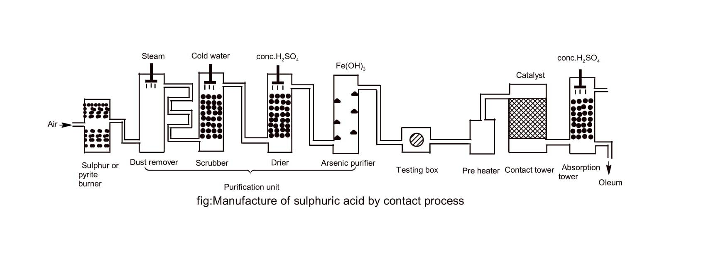
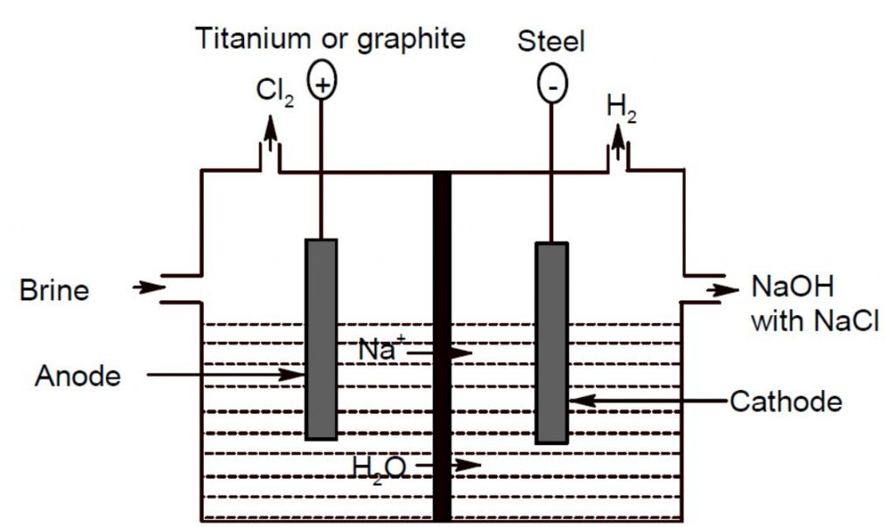

Chapter 1: Foundation and Fundamentals
General Introduction of Chemistry
Chemistry is the scientific study of matter, its properties, composition, structure, and the changes it
undergoes. It is a fundamental discipline that plays a crucial role in understanding the world around us. Here
are some key points about chemistry:
Branches of Chemistry:
- Organic Chemistry: It deals with the study of compounds containing carbon.
- Inorganic Chemistry: It focuses on the study of non-carbon-containing compounds.
- Physical Chemistry: It involves the study of the physical and chemical properties of substances and the
principles that govern their behavior.
- Analytical Chemistry: It focuses on the identification, separation, and quantification of substances.
- Biochemistry: It deals with the chemical processes and substances in living organisms.
- Environmental Chemistry: It studies the chemical processes and substances present in the environment.
Key Concepts:
- Atoms and Elements: Chemistry explores the building blocks of matter, known as atoms, and the various
elements that make up the periodic table.
- Chemical Reactions: Chemistry investigates how substances interact and undergo chemical changes, leading to
the formation of new substances.
- Molecular Structure: It involves the study of the arrangement and bonding of atoms within molecules, which
determines their properties and behavior.
- States of Matter: Chemistry examines the different forms of matter, including solids, liquids, and gases,
and how they transform under various conditions.
- Energy and Thermodynamics: It explores the principles of energy transfer and the study of heat and work in
chemical systems.
- Chemical Equilibrium: Chemistry investigates the balance between forward and reverse reactions in a system
and the factors that influence this equilibrium.
Applications:
- Medicine and Healthcare: Chemistry plays a crucial role in drug discovery, understanding biological
processes, and developing new medical treatments.
- Materials Science: It contributes to the development of new materials with desired properties, such as
stronger metals, lightweight composites, and advanced polymers.
- Energy Production and Storage: Chemistry is involved in the development of clean energy sources, efficient
batteries, and fuel cells.
- Environmental Protection: It helps in understanding and addressing environmental issues such as pollution,
climate change, and sustainable development.
- Food and Agriculture: Chemistry plays a role in food production, preservation, and analysis, as well as the
development of fertilizers and pesticides.
Chemistry is a dynamic field that continues to advance our understanding of the world and drive technological
innovations. It provides a foundation for other scientific disciplines and offers insights into the fundamental
principles governing matter and its transformations.
Scope and Importance of Chemistry
Chemistry is a diverse and essential field that has a wide scope and significant importance in various aspects
of life. Here are some key points highlighting the scope and importance of chemistry:
Understanding Matter:
- Chemistry helps us understand the composition, structure, and properties of matter at the atomic and
molecular levels. It allows us to unravel the fundamental nature of substances and their interactions.
- It provides insights into the behavior and transformations of matter, enabling us to develop new materials
and improve existing ones.
Advancing Scientific Knowledge:
- Chemistry contributes to the advancement of scientific knowledge by uncovering the principles and laws that
govern the behavior of matter.
- It serves as a foundation for other scientific disciplines, including biology, physics, geology, and
environmental science.
Applied Sciences and Technology:
- Chemistry plays a crucial role in applied sciences and technology, contributing to the development of new
products, processes, and technologies.
- It is involved in various fields such as pharmaceuticals, materials science, energy production,
environmental protection, and food and agriculture.
Healthcare and Medicine:
- Chemistry is essential in healthcare and medicine, enabling drug discovery and development, understanding
disease mechanisms, and designing diagnostic tools.
- Pharmaceutical chemistry, clinical chemistry, and medicinal chemistry are branches of chemistry dedicated to
healthcare and medicine.
Environmental and Energy Sciences:
- Chemistry plays a vital role in understanding and addressing environmental challenges, such as pollution
control, climate change, and sustainable development.
- It contributes to the development of clean energy sources, energy storage technologies, and environmental
monitoring and remediation methods.
Industry and Manufacturing:
- Chemistry is essential in industry and manufacturing sectors, where it helps in the production of various
materials, chemicals, and consumer products.
- It involves processes such as synthesis, purification, quality control, and product development.
Education and Research:
- Chemistry education equips individuals with scientific literacy and critical thinking skills.
- Chemical research drives innovation and contributes to scientific breakthroughs, leading to advancements in
technology, healthcare, and sustainability.
Basic Concepts of Chemistry
Chemistry is a branch of science that explores the properties, composition, structure, and behavior of matter.
It is built upon several fundamental concepts that provide a framework for understanding the subject. Here are
some basic concepts of chemistry:
Atoms:
- Atoms are the building blocks of matter. They are the smallest units of an element that retain the chemical
properties of that element.
- Atoms consist of a nucleus, which contains protons and neutrons, and electrons that orbit around the
nucleus.
- Atoms of different elements have different numbers of protons, giving rise to their unique chemical
properties.
Elements and Compounds:
- An element is a pure substance consisting of only one type of atom. The periodic table organizes elements
based on their atomic number.
- Compounds are substances formed by the combination of two or more different elements in fixed proportions.
They have distinct chemical properties different from their constituent elements.
- Chemical formulas are used to represent elements and compounds. For example, H2O represents water, which
consists of two hydrogen atoms and one oxygen atom.
Chemical Reactions:
- Chemical reactions involve the rearrangement of atoms to form new substances with different properties.
- Reactants are the starting substances, and products are the substances formed as a result of the reaction.
- Chemical equations are used to represent chemical reactions, with reactants on the left side and products on
the right side, separated by an arrow.
States of Matter:
- Matter exists in three primary states: solid, liquid, and gas.
- In solids, particles are closely packed and have fixed positions. In liquids, particles are close together
but can move past one another. In gases, particles are far apart and move freely.
- Changes in temperature and pressure can cause substances to change states, such as melting, boiling, or
condensing.
Chemical Bonding:
- Chemical bonding involves the attraction between atoms, leading to the formation of molecules or compounds.
- Covalent bonding involves the sharing of electrons between atoms, while ionic bonding involves the transfer
of electrons between atoms.
- Bonding influences the structure and properties of substances.
Acids and Bases:
- Acids are substances that release hydrogen ions (H+) in solution, while bases are substances that release
hydroxide ions (OH-) or accept H+ ions.
- The pH scale is used to measure the acidity or basicity of a solution, ranging from 0 (strong acid) to 14
(strong base), with 7 being neutral.
These are some of the basic concepts that form the foundation of chemistry. Understanding these concepts is
crucial for further exploration and comprehension of more complex chemical principles and phenomena.
Molecular Formula:
The molecular formula represents the actual number of atoms of each element in a molecule of a compound. It
provides the specific ratio of atoms in the compound. For example, the molecular formula of glucose is C6H12O6,
which indicates that each molecule of glucose contains six carbon atoms, twelve hydrogen atoms, and six oxygen
atoms.
Molecular Mass:
Molecular mass refers to the sum of the atomic masses of all the atoms in a molecule. It is calculated by
adding up the atomic masses of the elements in the molecular formula. The unit of molecular mass is atomic mass
units (amu) or grams per mole (g/mol). For example, the molecular mass of glucose (C6H12O6) can be calculated as
follows:
C (carbon) = 12.01 amu
H (hydrogen) = 1.008 amu
O (oxygen) = 16.00 amu
Total molecular mass of glucose = (6 * 12.01) + (12 * 1.008) + (6 * 16.00) = 180.18 amu
Percentage Composition of Elements:
The percentage composition of elements in a compound indicates the relative proportion of each element's mass
in the compound. It is expressed as a percentage. To calculate the percentage composition, you divide the mass
of each element by the total mass of the compound and multiply by 100%. For example, in glucose (C6H12O6), you
can determine the percentage composition as follows:
Mass of carbon = 6 * 12.01 amu = 72.06 amu
Mass of hydrogen = 12 * 1.008 amu = 12.096 amu
Mass of oxygen = 6 * 16.00 amu = 96.00 amu
Total mass of glucose = 180.18 amu
Percentage composition of carbon = (72.06 amu / 180.18 amu) * 100% = 40.00%
Percentage composition of hydrogen = (12.096 amu / 180.18 amu) * 100% = 6.72%
Percentage composition of oxygen = (96.00 amu / 180.18 amu) * 100% = 53.28%
Empirical Formula:
The empirical formula represents the simplest, most reduced ratio of elements in a compound. It indicates the
relative number of atoms of each element present in a compound. The empirical formula is derived from the
molecular formula by dividing all the subscripts by their greatest common divisor. For example, the empirical
formula of glucose (C6H12O6) is CH2O, as the ratio of carbon, hydrogen, and oxygen atoms is 1:2:1.
These concepts are fundamental to understanding the composition, structure, and properties of chemical
compounds.
Chemical Change:
Chemical change refers to a process in which one or more substances are transformed into new substances with
different chemical properties. During a chemical change, the arrangement of atoms in molecules or compounds is
altered, resulting in the formation of new chemical bonds and the breaking of existing bonds. Some common
examples of chemical changes include combustion, oxidation, and chemical reactions. Characteristics of a
chemical change include the formation of new substances, changes in color, production of gas, release or
absorption of energy (heat or light), and irreversibility.
Chemical Equation:
A chemical equation is a symbolic representation of a chemical reaction. It uses chemical formulas and symbols
to describe the reactants, products, and their relative proportions in a balanced manner. A balanced chemical
equation shows the conservation of mass, meaning that the total number of atoms of each element is the same on
both sides of the equation. The reactants are written on the left side, separated by a plus sign (+), and the
products are written on the right side, separated by an arrow (→) indicating the direction of the reaction.
Coefficients are used to balance the equation by adjusting the number of molecules or moles of each substance
involved.
For example, the combustion of methane (CH4) can be represented by the following balanced chemical equation:
CH4 + 2O2 → CO2 + 2H2O
This equation shows that one molecule of methane reacts with two molecules of oxygen gas to produce one
molecule of carbon dioxide and two molecules of water.
Chemical equations are important tools in chemistry as they provide a concise and standardized way of
representing chemical reactions. They allow scientists to communicate and understand the changes that occur
during chemical processes and enable the prediction of products and stoichiometric calculations.
Summary:
- Chemistry is a branch of science that explores the properties, composition, structure, and behavior of
matter.
- Fundamental concepts in chemistry include atoms, elements, compounds, chemical reactions, states of matter,
chemical bonding, and acids and bases.
- The molecular formula represents the actual number of atoms of each element in a molecule
of a compound, while molecular mass is the sum of the atomic masses of all the atoms in a
molecule.
- The percentage composition of elements in a compound indicates the relative proportion of
each element's mass in the compound.
- Chemical change refers to a process where one or more substances are transformed into new
substances with different chemical properties.
- Chemical equations are used to represent chemical reactions, showing the reactants and
products in a balanced manner.
- Understanding these basic concepts is crucial for further exploration of chemistry and its applications in
various fields.
- Chemistry plays a vital role in our daily lives, offering insights into substance composition, biological
systems, and technological advancements.
Chapter 2: Stoichiometry
Dalton's Atomic Theory:
Dalton's atomic theory, proposed by John Dalton in the early 19th century, laid the foundation for our
understanding of atoms and their behavior. The key postulates of Dalton's atomic theory are:
- All matter is composed of indivisible particles called atoms.
- Atoms of the same element are identical in their properties, while atoms of different elements are
different.
- Atoms combine in fixed ratios to form compounds.
- In chemical reactions, atoms are rearranged, but no atoms are created, destroyed, or changed into atoms of
another element.
Laws of Stoichiometry:
| Law |
Description |
Example |
| Law of Conservation of Mass |
The total mass of the reactants in a chemical reaction is equal to the total mass of the products. |
Example: When hydrogen gas (H2) combines with oxygen gas (O2) to form water (H2O), the total mass of the
reactants (hydrogen and oxygen) is equal to the total mass of the product (water). |
| Law of Definite Proportions |
A compound always contains the same elements in the same fixed proportions by mass. |
Example: Water (H2O) always contains two hydrogen atoms for every one oxygen atom, regardless of the
source of water. |
| Law of Multiple Proportions |
When two elements combine to form different compounds, the masses of one element that combine with a fixed
mass of the other element are in a ratio of small whole numbers. |
Example: Carbon and oxygen can combine to form carbon monoxide (CO) and carbon dioxide (CO2). In carbon
monoxide, the mass ratio of carbon to oxygen is 1:1, while in carbon dioxide, the mass ratio of carbon to
oxygen is 1:2. |
| Law of Combining Volumes |
When gases react, the volumes of the gases involved in the reaction are in simple whole number ratios.
|
Example: Hydrogen gas (H2) reacts with chlorine gas (Cl2) to form hydrogen chloride gas (HCl). The volume
ratio of hydrogen to chlorine to hydrogen chloride is 1:1:2. |
| Gay-Lussac's Law of Combining Volumes |
Under the same conditions of temperature and pressure, the volumes of gases involved in a chemical
reaction are in simple whole number ratios. |
Example: When ammonia (NH3) reacts with hydrochloric acid (HCl) to form ammonium chloride (NH4Cl), the
volume ratio of ammonia to hydrochloric acid to ammonium chloride is 1:3:2. |
Understanding atomic structure and the laws of stoichiometry is fundamental to comprehend the behavior and
interactions of matter at the atomic level.
Avogadro's Hypothesis (Avogadro's Law):
Avogadro's hypothesis, proposed by Amedeo Avogadro in 1811, states that equal volumes of gases, at the same
temperature and pressure, contain an equal number of molecules.
Some Deductions:
- Deduction: Molecular Mass = 2 x Vapour Density: Using Avogadro's hypothesis, it can be
deduced that the molecular mass of a substance is equal to two times its vapor density. This relationship
allows for the determination of molecular mass based on experimental measurements of vapor density.
- Deduction: Molar Volume is 22.4 L at STP: Avogadro's hypothesis, along with experimental
observations, leads to the deduction that at standard temperature and pressure (STP), the molar volume of any
gas is approximately 22.4 liters. This relationship allows for easy conversions between moles and volumes of
gases.
- Deduction: Avogadro's Number (A Constant Number): Avogadro's hypothesis implies that the
number of molecules or atoms in one mole of any substance is a constant value known as Avogadro's number
(6.022 × 10^23). This concept provides a basis for understanding the scale of atomic and molecular quantities.
- Deduction: Molecular Formula from Volumetric Composition: Avogadro's hypothesis allows for
the deduction of the molecular formula of a compound based on its volumetric composition. By determining the
volume ratios of the constituent gases in a reaction, the relative number of molecules and the molecular
formula can be established.
- Deduction: Concept of Gram Atom and Gram Mole: Avogadro's hypothesis facilitates the
concept of a gram atom and a gram mole. A gram atom represents the atomic mass of an element in grams, while a
gram mole represents the molar mass of a substance in grams. These concepts provide a convenient way to relate
mass and moles in chemical calculations.
Avogadro's hypothesis and its deductions have revolutionized our understanding of atomic and molecular
behavior, providing essential tools for quantitative analysis in chemistry.
Mole Concept:
The mole concept is a fundamental concept in chemistry that allows us to quantify and relate the amounts of
substances in chemical reactions. It is based on the concept of a mole, which is a unit used to measure the
amount of a substance. The mole is defined as the amount of a substance that contains the same number of
particles (atoms, molecules, or ions) as there are atoms in exactly 12 grams of carbon-12, which is known as
Avogadro's number (6.022 × 10^23).
Relation with Mass:
The mole concept allows us to relate the mass of a substance to the number of moles it contains. The molar mass
of a substance is the mass of one mole of that substance and is expressed in grams/mole. It can be calculated by
summing the atomic masses of all the atoms in a molecule or the formula unit of a compound. The relationship
between mass, moles, and molar mass is given by the equation:
Mass = Number of Moles × Molar Mass
Relation with Volume:
The mole concept also relates the volume of a gas to the number of moles it contains. At standard temperature
and pressure (STP), one mole of any gas occupies a volume of approximately 22.4 liters. This volume is known as
the molar volume of a gas at STP.
Relation with Particle:
The mole concept allows us to relate the number of moles of a substance to the number of particles it contains.
One mole of any substance contains Avogadro's number (6.022 × 10^23) of particles. This relationship is
expressed by the equation:
Number of Particles = Number of Moles × Avogadro's Number
The mole concept is essential for performing stoichiometric calculations, determining empirical and molecular
formulas, and understanding the quantitative aspects of chemical reactions. It provides a bridge between the
microscopic world of atoms and molecules and the macroscopic world of measurable quantities such as mass,
volume, and particles.
Calculation of Empirical Formula:
The empirical formula of a compound represents the simplest, most reduced ratio of the elements present in the
compound. It can be determined from the percentage composition of the elements in the compound. Here's the
general procedure:
- Assume a sample size of 100 grams or convert the given percentages to grams if necessary.
- Convert the mass of each element to moles by dividing it by the respective atomic or molecular weight.
- Divide each mole value by the smallest mole value obtained to get the mole ratio.
- If necessary, multiply the resulting ratios by the smallest whole number that will make all the ratios whole
numbers.
- Write the empirical formula using the obtained mole ratios as subscripts for the respective elements.
For example, let's consider a compound with the following percentage composition:
| Element |
Percentage |
| Carbon (C) |
40% |
| Hydrogen (H) |
6.7% |
| Oxygen (O) |
53.3% |
By converting the percentages to grams and then to moles, we can determine the mole ratios:
- Carbon (C): 40g -> 3.33 moles
- Hydrogen (H): 6.7g -> 6.66 moles
- Oxygen (O): 53.3g -> 3.33 moles
Dividing each mole value by the smallest mole value (3.33 moles), we obtain the ratio:
- Carbon: 3.33 / 3.33 = 1
- Hydrogen: 6.66 / 3.33 ≈ 2
- Oxygen: 3.33 / 3.33 = 1
Thus, the empirical formula for the compound is CH2O, representing the simplest ratio of atoms in
the compound.
Calculation of Molecular Formula:
The molecular formula of a compound represents the actual number of atoms of each element present in one
molecule of the compound. It can be determined if the molar mass of the compound is known in addition to the
empirical formula. Here's how to calculate the molecular formula:
- Calculate the empirical formula mass by summing the atomic masses of the elements in the empirical formula.
- Divide the molar mass of the compound by the empirical formula mass to obtain a whole number.
- Multiply the subscripts of the empirical formula by the obtained whole number to get the molecular formula.
For example, if the molar mass of the compound in the previous example is determined to be 60 g/mol, and the
empirical formula mass is found to be 30 g/mol, then:
Molar mass of compound / Empirical formula mass = 60 g/mol / 30 g/mol = 2
Since the whole number obtained is 2, we multiply the subscripts of the empirical formula (CH2O) by
2, resulting in the molecular formula C2H4O2.
Thus, the molecular formula for the compound is C2H4O2, indicating that there
are two carbon atoms, four hydrogen atoms, and two oxygen atoms in one molecule of the compound.
Calculation in Stoichiometric Chemical Equations:
In stoichiometry, the mole concept is used to determine the quantitative relationships between reactants and
products in a chemical reaction. It involves the use of balanced chemical equations and the conversion of moles
to masses, volumes, or number of particles. Here's how to perform calculations using the mole concept in
stoichiometry:
- Write and balance the chemical equation for the reaction.
- Convert the given quantity (mass, volume, or number of particles) of the known substance to moles using the
molar mass or molar volume.
- Use the stoichiometric coefficients in the balanced equation to establish the mole ratio between the known
and unknown substances.
- Calculate the moles of the unknown substance using the mole ratio.
- Convert the moles of the unknown substance to the desired quantity (mass, volume, or number of particles)
using the appropriate conversion factor.
Let's consider an example to illustrate the calculation in a stoichiometric chemical equation:
Example:
Balance the following chemical equation and calculate the mass of carbon dioxide (CO2) produced when
5 moles of methane (CH4) react:
CH4 + 2O2 → CO2 + 2H2O
Solution:
- The chemical equation is already balanced.
- Given: Moles of methane (CH4) = 5 moles
- Using the stoichiometric coefficients, the mole ratio between methane and carbon dioxide is 1:1.
- Therefore, the moles of carbon dioxide (CO2) produced will also be 5 moles.
- To calculate the mass of carbon dioxide, we need to multiply the moles of CO2 by its molar mass
(44.01 g/mol).
- Mass of CO2 = 5 moles × 44.01 g/mol = 220.05 g
Therefore, when 5 moles of methane react, the mass of carbon dioxide produced is 220.05 grams.
Calculations Involving Limiting Reactant, Excess Reactant, and Theoretical Yield:
In chemical reactions, the limiting reactant is the reactant that is completely consumed, thereby limiting the
amount of product that can be formed. The excess reactant is the reactant that remains unconsumed after the
limiting reactant is completely reacted. The theoretical yield is the maximum amount of product that can be
obtained based on the stoichiometry of the balanced chemical equation. Calculations involving limiting reactant,
excess reactant, and theoretical yield are important in determining the efficiency of a reaction and predicting
the amount of product that can be obtained.
The following steps can be followed to perform calculations involving limiting reactant, excess reactant, and
theoretical yield:
- Write and balance the chemical equation for the reaction.
- Determine the stoichiometric ratios of the reactants and products by examining the coefficients in the
balanced equation.
- Convert the given quantities of the reactants to moles using their respective molar masses.
- Identify the limiting reactant by comparing the mole ratios of the reactants.
- Calculate the amount of product that can be formed from the limiting reactant using the stoichiometric
ratio.
- Determine the excess reactant by subtracting the moles consumed by the limiting reactant from the initial
moles of the reactant.
- If desired, calculate the theoretical yield by converting the moles of the product to mass using its molar
mass.
Let's consider an example to illustrate calculations involving limiting reactant, excess reactant, and
theoretical yield:
Example:
In the reaction between 8 moles of hydrogen gas (H2) and 6 moles of oxygen gas (O2),
determine the limiting reactant, the excess reactant, and the theoretical yield of water (H2O) that
can be formed.
2H2 + O2 → 2H2O
Solution:
- The chemical equation is already balanced.
- The stoichiometric ratio between H2 and O2 is 2:1.
- Given: Moles of H2 = 8 moles, Moles of O2 = 6 moles.
- Using the stoichiometric ratio, we find that 4 moles of H2 are required to react with 2 moles of
O2 (in a 2:1 ratio).
- Since we have 8 moles of H2 and 6 moles of O2, H2 is the limiting reactant.
- From the stoichiometry, we know that 4 moles of H2 will produce 4 moles of H2O.
- The excess reactant is O2, with 2 moles remaining unused.
- If desired, we can calculate the theoretical yield of water by converting the moles of H2O to
mass using its molar mass.
Therefore, in the given reaction, the limiting reactant is H2, the excess reactant is O2,
and the theoretical yield of water that can be formed is 4 moles or a corresponding mass based on the molar mass
of H2O.
Chapter 3: Atomic Structure
| Atomic Structure History |
The understanding of atomic structure has evolved over centuries through the contributions of various
scientists. Here is a brief overview of the major milestones in the history of atomic structure:
Democritus (5th century BCE): Proposed the concept of atoms as indivisible and
indestructible particles that make up all matter.
John Dalton (1803): Developed Dalton's Atomic Theory, which stated that atoms are the
smallest particles of matter and are indivisible. He also introduced the concept of chemical elements and
their combinations to form compounds.
J.J. Thomson (1897): Discovered the electron through his experiments on cathode rays.
Proposed the Plum Pudding Model of the atom, where electrons are embedded in a positively charged sphere.
Ernest Rutherford (1911): Conducted the gold foil experiment and established the nuclear
model of the atom. He discovered that most of the atom's mass and positive charge are concentrated in a
tiny, dense nucleus, while electrons orbit around it.
James Chadwick (1932): Confirmed the existence of neutrons, which are neutral particles
located in the atomic nucleus.
These discoveries laid the foundation for our understanding of atomic structure and paved the way for
further advancements in the field of atomic and nuclear physics.
|
| Particle |
Symbol |
Charge |
Relative Mass |
| Electron |
e- |
-1 |
1/1836 |
| Proton |
p+ |
+1 |
1 |
| Neutron |
n |
0 |
1 |
The atomic structure consists of three fundamental particles: electrons, protons, and neutrons. Here are their
characteristics:
- Electron: Symbolized as e-, electrons are negatively charged particles that
orbit around the nucleus. They have a very small mass compared to protons and neutrons.
- Proton: Symbolized as p+, protons are positively charged particles found in the
atomic nucleus. They have a mass approximately equal to 1 atomic mass unit (u).
- Neutron: Symbolized as n, neutrons are neutral particles also located in the atomic
nucleus. They have a mass approximately equal to 1 atomic mass unit (u).
These particles play crucial roles in determining the properties and behavior of atoms, as well as the
formation of chemical bonds and interactions between atoms.
| Term |
Definition |
| Nucleon |
A nucleon refers to either a proton or a neutron, which are the particles present in the atomic nucleus.
|
| Charge |
Charge refers to the electrical property of particles. Protons have a positive charge of +1, electrons
have a negative charge of -1, and neutrons have no charge (neutral). |
| Mass Number |
The mass number of an atom represents the total number of protons and neutrons in its nucleus. It is
denoted by the symbol 'A'. |
| Alpha Particles |
Alpha particles are clusters of two protons and two neutrons. They are emitted during certain types of
radioactive decay and have a charge of +2. |
| Isotopes |
Isotopes are atoms of the same element that have the same number of protons but different numbers of
neutrons. They have similar chemical properties but differ in atomic mass. |
| Isotopic and Relative Mass |
Isotopic mass refers to the actual mass of a particular isotope of an element. Relative mass, on the other
hand, is the mass of an isotope relative to the mass of the carbon-12 isotope, which is assigned a mass of
exactly 12 atomic mass units (u). |
| Isotopic Effect |
The isotopic effect refers to the differences in physical or chemical properties observed due to
variations in the isotopic composition of an element. Isotopes may exhibit different reactivity, stability,
or other characteristics. |
| Isobars |
Isobars are atoms or ions that have the same mass number but different atomic numbers. In other words,
they have the same total number of nucleons but different numbers of protons and neutrons. |
Rutherford's Alpha Ray Scattering Experiment and the Atomic Model
Experiment:
- Rutherford and his colleagues conducted the Alpha Ray Scattering Experiment, also known as the Gold Foil
Experiment, in 1911.
- They directed a beam of alpha particles (helium nuclei) at a thin gold foil.
- A circular detecting screen coated with zinc sulfide surrounded the gold foil.
Observations:
- Most of the alpha particles passed through the gold foil without any deflection, forming a bright spot on
the detecting screen.
- Some alpha particles were deflected at small angles, deviating from their original path.
- A small fraction of alpha particles experienced significant deflections, bouncing back or scattering at
large angles.
Conclusions:
- Most of the atom is empty space, as most alpha particles passed through the gold foil without deflection.
- There is a dense, positively charged nucleus within the atom, inferred from the deflection of some alpha
particles at small angles.
- The nucleus occupies a very small volume compared to the total volume of the atom.
- Electrons surround the nucleus outside of the dense central region.
Postulates of Rutherford's Atomic Model:
- Most of the atom is empty space.
- The atom has a dense, positively charged nucleus at the center.
- Electrons revolve around the nucleus in well-defined orbits or energy levels.
- The magnitude of the positive charge in the nucleus is equal to the total negative charge of the electrons,
resulting in overall electrical neutrality of the atom.
Drawbacks of Rutherford's Model:
- The model could not explain the stability of the atom based on classical electromagnetic theory.
- It did not account for the existence of subatomic particles like neutrons.
- The model failed to explain the discrete emission or absorption spectra observed for different elements.
Rutherford's Alpha Ray Scattering Experiment and his atomic model were pivotal in advancing our understanding
of atomic structure, even though subsequent discoveries and theories refined our knowledge further.
Bohr's Atomic Model
Introduction:
Bohr's Atomic Model, proposed by Niels Bohr in 1913, built upon Rutherford's model and provided a more
detailed understanding of atomic structure. It introduced the concept of energy levels or orbits in which
electrons revolve around the nucleus. Here are the key features of Bohr's Atomic Model:
Postulates:
- Electrons revolve around the nucleus in specific circular orbits or energy levels.
- Electrons can exist only in certain discrete energy levels, and each energy level has a fixed energy
associated with it.
- An electron can move from one energy level to another by absorbing or emitting energy in the form of
photons.
- The energy of an electron is quantized, meaning it can only have specific values and cannot exist between
energy levels.
- The electron closest to the nucleus occupies the lowest energy level (ground state), while electrons in
higher energy levels are in excited states.
- The energy of an electron is inversely proportional to its distance from the nucleus.
Atomic Structure:
The nucleus contains protons, which carry positive charge, and neutrons, which have no charge. Electrons, which
are negatively charged, revolve around the nucleus in distinct energy levels.
Energy Levels and Spectral Lines:
Bohr's model explained the line spectra observed in atomic emission or absorption experiments. When an electron
moves from a higher energy level to a lower energy level, it emits a photon of specific energy, resulting in a
spectral line. The energy of the emitted or absorbed photons corresponds to the difference in energy between the
initial and final energy levels.
Drawbacks:
- Bohr's model only worked for hydrogen-like atoms with a single electron, failing to explain the spectra of
more complex atoms.
- It couldn't explain the fine details of spectral lines and the effects of external magnetic and electric
fields.
- The model didn't address the wave-particle duality of electrons.
- It did not provide a fundamental explanation for the stability of the atom.
Despite its limitations, Bohr's Atomic Model laid the foundation for further developments in quantum mechanics
and led to a deeper understanding of atomic structure and behavior.
The Hydrogen Spectrum
The hydrogen spectrum refers to the pattern of electromagnetic radiation emitted or absorbed by hydrogen atoms.
It played a significant role in the development of quantum mechanics and provided crucial insights into the
nature of atomic structure. Here are the key features of the hydrogen spectrum:
Emission Spectrum:
When an electron in a hydrogen atom transitions from a higher energy level to a lower energy level, it releases
energy in the form of photons. These photons have specific wavelengths corresponding to different energy
differences between the energy levels. The emission spectrum of hydrogen can be described using the formula:
ΔE = Efinal - Einitial = -2.18 × 10-18 J ×
(1/nfinal2 - 1/ninitial2)
where ΔE is the energy difference, Efinal and Einitial are the energies of the final and
initial states, and nfinal and ninitial are the principal quantum numbers of the final and
initial states, respectively.
Series in the Hydrogen Spectrum:
The hydrogen spectrum can be divided into several series, named after the scientists who discovered them. The
prominent series include:
- Lyman Series: This series corresponds to electron transitions to the n = 1 energy level,
resulting in ultraviolet (UV) radiation.
- Balmer Series: This series corresponds to electron transitions to the n = 2 energy level,
resulting in visible light radiation, including prominent lines like H-alpha (656 nm) and H-beta (486 nm).
- Paschen Series: This series corresponds to electron transitions to the n = 3 energy level,
resulting in infrared (IR) radiation.
- Brackett Series: This series corresponds to electron transitions to the n = 4 energy level,
resulting in infrared (IR) radiation.
- Pfund Series: This series corresponds to electron transitions to the n = 5 energy level,
resulting in infrared (IR) radiation.
Quantized Energy Levels:
The hydrogen spectrum provided evidence for the quantization of energy levels in atoms. The observed discrete
lines in the spectrum indicated that only specific energy transitions were allowed, corresponding to specific
differences in energy levels.
Bohr's Model and the Hydrogen Spectrum:
Bohr's Atomic Model successfully explained the hydrogen spectrum by incorporating the concept of quantized
energy levels and electron transitions. The model predicted the wavelengths of the spectral lines based on the
energy differences between the energy levels.
The study of the hydrogen spectrum and its interpretation played a crucial role in the development of quantum
mechanics and our understanding of atomic structure, leading to significant advancements in physics and
chemistry.
Wave-Particle Duality: De Broglie Equation
Wave-particle duality is a fundamental concept in quantum mechanics that suggests that particles, such as
electrons and photons, can exhibit both wave-like and particle-like properties. This duality was first proposed
by Louis de Broglie, who introduced the de Broglie equation to describe the wave nature of particles.
De Broglie Equation:
The de Broglie equation relates the wavelength (λ) of a particle to its momentum (p) and Planck's constant (h).
The equation is given by:
λ = h / p
where λ is the wavelength, h is Planck's constant (approximately 6.626 x 10^-34 J·s), and p is the momentum of
the particle.
The de Broglie equation suggests that all particles, including matter particles, have wave-like
characteristics. The wavelength associated with a particle is inversely proportional to its momentum. This means
that particles with higher momentum have shorter wavelengths, while particles with lower momentum have longer
wavelengths.
Applications of De Broglie Equation:
The de Broglie equation has several important applications in quantum mechanics:
- Electron Diffraction: The de Broglie wavelength of electrons allows them to exhibit
diffraction patterns when passing through a narrow slit or interacting with a crystal lattice. This phenomenon
is similar to the diffraction of light waves and provides evidence for the wave-like nature of electrons.
- Particle Accelerators: The de Broglie equation is used in particle accelerators to
calculate the appropriate wavelength and energy of accelerated particles. It helps determine the optimal
conditions for particle collisions and accelerates particles to specific velocities for various experimental
purposes.
- Quantum Mechanics: The de Broglie wavelength is a crucial concept in quantum mechanics. It
is used to describe the wave nature of particles and is incorporated into the mathematical equations that
govern the behavior of quantum systems.
Significance of Wave-Particle Duality:
The concept of wave-particle duality revolutionized our understanding of the microscopic world. It highlighted
that particles can exhibit wave-like properties and waves can exhibit particle-like properties. This duality is
fundamental to quantum mechanics and provides a deeper understanding of the behavior of particles at the atomic
and subatomic levels.
The de Broglie equation is a key tool in understanding and predicting the wave-like behavior of particles and
has contributed significantly to the development of modern physics.
Heisenberg's Uncertainty Principle
Heisenberg's Uncertainty Principle is a fundamental principle in quantum mechanics that states that it is
impossible to simultaneously determine certain pairs of physical properties with absolute precision. It was
formulated by German physicist Werner Heisenberg in 1927.
The Principle:
The uncertainty principle is mathematically expressed as:
Δx · Δp ≥ h / (4π)
where Δx represents the uncertainty in the position of a particle, Δp represents the uncertainty in its
momentum, and h is Planck's constant.
This principle implies that the more precisely one property (e.g., position) is measured, the less precisely
the other property (e.g., momentum) can be known, and vice versa.
Key Points:
- Position and Momentum: The uncertainty principle applies to pairs of properties, such as
position and momentum. It states that the more accurately you try to measure the position of a particle, the
less accurately you can know its momentum, and vice versa.
- Wave-Particle Duality: The uncertainty principle is closely related to the wave-particle
duality of quantum mechanics. It reflects the inherent wave-like nature of particles and the limitations in
simultaneously determining their particle-like properties.
- Quantum Nature of Reality: The uncertainty principle suggests that there are fundamental
limits to the precision with which we can measure certain properties of particles. It challenges the classical
notion of determinism and emphasizes the probabilistic nature of quantum mechanics.
- Applications: The uncertainty principle has profound implications for various areas of
physics and technology. It plays a crucial role in understanding the behavior of particles at the microscopic
level, quantum mechanics, the design of electronic devices, and technologies such as electron microscopy.
Significance:
Heisenberg's Uncertainty Principle revolutionized our understanding of the nature of reality at the quantum
level. It fundamentally changed the way we perceive and study particles and their properties. The principle
underscores the limitations and uncertainties inherent in the measurement of quantum systems and highlights the
probabilistic nature of quantum mechanics.
Heisenberg's Uncertainty Principle is a cornerstone of quantum theory and has shaped our modern understanding
of the microscopic world.
Concept of Probability in Heisenberg's Uncertainty Principle
The concept of probability plays a fundamental role in understanding Heisenberg's Uncertainty
Principle in quantum mechanics. The uncertainty principle states that there are inherent limits to
the precision with which certain pairs of physical properties, such as position and momentum, can be
simultaneously known.
According to the uncertainty principle, the more precisely we try to measure the position of a particle, the
less precisely we can know its momentum, and vice versa. This introduces an element of uncertainty or
probability into our knowledge of the particle's properties.
In the context of Heisenberg's Uncertainty Principle, probability comes into play because the exact position
and momentum of a particle cannot be determined with absolute certainty. Instead, we can only assign
probabilities to different outcomes.
The uncertainty principle reflects the wave-particle duality of quantum mechanics, where
particles can exhibit both wave-like and particle-like properties. The precise position and momentum of a
particle are described by wavefunctions, which are probabilistic in nature. The square of the
wavefunction, known as the probability density, gives the probability of finding the particle
in a particular region of space.
In other words, the uncertainty principle implies that there is an inherent uncertainty or probability
associated with the position and momentum of particles at the quantum level. It highlights the limitations of
classical determinism and emphasizes the probabilistic nature of quantum mechanics.
Overall, the concept of probability is essential in understanding Heisenberg's Uncertainty Principle as it
helps us grasp the inherent uncertainties and probabilistic nature of the properties of particles at the quantum
level.
Electron Orbit and Atomic Orbital (Shell and Subshell)
In atomic physics, the concepts of electron orbit and atomic orbital are used to describe the arrangement of
electrons around an atomic nucleus.
Electron Orbit:
An electron orbit refers to the path followed by an electron as it revolves around the nucleus of an atom. This
concept was proposed by the early atomic models, such as the Bohr model. According to these models, electrons
occupy specific circular orbits or energy levels at fixed distances from the nucleus.
However, the concept of electron orbits has been superseded by the more accurate atomic orbital model, based on
quantum mechanics.
Atomic Orbital:
An atomic orbital represents the probability distribution of finding an electron within a particular region of
space around the nucleus of an atom. Atomic orbitals are described by wavefunctions, which are mathematical
functions that characterize the behavior of electrons in quantum mechanics.
Atomic orbitals are categorized into different shells and subshells:
- Shells: Shells are designated by principal quantum numbers (n) and represent the energy
levels or main electron shells. The first shell (n=1) is closest to the nucleus, followed by the second shell
(n=2), third shell (n=3), and so on. Each shell can accommodate a maximum number of electrons based on the
formula 2n^2.
- Subshells: Each shell is further divided into subshells, which are denoted by letters (s,
p, d, f). Subshells have different shapes and orientations, representing different angular momentum states.
The maximum number of electrons that can occupy a subshell depends on its type: s subshell holds 2 electrons,
p subshell holds 6 electrons, d subshell holds 10 electrons, and f subshell holds 14 electrons.
For example, the first shell (n=1) has only one subshell, the s subshell. It can hold a maximum of 2 electrons.
The second shell (n=2) has two subshells: the s subshell (2 electrons) and the p subshell (6 electrons).
The arrangement of electrons in atomic orbitals follows specific rules, such as the Aufbau principle, Pauli
exclusion principle, and Hund's rule, which govern the filling order and electron configurations in atoms.
Overall, the concept of electron orbit and atomic orbital provides a framework for understanding the
distribution of electrons in atoms and the organization of energy levels, shells, and subshells.
Quantum Numbers
In quantum mechanics, quantum numbers are used to describe the characteristics and properties of electrons in
an atom. They provide a way to identify and differentiate the various atomic orbitals and their corresponding
electrons. There are four main quantum numbers: principal quantum number (n), azimuthal quantum number (l),
magnetic quantum number (ml), and spin quantum number (ms).
1. Principal Quantum Number (n):
The principal quantum number (n) indicates the energy level or shell in which an electron resides. It
represents the average distance of the electron from the nucleus. The values of n are positive integers (1, 2,
3, ...) starting from 1. Higher values of n correspond to higher energy levels and larger orbitals. For example,
the first shell has n=1, the second shell has n=2, and so on.
2. Azimuthal Quantum Number (l):
The azimuthal quantum number (l) determines the shape of the atomic orbital. It represents the subshell or
orbital type within a particular shell. The values of l range from 0 to (n-1). Each value of l corresponds to a
specific subshell: 0 represents the s subshell, 1 represents the p subshell, 2 represents the d subshell, and 3
represents the f subshell.
3. Magnetic Quantum Number (ml):
The magnetic quantum number (ml) specifies the orientation or spatial orientation of the atomic
orbital within a subshell. It determines the number of orbitals within a subshell. The values of ml
range from -l to +l, including zero. For example, for the p subshell (l=1), the possible values of ml
are -1, 0, and +1, indicating the three perpendicular p orbitals (px, py, pz).
4. Spin Quantum Number (ms):
The spin quantum number (ms) represents the intrinsic angular momentum or spin of the electron. It
describes the two possible spin orientations of an electron: spin-up (+1/2) or spin-down (-1/2).
The combination of these quantum numbers provides a unique set of values for each electron in an atom, defining
its energy level, orbital shape, spatial orientation, and spin orientation.
Quantum numbers are crucial for understanding electron configurations, determining the arrangement of electrons
in orbitals, and predicting the behavior and properties of atoms.
Aufbau Principle:
The Aufbau Principle is a fundamental principle in chemistry that describes the order in which electrons fill
atomic orbitals in an atom. According to this principle, electrons occupy the lowest energy orbitals available
before filling higher energy orbitals. The Aufbau Principle is based on the idea that electrons seek to attain
the most stable arrangement by occupying the lowest energy levels first.
The order of filling atomic orbitals follows the sequence of increasing energy levels, known as the building-up
order. The order of filling orbitals is as follows:
- 1s
- 2s, 2p
- 3s, 3p
- 4s, 3d
- 5s, 4d
- 6s, 4f
- 7s, 5f
- and so on.
The Aufbau Principle helps in determining the electron configurations of atoms and understanding the
distribution of electrons in different energy levels and orbitals.
Simmon's (n+1) Rule:
The Simmon's (n+1) Rule, also known as the Madelung Rule, is a modification of the Aufbau Principle that takes
into account the different energies of subshells within a given principal energy level. According to this rule,
the order of filling orbitals within a given principal energy level is determined by the sum of the principal
quantum number (n) and the azimuthal quantum number (l).
In the (n+1) Rule, the subshells are filled in the order of increasing (n+l) values. If two or more subshells
have the same (n+l) value, they are filled based on the order of increasing n. The (n+1) Rule helps in
determining the sequence of filling orbitals in complex atoms where subshells of different principal quantum
numbers overlap.
The Simmon's (n+1) Rule provides a more accurate description of electron filling order compared to the simple
Aufbau Principle, especially for elements with multiple electron shells and subshells.
Both the Aufbau Principle and the Simmon's (n+1) Rule are important for understanding electron configurations,
predicting chemical properties, and explaining the periodic trends in the periodic table.
Pauli's Exclusion Principle:
Pauli's Exclusion Principle is a fundamental principle in quantum mechanics that states that no two electrons
in an atom can have the same set of quantum numbers. It was formulated by the Austrian physicist Wolfgang Pauli
in 1925.
According to the principle, each electron within an atom is described by a unique set of quantum numbers,
including the principal quantum number (n), azimuthal quantum number (l), magnetic quantum number (ml), and spin
quantum number (ms). The spin quantum number specifies the orientation of the electron's spin and can have two
possible values: +½ (spin-up) and -½ (spin-down).
The main consequence of Pauli's Exclusion Principle is that it leads to the filling of atomic orbitals with a
maximum of two electrons, with opposite spins. This principle explains the observed electron configurations in
atoms and the arrangement of electrons in different energy levels and subshells.
Pauli's Exclusion Principle has significant implications for the stability and chemical behavior of atoms. It
helps in determining the electronic structure of elements, understanding the periodic table, and predicting the
formation of chemical bonds.
Overall, Pauli's Exclusion Principle is a fundamental principle in quantum mechanics that governs the behavior
and arrangement of electrons in atoms, providing a key foundation for our understanding of atomic structure and
chemical properties.
Hund's Rule of Maximum Multiplicity:
Hund's Rule is a principle in quantum mechanics that describes the distribution of electrons in orbitals within
a subshell. It was formulated by the German physicist Friedrich Hund in 1927.
According to Hund's Rule, when orbitals of equal energy, known as degenerate orbitals, are available, electrons
will occupy separate orbitals with parallel spins before pairing up. This means that electrons will first fill
all available orbitals in a subshell with the same spin direction (spin-up) before pairing with opposite spin
(spin-down).
Hund's Rule can be understood based on the concept of electron-electron repulsion. Electrons are negatively
charged particles, and they repel each other. By occupying separate orbitals with parallel spins, they minimize
their repulsion and achieve a more stable arrangement.
This rule is particularly significant when filling the orbitals of p, d, and f subshells, which have multiple
degenerate orbitals. The application of Hund's Rule leads to a set of half-filled and fully-filled subshells,
which are relatively more stable than partially filled subshells.
Hund's Rule plays a crucial role in determining the electron configurations of atoms, especially for elements
beyond the first few in the periodic table. It helps explain the observed distribution of electrons in subshells
and the resulting magnetic properties of atoms and ions.
Overall, Hund's Rule of Maximum Multiplicity provides insights into the arrangement of electrons within
subshells and contributes to our understanding of atomic structure and the behavior of electrons in atoms.
Electronic Configuration:
Electronic configuration refers to the arrangement of electrons within an atom or ion in different energy
levels, subshells, and orbitals. It describes the distribution of electrons according to their quantum numbers,
following the principles and rules of quantum mechanics.
The electronic configuration of an atom is represented using a notation that includes the symbol of the element
followed by a series of numbers and letters. The numbers indicate the principal quantum number (n), which
represents the energy level or shell, while the letters represent the subshell or orbital type (s, p, d, f).
The rules and principles used to determine the electronic configuration of atoms are as follows:
- Aufbau Principle: According to the Aufbau Principle, electrons occupy the lowest available
energy level (shell) first before moving to higher energy levels. This means that the 1s subshell is filled
before the 2s, followed by the 2p, and so on.
- Pauli's Exclusion Principle: Pauli's Exclusion Principle states that no two electrons
within an atom can have the same set of quantum numbers. This means that each orbital can accommodate a
maximum of two electrons with opposite spins (spin-up and spin-down).
- Hund's Rule: Hund's Rule of Maximum Multiplicity states that when degenerate orbitals are
available, electrons will occupy separate orbitals with parallel spins before pairing up. This leads to a more
stable arrangement and results in partially filled or half-filled subshells.
| Element |
Symbol |
Electronic Configuration |
| Hydrogen |
H |
1s1 |
| Helium |
He |
1s2 |
| Lithium |
Li |
1s2 2s1 |
| Beryllium |
Be |
1s2 2s2 |
| Boron |
B |
1s2 2s2 2p1 |
| Carbon |
C |
1s2 2s2 2p2 |
| Nitrogen |
N |
1s2 2s2 2p3 |
| Oxygen |
O |
1s2 2s2 2p4 |
| Fluorine |
F |
1s2 2s2 2p5 |
| Neon |
Ne |
1s2 2s2 2p6 |
| Sodium |
Na |
1s2 2s2 2p6 3s1 |
| Magnesium |
Mg |
1s2 2s2 2p6 3s2 |
| Aluminum |
Al |
1s2 2s2 2p6 3s2 3p1 |
| Silicon |
Si |
1s2 2s2 2p6 3s2 3p2 |
| Phosphorus |
P |
1s2 2s2 2p6 3s2 3p3 |
| Sulfur |
S |
1s2 2s2 2p6 3s2 3p4 |
| Chlorine |
Cl |
1s2 2s2 2p6 3s2 3p5 |
| Argon |
Ar |
1s2 2s2 2p6 3s2 3p6 |
| Potassium |
K |
1s2 2s2 2p6 3s2 3p6 4s1 |
| Calcium |
Ca |
1s2 2s2 2p6 3s2 3p6 4s2 |
| Scandium |
Sc |
1s2 2s2 2p6 3s2 3p6 4s2 3d1
|
| Titanium |
Ti |
1s2 2s2 2p6 3s2 3p6 4s2 3d2
|
| Vanadium |
V |
1s2 2s2 2p6 3s2 3p6 4s2 3d3
|
| Chromium |
Cr |
1s2 2s2 2p6 3s2 3p6 4s1 3d5
|
| Manganese |
Mn |
1s2 2s2 2p6 3s2 3p6 4s2 3d5
|
| Iron |
Fe |
1s2 2s2 2p6 3s2 3p6 4s2 3d6
|
| Cobalt |
Co |
1s2 2s2 2p6 3s2 3p6 4s2 3d7
|
| Nickel |
Ni |
1s2 2s2 2p6 3s2 3p6 4s2 3d8
|
| Copper |
Cu |
1s2 2s2 2p6 3s2 3p6 4s1 3d10
|
| Zinc |
Zn |
1s2 2s2 2p6 3s2 3p6 4s2 3d10
|
The electronic configuration provides important information about the organization of electrons in an atom,
including the number of electrons in each energy level, subshell, and orbital. It helps in understanding the
chemical properties, reactivity, and bonding behavior of elements.
For example, the electronic configuration of oxygen (O) is 1s^2 2s^2 2p^4, indicating that it has two electrons
in the 1s orbital, two in the 2s orbital, and four in the 2p orbital.
Overall, the electronic configuration is a fundamental concept in chemistry that helps in explaining the
behavior and properties of elements and their interactions with other substances.
Chapter 4: Classification of Elements and Periodic Table
Proust's Classification:
Joseph Louis Proust contributed to the development of chemical classification with his Law of Definite
Proportions. This law states that chemical compounds always contain the same elements in the same fixed
proportions by mass. In other words, the ratio of elements in a compound is constant regardless of the amount of
the compound present.
Dobereiner's Classification:
Johann Wolfgang Döbereiner proposed the concept of triads, where he grouped elements into sets of three based
on their similar chemical properties. He observed that the atomic weight of the middle element in a triad was
approximately the average of the other two elements. For example, the triad of lithium, sodium, and potassium
exhibited similar chemical behavior, and the atomic weight of sodium was the average of lithium and potassium.
Newlands' Classification:
John Newlands arranged the known elements in order of increasing atomic weight and noticed that properties
repeated every eighth element, similar to the musical octave. This periodicity led to the Law of Octaves, which
stated that every eighth element had similar chemical properties. Newlands' classification was significant as it
was the first attempt to organize elements based on periodicity.
Mendeleev's Classification:
Dmitri Mendeleev is widely credited for developing the modern periodic table. He arranged the elements in order
of increasing atomic weight and observed that elements with similar properties occurred at regular intervals.
Mendeleev left gaps in his periodic table for undiscovered elements and accurately predicted their properties.
He also emphasized the periodicity of elements and proposed the concept of periodic law, stating that the
properties of elements are a periodic function of their atomic weights.
Modern Periodic Law:
The Modern Periodic Law states that the physical and chemical properties of elements are periodic functions of
their atomic numbers. This means that when elements are arranged in order of increasing atomic number, their
properties repeat in a regular pattern. The modern periodic law builds upon Mendeleev's periodic law and takes
into account the concept of atomic numbers rather than atomic weights.
Modern Periodic Table:
The modern periodic table is a tabular arrangement of elements based on their atomic numbers, electronic
configurations, and chemical properties. It is divided into periods (horizontal rows) and groups (vertical
columns). Each element is represented by its atomic symbol, atomic number, and atomic mass. The elements in the
periodic table are arranged in such a way that elements with similar properties are placed in the same group.
The modern periodic table consists of blocks, including the s-block, p-block, d-block, and f-block, based on
the electron configuration of elements. The table provides valuable information about the properties and
characteristics of elements, including their reactivity, atomic size, ionization energy, and electronegativity.
The modern periodic table has been expanded to include the discovery of new elements beyond atomic number 118.
It has undergone revisions and refinements over time to accommodate the understanding of the properties and
behaviors of elements.
| Periodic Table |
H
1
1.0079 |
He
2
4.0026 |
Li
3
6.941 |
Be
4
9.0122 |
B
5
10.81 |
C
6
12.011 |
N
7
14.007 |
O
8
15.999 |
F
9
18.998 |
Ne
10
20.18 |
Na
11
22.99 |
Mg
12
24.305 |
Al
13
26.982 |
Si
14
28.085 |
P
15
30.974 |
S
16
32.06 |
Cl
17
35.45 |
Ar
18
39.948 |
K
19
39.098 |
Ca
20
40.078 |
Sc
21
44.956 |
Ti
22
47.867 |
V
23
50.942 |
Cr
24
51.996 |
Mn
25
54.938 |
Fe
26
55.845 |
Co
27
58.933 |
Ni
28
58.693 |
Cu
29
63.546 |
Zn
30
65.38 |
Ga
31
69.723 |
Ge
32
72.63 |
As
33
74.922 |
Se
34
78.96 |
Br
35
79.904 |
Kr
36
83.798 |
Rb
37
85.468 |
Sr
38
87.62 |
Y
39
88.906 |
Zr
40
91.224 |
Nb
41
92.906 |
Mo
42
95.95 |
Tc
43
(98) |
Ru
44
101.07 |
Rh
45
102.91 |
Pd
46
106.42 |
Ag
47
107.87 |
Cd
48
112.41 |
In
49
114.82 |
Sn
50
118.71 |
Sb
51
121.76 |
Te
52
127.6 |
I
53
126.9 |
Xe
54
131.29 |
Cs
55
132.91 |
Ba
56
137.33 |
La-Lu |
Hf
72
178.49 |
Ta
73
180.95 |
W
74
183.84 |
Re
75
186.21 |
Os
76
190.23 |
Ir
77
192.22 |
Pt
78
195.08 |
Au
79
196.97 |
Hg
80
200.59 |
Tl
81
204.38 |
Pb
82
207.2 |
Bi
83
208.98 |
Po
84
(209) |
At
85
(210) |
Rn
86
(222) |
Modern Periodic Table
| Period |
Group |
Element |
Symbol |
Atomic Number |
Atomic Mass |
| 1 |
1 |
Hydrogen |
H |
1 |
1.008 |
| 1 |
2 |
Helium |
He |
2 |
4.0026 |
| 2 |
1 |
Lithium |
Li |
3 |
6.941 |
| 2 |
2 |
Beryllium |
Be |
4 |
9.0122 |
| 2 |
3 |
Boron |
B |
5 |
10.811 |
| 2 |
4 |
Carbon |
C |
6 |
12.011 |
| 2 |
5 |
Nitrogen |
N |
7 |
14.007 |
| 2 |
6 |
Oxygen |
O |
8 |
15.999 |
| 2 |
7 |
Fluorine |
F |
9 |
18.998 |
| 2 |
8 |
Neon |
Ne |
10 |
20.180 |
...
Ionization Energy (Ionization Potential):
Ionization energy refers to the energy required to remove an electron from a neutral atom or ion in its gaseous
state. It is a measure of the atom's or ion's ability to hold onto its electrons and resist losing them.
Key Points:
- Ionization energy is typically expressed in kilojoules per mole (kJ/mol) or electron volts (eV).
- The first ionization energy refers to the energy required to remove the first electron from a neutral atom,
forming a positive ion.
- Subsequent ionization energies refer to the energy required to remove subsequent electrons from the positive
ion, resulting in the formation of higher charged ions.
- Ionization energy generally increases from left to right across a period in the periodic table due to
increasing nuclear charge and decreasing atomic radius.
- Ionization energy tends to decrease down a group in the periodic table due to increasing atomic size and
shielding effects.
- The noble gases have the highest ionization energies since they have complete valence electron
configurations and are highly stable.
- Transition metals have relatively low ionization energies compared to main group elements due to their
partially filled d and f orbitals.
It's important to note that ionization energy values can vary depending on the specific element or ion and the
experimental conditions.
Atomic and Ionic Radii:
Atomic and ionic radii refer to the size of atoms and ions, respectively. The radii are typically measured as
the distance from the nucleus to the outermost electron shell or the outermost electron in an ion.
Key Points:
- Atomic radius is the size of an atom, usually defined as half the distance between the nuclei of two bonded
atoms of the same element.
- Ionic radius is the size of an ion, which can be larger or smaller than the corresponding atom depending on
whether it is a cation or an anion.
- Atomic and ionic radii generally decrease from left to right across a period in the periodic table due to
increasing nuclear charge and stronger attraction to the electrons.
- Atomic and ionic radii tend to increase down a group in the periodic table due to the addition of new energy
levels and increasing electron shielding.
- Cations (positively charged ions) are smaller than their parent atoms due to the loss of one or more
electron shells.
- Anions (negatively charged ions) are larger than their parent atoms due to the addition of extra electrons
and increased electron-electron repulsion.
- The noble gases have the largest atomic and ionic radii within a period as they have complete valence
electron configurations and are highly stable.
It's important to note that atomic and ionic radii can vary depending on the specific element, its oxidation
state, and the coordination number in ionic compounds.
Electronegativity:
Electronegativity is a measure of an atom's tendency to attract electrons towards itself when participating in
a chemical bond. It helps determine the polarity of bonds and molecules. Electronegativity is typically
represented on the Pauling scale, which assigns arbitrary values ranging from 0.7 to 4.0 to elements.
Key Points:
- Electronegativity increases from left to right across a period in the periodic table due to increasing
nuclear charge and decreasing atomic radius.
- Electronegativity generally decreases down a group in the periodic table due to increasing atomic size and
shielding effects.
- Fluorine (F) is the most electronegative element with a value of 3.98, while cesium (Cs) is the least
electronegative with a value of 0.79.
- The difference in electronegativity between atoms in a bond determines the bond type: ionic or covalent.
- Electronegativity influences the polarity of molecules and affects their physical and chemical properties.
It's important to note that electronegativity values are approximate and can vary slightly depending on the
scale used.
Electron Affinity:
Electron affinity refers to the energy change that occurs when an atom or ion gains an electron to form a
negative ion. It is a measure of the atom's or ion's tendency to attract and bind an additional electron.
Key Points:
- Electron affinity is typically expressed in kilojoules per mole (kJ/mol) or electron volts (eV).
- A positive electron affinity indicates that energy is released when an atom gains an electron, making the
process favorable.
- A negative electron affinity indicates that energy must be supplied for an atom to accept an electron,
making the process unfavorable.
- The halogens, such as chlorine and fluorine, have high electron affinities as they strongly attract
additional electrons to complete their valence electron configuration.
- Noble gases have low or zero electron affinities since their electron configurations are already stable.
- Electron affinity values generally increase from left to right across a period in the periodic table.
- Electron affinity tends to decrease down a group in the periodic table due to increasing atomic size and
shielding effects.
It's important to note that electron affinity values can vary depending on the specific element or ion and the
experimental conditions.
Metallic Character and its Periodic Trend:
Metallic character refers to the extent to which an element exhibits the properties characteristic of metals.
These properties include high electrical and thermal conductivity, luster, malleability, ductility, and the
tendency to form positive ions (cations) in chemical reactions.
Key Points:
- Metallic character generally increases from right to left across a period in the periodic table.
- Metallic character generally increases down a group in the periodic table.
- Elements on the left side of the periodic table, especially the alkali metals and alkaline earth metals,
exhibit strong metallic character.
- Transition metals also exhibit metallic character, although it may vary depending on the specific element
and its position in the transition series.
- Nonmetals, particularly those on the right side of the periodic table, exhibit nonmetallic character due to
their higher electronegativity and tendency to gain electrons in chemical reactions.
- Metalloids, which are located along the staircase line between metals and nonmetals, exhibit properties
intermediate between metals and nonmetals.
- Metallic character is associated with the ability of elements to lose electrons easily and form positive
ions, as well as their conductivity and malleability.
- The periodic trend in metallic character is primarily influenced by the effective nuclear charge, atomic
size, and the ease of electron release or delocalization.
It's important to note that metallic character is a relative concept and can vary depending on the specific
element and the context in which it is considered.
Chapter 5: Chemical Bonding and Shapes of Molecules
Electronic Theory of Valency:
The electronic theory of valency, also known as the electron-pair theory of valency, is a concept in chemistry
that explains the formation of chemical bonds and the determination of the valence (combining) capacity of atoms
based on their electronic structures.
Key Points:
- The electronic theory of valency was proposed by Gilbert N. Lewis in 1916.
- According to this theory, atoms achieve stable electronic configurations by either gaining, losing, or
sharing electrons to attain a noble gas (stable) electron configuration.
- Valence electrons are the outermost electrons of an atom involved in bonding.
- The valence electrons are represented as dots or crosses around the atomic symbol (Lewis symbol or electron
dot symbol).
- Valency is determined by the number of electrons an atom needs to gain or lose to achieve a stable electron
configuration.
- Atoms with one, two, or three valence electrons tend to lose electrons to achieve a stable configuration,
resulting in a positive valency.
- Atoms with five, six, or seven valence electrons tend to gain electrons to achieve a stable configuration,
resulting in a negative valency.
- Atoms with four valence electrons can either gain or lose electrons, depending on the specific elements and
their reactivity.
- Chemical bonding occurs when atoms share electrons to achieve a stable electron configuration. This can
result in the formation of covalent bonds or ionic bonds.
- The electronic theory of valency provides a framework for understanding the formation of chemical compounds
and the prediction of the combining capacities of elements.
The electronic theory of valency has been foundational in understanding chemical bonding and the behavior of
elements in the formation of compounds. It has contributed significantly to the development of modern chemistry.
Electrovalent or Ionic Bond (Electrovalency):
An electrovalent or ionic bond is a type of chemical bond formed between two atoms when there is a complete
transfer of electrons from one atom to another. This results in the formation of positively charged cations and
negatively charged anions, which are held together by electrostatic attraction.
Key Points:
- An electrovalent bond typically forms between a metal atom (which tends to lose electrons) and a non-metal
atom (which tends to gain electrons).
- The metal atom loses one or more electrons to achieve a stable, noble gas electron configuration, resulting
in the formation of a positively charged cation.
- The non-metal atom gains one or more electrons to achieve a stable electron configuration, resulting in the
formation of a negatively charged anion.
- The transfer of electrons creates a strong electrostatic force of attraction between the oppositely charged
ions, leading to the formation of an ionic bond.
- Examples of compounds with ionic bonds include sodium chloride (NaCl), calcium oxide (CaO), and magnesium
chloride (MgCl2).
- In an ionic compound, the ratio of cations to anions is determined by the charges on the ions, ensuring
electrical neutrality.
- Properties of ionic compounds include high melting and boiling points, solubility in polar solvents, and the
ability to conduct electricity when dissolved in water or molten state.
- The formation of an electrovalent bond is driven by the desire of atoms to achieve a more stable electron
configuration.
- The octet rule, which states that atoms tend to gain, lose, or share electrons to attain a stable
configuration with eight valence electrons, is often observed in the formation of ionic compounds.
- Electronegativity plays a role in determining the polarity of ionic bonds, with the more electronegative
atom attracting the shared electrons more strongly.
Electrovalent or ionic bonds are important in the formation of many compounds, including salts, oxides, and
many minerals. They exhibit distinctive properties and play a significant role in various chemical and
biological processes.
Covalent Bond (Covalency):
A covalent bond, also known as covalency, is a type of chemical bond formed between atoms through the sharing
of electrons. In a covalent bond, atoms share one or more pairs of electrons to achieve a more stable electron
configuration.
Key Points:
- A covalent bond typically forms between two non-metal atoms that have similar electronegativity.
- The shared electrons in a covalent bond occupy the overlapping regions of the atomic orbitals of the bonded
atoms.
- The sharing of electrons allows each atom to achieve a more stable electron configuration, often resembling
that of a noble gas.
- Covalent bonds can be classified as single, double, or triple bonds, depending on the number of electron
pairs being shared between the atoms.
- Examples of compounds with covalent bonds include water (H2O), methane (CH4), and carbon dioxide (CO2).
- Properties of covalent compounds vary widely depending on factors such as the nature and arrangement of
atoms, bond strength, and intermolecular forces.
- Covalent compounds generally have lower melting and boiling points compared to ionic compounds.
- They are often insoluble or have low solubility in water and non-polar solvents.
- Covalent compounds do not conduct electricity in the solid or liquid state, as they do not contain ions.
- The strength of a covalent bond depends on factors such as bond length, bond polarity, and bond energy.
- Covalent bonding allows for the formation of a wide range of molecules with diverse structures and
properties.
- The concept of valency is often used to determine the number of covalent bonds an atom can form.
- Electronegativity differences between atoms in a covalent bond can give rise to polar covalent bonds, where
electron density is unevenly shared.
Covalent bonds play a crucial role in organic chemistry, where complex molecules are formed through a series of
covalent bond formations. They are also fundamental in understanding the structure, properties, and reactivity
of a wide range of compounds found in nature and synthetic materials.
Coordinate Covalent Bond (or Dative Bond):
A coordinate covalent bond, also known as a dative bond, is a type of covalent bond in which both electrons of
the shared electron pair come from the same atom. Unlike a typical covalent bond where each atom contributes one
electron to the shared pair, in a coordinate covalent bond, one atom donates both electrons to the bond.
Key Points:
- In a coordinate covalent bond, one atom acts as the donor and provides the electron pair, while the other
atom acts as the acceptor.
- The atom donating the electron pair is usually a Lewis base, while the atom accepting the electron pair is a
Lewis acid.
- The Lewis acid accepts the electron pair by utilizing an empty orbital or a partially filled orbital.
- The donor atom with the lone pair of electrons and the acceptor atom with the vacant orbital form a stable
shared electron pair.
- Coordinate covalent bonds are often depicted with an arrow pointing from the donor atom to the acceptor
atom, representing the direction of electron donation.
- These types of bonds are commonly found in coordination compounds, where a central metal ion coordinates
with ligands that donate electron pairs.
- Examples of molecules with coordinate covalent bonds include the formation of ammonium ions (NH4+) and the
bonding in metal-ligand complexes.
- Coordinate covalent bonds contribute to the stability and structure of many compounds and play a crucial
role in various chemical reactions.
- They exhibit similar properties to other covalent bonds, such as sharing of electron density and the
formation of molecular orbitals.
- Coordinate covalent bonds can be broken and reformed during chemical reactions, allowing for the transfer of
electron pairs.
- The concept of coordinate covalent bonds expands our understanding of covalent bonding and provides a more
comprehensive picture of electron sharing and distribution in chemical compounds.
Coordinate covalent bonds are important in understanding the formation and behavior of complex molecules,
coordination compounds, and reaction mechanisms. They contribute to the stability, reactivity, and diverse
properties exhibited by many compounds in various fields of chemistry.
Lewis Structure:
Lewis structures, also known as Lewis dot structures or electron dot structures, are diagrams that represent
the arrangement of electrons in a molecule or ion. They were developed by American chemist Gilbert N. Lewis in
1916 as a way to visualize the bonding and electron distribution in chemical compounds.
Key Points:
- Lewis structures use dots or lines to represent valence electrons around the atomic symbols of the elements
in a compound.
- Valence electrons are the outermost electrons in an atom and are involved in chemical bonding.
- The number of valence electrons for an element corresponds to its group number on the periodic table.
- In Lewis structures, dots are placed around the atomic symbols to represent the valence electrons.
- Each dot represents one valence electron, and they are placed around the symbol in pairs, according to the
octet rule.
- The octet rule states that atoms tend to gain, lose, or share electrons to achieve a stable electron
configuration with a full outer shell of eight electrons (except for hydrogen and helium, which strive for two
electrons).
- Electron pairs are represented as lines (or dashes) in Lewis structures to indicate the sharing of electrons
in covalent bonds.
- Multiple bonds, such as double and triple bonds, are shown by using multiple lines or pairs of dots.
- Lewis structures help in predicting the geometry and shape of molecules and ions.
- They provide a simplified representation of the electronic structure of compounds and aid in understanding
their chemical properties and reactivity.
- Lewis structures are widely used in organic chemistry, inorganic chemistry, and chemical bonding studies.
By drawing Lewis structures, chemists can determine the number and types of bonds in a compound, identify lone
pairs of electrons, and analyze the overall electronic distribution. Lewis structures are a valuable tool for
understanding the structure, bonding, and behavior of molecules and ions.
Resonance:
Resonance, in the context of chemistry, refers to the phenomenon where multiple Lewis structures can be drawn
for a molecule or ion that differ only in the placement of electrons. These different structures are called
resonance structures, and the actual structure of the molecule or ion is considered to be a hybrid or
combination of these resonance forms.
Key Points:
- Resonance occurs when a molecule or ion can be represented by two or more Lewis structures that have the
same arrangement of atoms but differ in the distribution of electrons.
- Resonance structures are connected by double-headed arrows (↔) to indicate that the actual structure is a
hybrid of the resonance forms.
- In resonance structures, the atoms' positions remain the same, but the placement of electrons can vary.
- Resonance is observed in molecules or ions that have delocalized electrons or conjugated systems, such as
aromatic compounds.
- Resonance structures are necessary to fully describe the electron distribution and stability of certain
compounds.
- Resonance increases the stability of a molecule or ion by delocalizing charge or electron density, reducing
electron repulsion, and distributing the electron density more evenly.
- The resonance hybrid represents the average or most probable structure of the molecule or ion, incorporating
the contributions from all the resonance structures.
- Resonance is commonly found in organic chemistry, particularly in compounds containing double bonds,
conjugated systems, or aromatic rings.
- Resonance structures help explain the unique properties and reactivity of molecules and ions, such as the
stability of benzene or the reactivity of carboxylate ions.
- It is important to note that resonance structures are not actual intermediates or transition states but are
used as a tool to represent the electron distribution in a molecule or ion.
Resonance is a concept that allows chemists to better understand the electronic structure and behavior of
complex molecules and ions. It helps explain the stability, reactivity, and properties of various compounds and
is an essential concept in organic chemistry.
VSEPR Theory:
The VSEPR (Valence Shell Electron Pair Repulsion) theory is a model used in chemistry to predict the shape and
geometry of molecules based on the repulsion between electron pairs in the valence shell of atoms. It helps in
understanding the three-dimensional arrangement of atoms in a molecule and the bond angles formed between them.
Key Points:
- The VSEPR theory is based on the principle that electron pairs in the valence shell of an atom repel each
other and tend to adopt an arrangement that minimizes these repulsions.
- According to the VSEPR theory, the shape of a molecule is determined by the total number of electron pairs
around the central atom, including both bonding pairs and lone pairs.
- Electron pairs, whether bonding or lone pairs, are considered as regions of electron density that repel each
other and adopt a spatial arrangement that maximizes their separation.
- The VSEPR theory classifies electron pairs into two types: bonding pairs and lone pairs. Bonding pairs are
shared between atoms, while lone pairs are non-bonding pairs of electrons.
- The geometry of a molecule is determined by the arrangement of electron pairs around the central atom. The
most common geometries include linear, trigonal planar, tetrahedral, trigonal bipyramidal, and octahedral.
- The bond angles in a molecule depend on the number and arrangement of electron pairs. The repulsion between
electron pairs determines the bond angles, with lone pairs exerting greater repulsion than bonding pairs.
- The VSEPR theory can be used to predict the shapes of both simple and complex molecules, including those
with multiple bonds and multiple central atoms.
- The VSEPR theory is a useful tool in understanding molecular geometry, chemical bonding, and the physical
properties of molecules.
- Experimental data, such as spectroscopic measurements and X-ray crystallography, can be used to validate and
refine the predictions of the VSEPR theory.
The VSEPR theory provides a simple yet effective approach to predict and explain the shapes of molecules. It
has widespread applications in various areas of chemistry, including organic chemistry, inorganic chemistry, and
biochemistry, aiding in the understanding of molecular properties and reactivity.
Valence Bond Theory:
The Valence Bond Theory is a model used in chemistry to explain chemical bonding in molecules. It focuses on
the overlapping of atomic orbitals to form covalent bonds between atoms. According to this theory, the bond
between atoms is formed when their atomic orbitals overlap and share electrons.
Key Points:
- The Valence Bond Theory is based on the concept that atoms in a molecule achieve stability by overlapping
their atomic orbitals and sharing electrons.
- Atomic orbitals are regions of space around the nucleus where electrons are likely to be found. The most
commonly used atomic orbitals in the Valence Bond Theory are the s, p, and hybrid orbitals.
- Covalent bonds are formed by the overlapping of atomic orbitals, resulting in the sharing of electron pairs
between atoms.
- The extent and type of orbital overlap determine the strength and nature of the covalent bond. Different
types of overlapping, such as sigma (σ) and pi (π) bonds, can occur depending on the geometry of the molecule.
- The Valence Bond Theory emphasizes the role of electron pairing in bonding. Electrons with opposite spins
occupy the same orbital, leading to the formation of a stable covalent bond.
- Resonance can occur when multiple Lewis structures can be drawn for a molecule. It is explained by the
concept of delocalized electrons and the overlapping of multiple atomic orbitals.
- The Valence Bond Theory can explain various aspects of chemical bonding, such as bond length, bond strength,
and molecular geometry.
- It provides a qualitative understanding of chemical reactions, including the concept of reaction mechanisms
based on the breaking and formation of bonds.
- The Valence Bond Theory is complemented by other theories, such as the Molecular Orbital Theory, which
provides a more quantitative description of molecular properties.
- Experimental evidence, such as spectroscopic data and bond angles, can be used to validate and support the
predictions of the Valence Bond Theory.
The Valence Bond Theory is a fundamental concept in understanding chemical bonding and the behavior of
molecules. It provides a valuable framework for explaining the formation and properties of covalent bonds in
various compounds.
Hybridization:
Hybridization is a concept in chemistry that describes the mixing of atomic orbitals to form hybrid orbitals,
which are used to explain the geometry and bonding in molecules. It is based on the idea that atomic orbitals
combine to create new hybrid orbitals that are more suitable for bonding.
Key Points:
- Hybridization occurs when atomic orbitals of similar energy levels mix to form hybrid orbitals with
different geometries and properties.
- The most common types of hybridization are sp, sp2, and sp3 hybridization.
- sp hybridization involves the mixing of one s orbital and one p orbital to form two sp hybrid orbitals.
These orbitals are linear in shape and are commonly found in molecules with double or triple bonds.
- sp2 hybridization occurs when one s orbital and two p orbitals combine to form three sp2 hybrid orbitals.
These orbitals are trigonal planar in shape and are commonly found in molecules with trigonal planar or
trigonal planar-like geometry.
- sp3 hybridization involves the mixing of one s orbital and three p orbitals to form four sp3 hybrid
orbitals. These orbitals are tetrahedral in shape and are commonly found in molecules with tetrahedral or
tetrahedral-like geometry.
- Hybrid orbitals are used to explain the bonding and molecular geometry of molecules. The number and type of
hybrid orbitals used depend on the number of sigma bonds and lone pairs around the central atom.
- Hybridization provides a more accurate description of bonding and molecular geometry compared to the concept
of pure atomic orbitals.
- Hybridization theory is widely used in organic chemistry to explain the shapes and properties of organic
molecules.
- The concept of hybridization helps in understanding the strength, stability, and reactivity of chemical
bonds.
Overall, hybridization is a powerful tool in understanding the molecular structure and bonding in various
compounds. It allows chemists to predict and explain the properties and behavior of molecules, contributing to
the advancement of many areas of chemistry.
Bond Characteristics:
Bond characteristics refer to the properties and features associated with chemical bonds formed between atoms
in molecules or compounds. These characteristics determine the strength, polarity, and behavior of the bonds.
Here are some key bond characteristics:
1. Bond Length:
Bond length is the distance between the nuclei of two bonded atoms. It is determined by the size of the atoms
and the number of bonded electrons. In general, as the number of bonded electrons increases, the bond length
decreases. Different types of bonds, such as single, double, and triple bonds, have different bond lengths.
2. Bond Energy:
Bond energy, also known as bond dissociation energy, is the energy required to break a chemical bond and
separate the bonded atoms. It represents the strength of the bond. Bonds with higher bond energy are stronger
and require more energy to break. The bond energy is influenced by factors such as bond length, bond type, and
the nature of the bonded atoms.
3. Bond Polarity:
Bond polarity refers to the distribution of electron density between atoms in a bond. It is determined by the
difference in electronegativity between the bonded atoms. If the electronegativity difference is significant,
the bond is polar, meaning that there is an uneven distribution of charge. In nonpolar bonds, the
electronegativity difference is small or negligible.
4. Bond Strength:
Bond strength is a measure of the force holding atoms together in a bond. It depends on factors such as bond
length, bond energy, and the nature of the bonded atoms. Strong bonds require more energy to break and are more
stable. Weak bonds are easily broken and are less stable.
5. Bond Angle:
Bond angle refers to the angle formed between two adjacent bonds in a molecule. It is determined by the
arrangement of atoms and electron pairs around the central atom. Bond angles influence the molecular shape and
can affect the chemical properties and reactivity of molecules.
6. Bond Dipole Moment:
Bond dipole moment is a measure of the polarity of a bond. It is the product of the bond length and the
difference in electronegativity between the bonded atoms. A bond with a higher dipole moment indicates a greater
separation of charge and stronger polarity.
7. Bond Order:
Bond order is the number of chemical bonds between a pair of atoms. It represents the strength and stability of
the bond. A higher bond order corresponds to a stronger bond and shorter bond length.
8. Resonance:
Resonance occurs when multiple valid Lewis structures can be drawn for a molecule or ion. It indicates the
delocalization of electrons and contributes to the stability of the molecule or ion.
These bond characteristics play a crucial role in determining the properties and behavior of molecules and
compounds. They provide insights into the strength, stability, polarity, and reactivity of chemical bonds, which
are fundamental to understanding the structure and function of matter.
Van der Waals Forces:
Van der Waals forces are a type of intermolecular force that exists between neutral atoms, molecules, or ions.
These forces arise from the temporary fluctuations in electron distribution within particles, leading to the
formation of temporary dipoles. There are three types of van der Waals forces:
1. London Dispersion Forces:
London dispersion forces are the weakest type of van der Waals forces. They occur between all molecules and
atoms, regardless of their polarity. London dispersion forces arise from the temporary shifts in electron
density, resulting in the formation of instantaneous dipoles. These temporary dipoles induce similar dipoles in
neighboring particles, leading to attractive forces. The strength of London dispersion forces increases with the
size and shape of the particles.
2. Dipole-Dipole Interactions:
Dipole-dipole interactions occur between polar molecules that possess permanent dipoles. These forces arise
from the attraction between the positive end of one molecule and the negative end of another molecule. The
strength of dipole-dipole interactions depends on the magnitude of the dipole moment and the distance between
the molecules.
3. Hydrogen Bonding:
Hydrogen bonding is a special type of dipole-dipole interaction that occurs when a hydrogen atom is bonded to a
highly electronegative atom (such as nitrogen, oxygen, or fluorine) and forms a bond with another
electronegative atom in a different molecule. Hydrogen bonding is stronger than typical dipole-dipole
interactions and plays a crucial role in various biological and chemical processes.
Van der Waals forces are responsible for various phenomena, including the condensation of gases into liquids,
the formation of solids, and the interaction between molecules in biological systems. These forces contribute to
the physical properties of substances, such as boiling and melting points, solubility, and viscosity.
Hydrogen Bond:
Hydrogen bonding is a special type of intermolecular force that occurs between a hydrogen atom bonded to a
highly electronegative atom (such as nitrogen, oxygen, or fluorine) and another electronegative atom in a
different molecule. It is a stronger type of dipole-dipole interaction and has distinct properties and effects.
Here are some key points about hydrogen bonding:
1. Formation:
Hydrogen bonding occurs when a hydrogen atom is covalently bonded to a highly electronegative atom (denoted as
X) and forms an electrostatic interaction with a lone pair of electrons on another electronegative atom (denoted
as Y) in a different molecule. The hydrogen atom acts as a bridge between the two electronegative atoms,
creating a partial positive charge on the hydrogen atom and a partial negative charge on the electronegative
atom Y.
2. Strength:
Hydrogen bonds are stronger than typical dipole-dipole interactions and van der Waals forces. The strength of a
hydrogen bond depends on various factors, including the electronegativity of the atoms involved, the distance
between the interacting atoms, and the angle of the hydrogen bond.
3. Effects:
Hydrogen bonding has significant effects on the properties and behavior of substances. Some key effects
include:
- Higher Boiling and Melting Points: Substances with hydrogen bonding tend to have higher
boiling and melting points compared to similar substances that do not exhibit hydrogen bonding. This is
because the presence of hydrogen bonds requires additional energy to break the strong intermolecular
interactions.
- Increased Solubility: Hydrogen bonding can enhance the solubility of certain substances in
polar solvents. The formation of hydrogen bonds between the solute and the solvent molecules promotes their
interaction and dispersal.
- Specific Biological Functions: Hydrogen bonding plays a crucial role in various biological
processes. For example, it contributes to the stability of DNA double helix structure, the folding of
proteins, and the recognition between molecules in biochemical reactions.
Hydrogen bonding is an essential concept in understanding the properties of many substances, ranging from water
and biomolecules to chemical compounds. Its unique strength and effects make it a fundamental force in various
scientific disciplines.
Metallic Bond:
Metallic bonding is a type of chemical bonding that occurs between metal atoms. It is responsible for the
unique properties of metals, such as their high electrical and thermal conductivity, malleability, and
ductility. Here are some key points about metallic bonding:
1. Electron Sea Model:
In metallic bonding, metal atoms release their valence electrons, forming a "sea" of delocalized electrons
surrounding the positively charged metal ions. The valence electrons are not associated with any specific atom
and are free to move throughout the metal lattice.
2. Electrostatic Attraction:
The positively charged metal ions and the negatively charged delocalized electrons experience a strong
electrostatic attraction. The metal ions act as fixed cations in the lattice, while the delocalized electrons
form a cloud of negative charge that surrounds the metal ions.
3. Properties:
Metallic bonding contributes to several characteristic properties of metals:
- Electrical Conductivity: The delocalized electrons in the metallic bond are free to move,
allowing metals to conduct electricity. When a potential difference is applied, the electrons can flow through
the metal lattice, carrying electric current.
- Thermal Conductivity: The movement of delocalized electrons also enables efficient transfer
of thermal energy through metals, making them good conductors of heat.
- Malleability and Ductility: The mobility of the delocalized electrons allows metal atoms to
slide past each other when subjected to external forces, making metals malleable (capable of being hammered
into thin sheets) and ductile (capable of being drawn into wires).
- Metallic Luster: Metals exhibit a characteristic shine or luster due to the reflection and
scattering of light by the delocalized electrons.
Overall, metallic bonding is responsible for the unique physical and chemical properties of metals. It enables
the flow of electricity, the efficient transfer of heat, and the ability of metals to be shaped and formed,
making them essential materials in various applications.
Chapter 6: Oxidation and Reduction
Classical Concept of Oxidation and Reduction:
The classical concept of oxidation and reduction is based on the transfer of electrons between reactants in a
chemical reaction. Here are the key points of the classical concept:
Oxidation:
Oxidation refers to a chemical process in which a substance loses electrons. It involves an increase in the
oxidation state or a decrease in the number of electrons associated with an atom, ion, or molecule. Oxidation is
often accompanied by other observable changes, such as an increase in oxidation number, the addition of oxygen,
or the removal of hydrogen.
For example, the reaction of iron with oxygen to form iron(III) oxide (rust) is an oxidation process:
4Fe + 3O2 → 2Fe2O3
In this reaction, iron (Fe) is oxidized from an oxidation state of 0 to +3, indicating a loss of electrons.
Reduction:
Reduction refers to a chemical process in which a substance gains electrons. It involves a decrease in the
oxidation state or an increase in the number of electrons associated with an atom, ion, or molecule. Reduction
is often accompanied by other observable changes, such as a decrease in oxidation number, the addition of
hydrogen, or the removal of oxygen.
Continuing with the previous example, the reduction half-reaction can be represented as:
O2 + 4e- → 2O2-
In this reaction, oxygen (O2) is reduced, as it gains four electrons to form oxide ions
(O2-).
Redox Reactions:
Oxidation and reduction always occur together in chemical reactions and are collectively referred to as redox
reactions. In a redox reaction, one substance is oxidized (loses electrons) while another substance is reduced
(gains electrons). The substance that undergoes oxidation is called the reducing agent, as it causes the
reduction of another substance. Conversely, the substance that undergoes reduction is called the oxidizing
agent, as it causes the oxidation of another substance.
The classical concept of oxidation and reduction is fundamental in understanding the behavior of many chemical
reactions, particularly those involving the transfer of electrons. It provides a basis for the study of redox
reactions and plays a crucial role in various areas of chemistry, including electrochemistry, combustion,
corrosion, and biological processes.
Electronic Concept of Redox Reaction:
The electronic concept of redox reactions focuses on the transfer of electrons between reactants, leading to
changes in their oxidation states. Here are the key points of the electronic concept:
Oxidation:
In the electronic concept, oxidation is defined as the loss of electrons from a species. It occurs when an
atom, ion, or molecule loses one or more electrons, resulting in an increase in its oxidation state. Oxidation
is often associated with the formation of positive ions (cations) or the addition of oxygen.
For example, consider the reaction between magnesium (Mg) and oxygen (O2) to form magnesium oxide
(MgO):
2Mg + O2 → 2MgO
In this reaction, magnesium is oxidized as it loses two electrons to form Mg2+ ions with an
oxidation state of +2.
Reduction:
In the electronic concept, reduction is defined as the gain of electrons by a species. It occurs when an atom,
ion, or molecule accepts one or more electrons, resulting in a decrease in its oxidation state. Reduction is
often associated with the formation of negative ions (anions) or the addition of hydrogen.
Continuing with the previous example, the reduction half-reaction can be represented as:
O2 + 4e- → 2O2-
In this reaction, oxygen is reduced as it gains four electrons to form oxide ions (O2-).
Redox Reactions:
A redox reaction occurs when there is a simultaneous oxidation and reduction process. In a redox reaction, one
species donates electrons (undergoes oxidation) while another species accepts those electrons (undergoes
reduction). The species donating electrons is called the reducing agent, as it causes the reduction of another
species. Conversely, the species accepting electrons is called the oxidizing agent, as it causes the oxidation
of another species.
Redox reactions play a fundamental role in various chemical and biological processes, such as energy
production, corrosion, and metabolism. Understanding the electronic concept of redox reactions helps in
predicting and balancing chemical equations, as well as in analyzing the behavior of electron transfer reactions
in different systems.
Oxidation Number:
Oxidation number, also known as oxidation state, is a concept used to describe the distribution of electrons in
a compound or ion. It is a hypothetical charge assigned to an atom within a molecule or ion to indicate the
apparent transfer of electrons between atoms. Here are the key points related to oxidation numbers:
Definition:
Oxidation number is a positive or negative number assigned to an atom in a compound or ion to represent its
relative electron distribution. It is based on a set of rules and guidelines, rather than the actual charge on
the atom.
Rules for Assigning Oxidation Numbers:
1. The oxidation number of an atom in its elemental state is zero.
2. In a neutral compound, the sum of the oxidation numbers of all atoms is zero.
3. The oxidation number of a monatomic ion is equal to its charge.
4. In most compounds, the oxidation number of hydrogen is +1, and the oxidation number of oxygen is -2.
5. The oxidation number of fluorine is always -1 in its compounds.
6. The oxidation number of alkali metals (Group 1 elements) is +1, and the oxidation number of alkaline earth
metals (Group 2 elements) is +2.
7. The oxidation number of halogens (Group 17 elements) is -1, except when they are combined with more
electronegative elements.
Significance of Oxidation Numbers:
Oxidation numbers help in determining the oxidation and reduction processes in redox reactions. They provide
information about the electron transfer and changes in the oxidation states of atoms. The difference in
oxidation numbers of atoms before and after a reaction indicates the number of electrons gained or lost, thus
aiding in balancing chemical equations.
It is important to note that oxidation numbers are a formalism and do not necessarily represent the actual
distribution of electrons. They are useful in understanding the electron flow and chemical behavior of
compounds, particularly in redox reactions and stoichiometry.
Balancing Redox Reactions:
Redox reactions involve the transfer of electrons between species. Balancing these reactions is essential to
ensure the conservation of mass and charge. Two commonly used methods for balancing redox reactions are the
oxidation number method and the ion-electron method.
1. Balancing Redox Reactions using Oxidation Number Method:
The oxidation number method involves assigning oxidation numbers to each element in the reaction and adjusting
their coefficients to balance the overall change in oxidation states. Here's a step-by-step procedure:
Step 1: Assign oxidation numbers to each atom in the reactants and products.
Step 2: Identify the elements undergoing oxidation and reduction by comparing their oxidation
numbers before and after the reaction.
Step 3: Determine the change in oxidation number for each element undergoing oxidation or
reduction.
Step 4: Balance the change in oxidation states by adjusting the coefficients of the reactants
and products.
Step 5: Balance the remaining atoms and charges to ensure mass and charge conservation.
Example: Let's balance the following redox reaction using the oxidation number method:
Cr2O7^2- + Fe^2+ → Cr^3+ + Fe^3+
Step 1: Assign oxidation numbers:
| Species |
Oxidation Number |
| Cr2O7^2- |
+6 (for Cr), -2 (for O) |
| Fe^2+ |
+2 |
| Cr^3+ |
+3 |
| Fe^3+ |
+3 |
Step 2: Identify oxidation and reduction:
The oxidation state of Cr decreases from +6 to +3 (reduction), while the oxidation state of Fe increases from
+2 to +3 (oxidation).
Step 3: Determine the change in oxidation state:
Cr: +6 → +3 (change = -3)
Fe: +2 → +3 (change = +1)
Step 4: Balance the change in oxidation state:
Cr2O7^2- + 6Fe^2+ → 2Cr^3+ + 6Fe^3+
Step 5: Balance remaining atoms and charges:
Add H2O molecules and H^+ ions as needed to balance the equation:
Cr2O7^2- + 6Fe^2+ + 14H^+ → 2Cr^3+ + 6Fe^3+ + 7H2O
The equation is now balanced using the oxidation number method.
2. Balancing Redox Reactions using Ion-Electron Method:
The ion-electron method involves separating the redox reaction into two half-reactions: oxidation and
reduction. Each half-reaction is balanced separately, considering the transfer of electrons. Here's a
step-by-step procedure:
Step 1: Split the reaction into oxidation and reduction half-reactions.
Step 2: Balance the atoms and charges in each half-reaction, excluding the transfer of
electrons.
Step 3: Balance the transfer of electrons by multiplying the half-reactions by appropriate
coefficients.
Step 4: Combine the balanced half-reactions, ensuring that the number of electrons transferred
is the same.
Step 5: Check the final balanced equation for mass and charge conservation.
Example: Let's balance the following redox reaction using the ion-electron method:
Cr2O7^2- + Fe^2+ → Cr^3+ + Fe^3+
Step 1: Split into half-reactions:
Oxidation half-reaction: Cr2O7^2- → Cr^3+
Reduction half-reaction: Fe^2+ → Fe^3+
Step 2: Balance atoms and charges in each half-reaction:
Oxidation half-reaction: Cr2O7^2- + 14H^+ → 2Cr^3+ + 7H2O
Reduction half-reaction: Fe^2+ → Fe^3+ + e^-
Step 3: Balance the transfer of electrons:
Multiply the oxidation half-reaction by 6 and the reduction half-reaction by 1 to equalize the number of
electrons transferred:
6Cr2O7^2- + 14H^+ → 12Cr^3+ + 7H2O
6Fe^2+ → 6Fe^3+ + 6e^-
Step 4: Combine the balanced half-reactions:
6Cr2O7^2- + 14H^+ + 6Fe^2+ → 12Cr^3+ + 7H2O + 6Fe^3+
Step 5: Check for mass and charge conservation. The equation is now balanced using the ion-electron
method.
Both the oxidation number method and the ion-electron method are commonly used for balancing redox reactions.
The choice of method depends on the specific reaction and personal preference. Practice and familiarity with
these methods can help in effectively balancing various types of redox reactions.
Electrolysis:
Electrolysis is a chemical process that uses an electric current to drive a non-spontaneous redox reaction. It
involves the decomposition of an electrolyte into its constituent ions through the passage of electric charge.
Electrolysis has both qualitative and quantitative applications in chemical analysis.
Qualitative Analysis:
In qualitative analysis, electrolysis is used to identify the presence of certain ions or compounds in a
solution. It relies on the selective discharge of ions at the electrodes, leading to the formation of
characteristic products. Here are a few examples:
1. Identification of Anions:
By subjecting a solution containing an unknown anion to electrolysis, specific reactions occur at the
electrodes, producing distinctive products. For instance:
- Chloride ions (Cl-) produce chlorine gas (Cl2) at the anode.
- Sulfate ions (SO42-) produce oxygen gas (O2) at the anode.
- Bromide ions (Br-) produce bromine gas (Br2) at the anode.
2. Identification of Cations:
Similarly, electrolysis can be used to identify cations by observing the products formed at the electrodes. For
example:
- Sodium ions (Na+) produce hydrogen gas (H2) at the cathode.
- Copper(II) ions (Cu2+) produce copper metal (Cu) at the cathode.
- Silver ions (Ag+) produce silver metal (Ag) at the cathode.
Quantitative Analysis:
In quantitative analysis, electrolysis is used to determine the amount or concentration of a particular species
in a solution. It relies on Faraday's laws of electrolysis, which state:
First Law: The amount of substance produced or consumed during electrolysis is directly
proportional to the quantity of electricity passed through the electrolyte.
Second Law: The masses of different substances produced or consumed during electrolysis are
directly proportional to their respective chemical equivalents.
Based on these laws, the amount of substance can be determined by measuring the electric current and the time
of electrolysis. This information, combined with the molar mass or chemical equivalent of the substance, allows
for quantitative analysis.
Applications of Electrolysis:
Electrolysis has numerous applications in various fields. Here are a few notable examples:
1. Electroplating:
Electrolysis is used in electroplating to deposit a layer of metal onto a surface. This process is widely used
in industries for coating objects with metals such as gold, silver, chromium, and copper.
2. Electrorefining:
In the metallurgical industry, electrolysis is employed for the purification of metals. For example,
electrolytic refining is used to obtain pure copper, zinc, and aluminum from impure samples.
3. Electrolytic Cells:
Electrolytic cells are devices that use electrolysis for various applications, including the production of
chlorine gas, sodium hydroxide, and hydrogen gas.
4. Electrolysis in Water Splitting:
Electrolysis plays a crucial role in the process of water splitting, where water is decomposed into hydrogen
gas and oxygen gas. This method is used for the production of hydrogen as a clean and sustainable energy source.
5. Electrolysis in Analytical Chemistry:
Electrolysis is utilized in analytical chemistry for qualitative and quantitative analysis, as discussed
earlier, to identify and measure the concentration of specific ions or compounds in a solution.
Overall, electrolysis has broad applications in both qualitative and quantitative analysis, as well as in
various industrial processes. It offers valuable insights into the composition and behavior of substances,
making it an essential technique in the field of chemistry.
Chapter 7: States of Matter
Introduction to States of Matter:
Matter, in its various forms, can exist in different states known as the states of matter. The three primary
states of matter are solids, liquids, and gases. Understanding the properties and behavior of these states is
fundamental to the study of chemistry and physics.
Solids:
Solids are characterized by their definite shape and volume. In a solid state, particles are closely packed and
have strong intermolecular forces that hold them together in a fixed arrangement. The particles vibrate around
fixed positions, but their overall positions remain relatively unchanged. Solids are not easily compressible and
have high densities.
Examples of solids include rocks, metals, wood, and ice.
Liquids:
Liquids do not have a definite shape but have a definite volume. The particles in a liquid have more freedom of
movement compared to solids, allowing them to flow and take the shape of their container. Intermolecular forces
in liquids are weaker than in solids, allowing particles to move more freely. Liquids are also not easily
compressible and have intermediate densities.
Examples of liquids include water, oil, and ethanol.
Gases:
Gases have neither a definite shape nor a definite volume. Gas particles are highly mobile and move randomly in
all directions, filling the entire space available to them. The intermolecular forces in gases are weak, and the
particles are far apart from each other. Gases are easily compressible and have low densities.
Examples of gases include air, oxygen, and carbon dioxide.
These three states of matter can undergo phase changes when subjected to different conditions of temperature
and pressure:
- Melting: The change from a solid to a liquid state, typically by increasing temperature.
- Freezing: The change from a liquid to a solid state, typically by decreasing temperature.
- Vaporization: The change from a liquid to a gas state, which includes both evaporation (at
the surface) and boiling (throughout the liquid).
- Condensation: The change from a gas to a liquid state, typically by decreasing temperature.
- Sublimation: The change from a solid directly to a gas state, or vice versa, without going
through the liquid state.
The behavior of matter in each state is governed by the kinetic theory of matter, which explains the motion and
interactions of particles at the molecular level.
Understanding the different states of matter and their properties is crucial in various fields of science and
technology, including chemistry, physics, materials science, and engineering.
Kinetic Molecular Theory of Gases:
The kinetic molecular theory is a model that explains the behavior of gases based on the motion and
interactions of their individual particles. The key postulates of the kinetic molecular theory are:
- Gases are composed of tiny particles (atoms or molecules) that are in constant random motion.
- The volume of gas particles is negligible compared to the volume of the container they occupy.
- Gas particles exhibit no intermolecular forces, except during collisions.
- Collisions between gas particles and between particles and the container walls are perfectly elastic,
meaning there is no net loss or gain of kinetic energy.
- The average kinetic energy of gas particles is directly proportional to the absolute temperature of the gas.
The kinetic molecular theory provides a basis for understanding the macroscopic properties and behavior of
gases.
Boyle's Law:
Boyle's Law states that at a constant temperature, the volume of a given amount of gas is inversely
proportional to its pressure. Mathematically, it can be expressed as:
P1V1 = P2V2
Where P1 and V1 are the initial pressure and volume, and P2 and V2 are the final pressure and volume.
Boyle's Law shows that as the pressure on a gas increases, its volume decreases, and vice versa, as long as the
temperature remains constant.
Charles's Law:
Charles's Law states that at a constant pressure, the volume of a given amount of gas is directly proportional
to its absolute temperature. Mathematically, it can be expressed as:
V1/T1 = V2/T2
Where V1 and T1 are the initial volume and temperature (in Kelvin), and V2 and T2 are the final volume and
temperature.
Charles's Law shows that as the temperature of a gas increases, its volume also increases, and vice versa, as
long as the pressure remains constant.
Avogadro's Law:
Avogadro's Law states that equal volumes of gases, at the same temperature and pressure, contain an equal
number of particles (molecules or atoms). Mathematically, it can be expressed as:
V1/n1 = V2/n2
Where V1 and n1 are the initial volume and number of particles, and V2 and n2 are the final volume and number
of particles.
Avogadro's Law implies that at the same temperature and pressure, the ratio of volumes of gases is equal to the
ratio of their respective numbers of particles.
Combined Gas Equation or Ideal Gas Equation:
The combined gas equation combines Boyle's Law, Charles's Law, and Avogadro's Law into a single equation. It is
commonly known as the ideal gas equation and is expressed as:
PV = nRT
Where P is the pressure, V is the volume, n is the number of moles of gas, R is the ideal gas constant, and T
is the temperature (in Kelvin).
The ideal gas equation allows the calculation of various properties of gases, such as pressure, volume,
temperature, and number of moles, under different conditions.
Partial Pressure:
Partial pressure is the pressure exerted by an individual gas in a mixture of gases. According to Dalton's Law
of Partial Pressures, the total pressure exerted by a mixture of non-reacting gases is equal to the sum of the
partial pressures of the individual gases.
The partial pressure of a gas can be calculated using the following equation:
Partial Pressure = Total Pressure x Mole Fraction
Where the mole fraction is the ratio of the number of moles of a particular gas to the total number of moles in
the mixture.
Diffusion and Graham's Law:
Diffusion is the spontaneous mixing of gas particles due to their random motion. Graham's Law of Diffusion
states that the rate of diffusion of a gas is inversely proportional to the square root of its molar mass.
Mathematically, Graham's Law can be expressed as:
Rate of Diffusion ∝ 1/√(Molar Mass)
This means that lighter gases diffuse more rapidly than heavier gases.
The knowledge of gas laws and concepts related to gases is crucial in understanding the behavior and properties
of gases, as well as their applications in various fields of science and technology.
Ideal Gas:
An ideal gas is a hypothetical gas that follows the assumptions of the kinetic molecular theory under all
conditions of temperature and pressure. The key characteristics of an ideal gas are:
- Gas particles occupy no volume and have no intermolecular forces.
- Gas particles are in constant random motion and undergo elastic collisions.
- The average kinetic energy of gas particles is directly proportional to the temperature.
- The pressure of an ideal gas is solely determined by the frequency and force of collisions of gas particles
with the container walls.
According to the ideal gas law (PV = nRT), an ideal gas obeys the relationship between pressure (P), volume
(V), temperature (T), and the number of moles (n) of the gas, where R is the ideal gas constant.
While no real gas perfectly follows all the assumptions of an ideal gas, many gases at low pressures and high
temperatures behave closely to the predictions of the ideal gas law.
Real Gas:
A real gas is a gas that does not strictly obey all the assumptions of the kinetic molecular theory, deviating
from ideal behavior under certain conditions. Real gases exhibit non-zero volume and experience intermolecular
forces, which can affect their behavior.
At high pressures, the volume occupied by gas particles becomes significant, and intermolecular forces become
more pronounced, leading to deviations from ideal gas behavior. Real gases also show deviations at low
temperatures when the kinetic energy of gas particles is reduced, and intermolecular attractions become more
significant.
Real gases can be described using various equations of state, such as the van der Waals equation, which
includes corrections for the volume and intermolecular forces.
It's important to note that the behavior of a real gas depends on the specific gas and the conditions of
temperature and pressure. Different gases may deviate from ideal behavior to varying extents.
The study of ideal and real gases helps in understanding the limitations and deviations from ideal gas
behavior, allowing for more accurate predictions and descriptions of gas properties in various applications.
Universal Gas Constant:
The universal gas constant, denoted by R, is a fundamental constant in chemistry and physics that relates the
properties of gases to each other. It appears in the ideal gas law, which describes the behavior of ideal gases.
The value of the universal gas constant depends on the units used for pressure, volume, temperature, and the
amount of gas.
The universal gas constant can be defined using different units:
- R = 0.0821 L·atm/mol·K (when using the pressure in atmospheres)
- R = 8.314 J/mol·K (when using the pressure in pascals)
Significance of the Universal Gas Constant:
The universal gas constant is significant for several reasons:
- It establishes the relationship between the physical properties of gases: The universal gas constant is used
in the ideal gas law (PV = nRT), which relates the pressure (P), volume (V), temperature (T), and the amount
of gas (n) in moles. This equation provides a fundamental link between these variables, allowing calculations
and predictions of gas behavior.
- It allows for the conversion of units: The universal gas constant enables the conversion of units between
different systems. By using the appropriate value of R, one can convert gas properties from one unit to
another, such as from atmospheres to pascals or from liters to cubic meters.
- It facilitates the comparison of gases: The universal gas constant allows for the comparison of different
gases under the same conditions. Since R is the same for all gases, the ideal gas law provides a consistent
framework to study and compare the behavior of different gases.
- It is used in various calculations: The universal gas constant is involved in numerous calculations in
thermodynamics, chemistry, and physics. It is used to determine gas properties, such as molar mass, density,
and molar volume, as well as in stoichiometry calculations and gas phase reactions.
Overall, the universal gas constant is a fundamental constant that plays a crucial role in understanding and
describing the behavior of gases. It allows for the quantitative study of gas properties, conversions between
units, and the comparison of gases under different conditions.
Liquid State: Physical Properties of Liquids
Liquids are one of the three states of matter, along with solids and gases. They possess unique physical
properties that distinguish them from solids and gases. Some important physical properties of liquids include:
- Evaporation and Condensation: Liquids have the ability to evaporate, transforming into the
gaseous state. This process occurs when the kinetic energy of the liquid particles overcomes the
intermolecular forces holding them together. Condensation is the reverse process, where gaseous particles come
together to form a liquid.
- Vapour Pressure of Liquid and Boiling: The vapour pressure of a liquid is the pressure
exerted by its vapour when it is in equilibrium with the liquid phase. Boiling occurs when the vapour pressure
of a liquid equals the atmospheric pressure, resulting in the rapid conversion of the liquid into its gaseous
state.
- Surface Tension: Surface tension is the property of a liquid that causes its surface to
behave like a stretched elastic membrane. It arises due to the cohesive forces between the liquid molecules at
the surface. This property gives rise to phenomena such as capillary action and the formation of droplets.
- Viscosity of Liquid: Viscosity refers to a liquid's resistance to flow. It is determined by
the internal friction between the liquid particles. Liquids with high viscosity flow slowly, while those with
low viscosity flow more easily.
Liquid Crystals and Their Applications
Liquid crystals are a unique phase of matter that exhibits properties of both liquids and solids. They possess
an ordered molecular arrangement similar to solids, while still maintaining some degree of fluidity like
liquids. Liquid crystals have applications in various fields, including:
- Display Technology: Liquid crystal displays (LCDs) are widely used in electronic devices
such as televisions, computer monitors, and smartphones. The alignment and manipulation of liquid crystal
molecules allow for the control of light transmission, resulting in the generation of images and text.
- Optical Devices: Liquid crystals are used in optical devices such as polarizers, lenses,
and filters. Their ability to modify the polarization and transmission of light makes them valuable in optics
and photonics applications.
- Sensors: Liquid crystal sensors are employed in various fields, including temperature
sensing, humidity sensing, and chemical sensing. The changes in the liquid crystal structure in response to
external stimuli enable their use as sensitive and selective sensors.
- Medicine and Biotechnology: Liquid crystals find applications in drug delivery systems,
where they can be used to encapsulate and release pharmaceutical compounds. They are also utilized in
biotechnology for cell alignment and manipulation in research and diagnostic tools.
- Energy Storage: Liquid crystal-based materials are being explored for energy storage
applications, including batteries and supercapacitors. The unique properties of liquid crystals may lead to
advancements in energy storage technology.
Liquid crystals have revolutionized various industries and continue to drive advancements in technology,
optics, sensing, and other fields. Their combination of ordered structure and fluidity makes them valuable for a
wide range of applications.
Solid State: Introduction and Types of Solids
Solid state is one of the three fundamental states of matter, characterized by a definite shape and volume.
Solids are composed of closely packed particles arranged in a regular pattern. Here are some important aspects
of the solid state:
- Introduction: Solids have a high degree of structural organization, with strong
intermolecular forces holding the particles together. They exhibit rigidity and resist changes in shape and
volume.
- Types of Solids: Solids can be classified into different types based on the nature of
intermolecular forces and the arrangement of particles. The main types of solids include:
- Amorphous Solids: These solids lack a well-defined crystalline structure and have a
random arrangement of particles. Examples include glass, rubber, and some plastics.
- Crystalline Solids: Crystalline solids have a regular, repeating pattern of particles
arranged in a three-dimensional lattice. They possess long-range order and exhibit well-defined faces and
angles. Examples include salt, diamond, and quartz.
- Molecular Solids: Molecular solids are composed of individual molecules held together
by intermolecular forces. The particles retain their molecular identity in the solid state. Examples
include ice, sugar, and iodine.
- Ionic Solids: Ionic solids consist of positively and negatively charged ions arranged
in a regular lattice. The electrostatic attraction between the ions holds the solid together. Examples
include sodium chloride, calcium carbonate, and potassium nitrate.
- Covalent Network Solids: Covalent network solids have a network of covalent bonds
extending throughout the structure. The atoms are interconnected, forming a giant molecule. Examples
include diamond, graphite, and quartz.
- Metallic Solids: Metallic solids are characterized by a lattice of metal cations
immersed in a sea of delocalized electrons. The metallic bonding accounts for their unique properties such
as conductivity and malleability. Examples include copper, iron, and gold.
- Efflorescence, Hygroscopy, and Deliquescence: Some solids exhibit specific behaviors in the
presence of moisture. Efflorescence refers to the loss of water of crystallization from a solid, resulting in
its powdery appearance. Hygroscopy is the ability of a substance to absorb moisture from the surrounding
environment, causing it to become damp or even dissolve. Deliquescence is the process in which a solid absorbs
moisture to the point of becoming a liquid solution.
- Crystallization: Crystallization is the process of forming solid crystals from a solution,
melt, or vapor. It involves the arrangement of particles in an ordered manner, resulting in the formation of
well-defined crystal structures. Crystallization is widely used in various industries, such as
pharmaceuticals, chemicals, and materials science.
- Modifications in Solids: Some solids can exist in different forms or modifications, known
as allotropes. These modifications have different physical and chemical properties while retaining the same
chemical composition. Examples include carbon allotropes such as diamond, graphite, and fullerenes.
- Introduction to Crystal Lattice and Unit Cell: A crystal lattice is a three-dimensional
arrangement of points that represents the repeating pattern in a crystalline solid. Unit cell is the basic
repeating unit of a crystal lattice. It is a small portion of the lattice that, when repeated in all three
dimensions, generates the entire crystal structure.
The study of the solid state is crucial in understanding the properties and behavior of various materials. It
has applications in fields such as materials science, chemistry, geology, and engineering.
Chapter 8: Chemical Equilibrium
Reversible and Irreversible Processes
In thermodynamics, processes are classified as reversible or irreversible based on their ability to be reversed
without causing any changes to the surroundings. Let's understand these concepts:
- Reversible Processes: Reversible processes are hypothetical processes that can be reversed
by making infinitesimally small changes to the system and its surroundings. In a reversible process, the
system and its surroundings return to their original states after the process is reversed. Reversible
processes are idealized and often used as a theoretical framework for studying thermodynamic properties.
However, true reversible processes are rare in practice. Examples of reversible processes include the slow
expansion or compression of a gas in a piston-cylinder system.
- Irreversible Processes: Irreversible processes are real processes that cannot be reversed
without causing changes to the system or its surroundings. These processes are characterized by dissipative
effects, such as heat transfer through temperature differences, friction, and irretrievable mixing.
Irreversible processes result in a net increase in the entropy of the system and its surroundings. Examples of
irreversible processes include combustion, diffusion, and most spontaneous reactions.
It's important to note that reversible and irreversible processes are idealized concepts used to simplify the
analysis of thermodynamic systems. In reality, most processes lie somewhere between these two extremes.
The distinction between reversible and irreversible processes is crucial in understanding the directionality of
energy transfer, the efficiency of energy conversion, and the overall behavior of thermodynamic systems.
Engineers and scientists consider the reversibility of processes when designing efficient systems and optimizing
energy utilization.
Chemical and Physical Equilibrium
Chemical and physical equilibrium are fundamental concepts in thermodynamics and describe the balance between
opposing processes in a system. Let's explore these concepts:
- Chemical Equilibrium: Chemical equilibrium refers to a state in which the forward and
reverse reactions of a chemical reaction occur at equal rates, resulting in no net change in the
concentrations of reactants and products over time. At chemical equilibrium, the concentrations of reactants
and products reach a constant value, although the individual molecules continue to undergo collisions and
interconversions. The equilibrium state is characterized by the equilibrium constant (K), which relates the
concentrations of reactants and products. Factors such as temperature, pressure, and concentrations can
influence the position of equilibrium.
- Physical Equilibrium: Physical equilibrium refers to a state in which the physical
properties of a substance remain constant over time. It involves a balance between opposing physical
processes, such as melting and freezing or evaporation and condensation. At physical equilibrium, the rates of
the forward and reverse processes are equal, leading to no net change in the physical state of the substance.
Examples of physical equilibrium include the equilibrium between solid and liquid water (melting/freezing) or
the equilibrium between liquid and vapor phases of a substance (boiling/condensation).
In both chemical and physical equilibrium, the system reaches a state of balance where the forward and reverse
processes occur simultaneously. Equilibrium is dynamic, meaning that reactions and interconversions continue to
take place, but at equal rates. The concept of equilibrium is crucial in understanding reaction kinetics, phase
transitions, and the behavior of complex systems.
Chemical equilibrium is often described by the principles of chemical thermodynamics, while physical
equilibrium is associated with phase transitions and the properties of matter.
Law of Mass Action:
The law of mass action is a fundamental principle in chemical equilibrium that relates the concentrations of
reactants and products in a reversible chemical reaction. It states that the rate of a chemical reaction is
directly proportional to the product of the concentrations of the reactants, each raised to the power of its
stoichiometric coefficient in the balanced chemical equation.
The general form of the law of mass action for a reversible reaction can be expressed as:
aA + bB ⇌ cC + dD
where A, B, C, and D represent the reactants and products, and a, b, c, and d represent their respective
stoichiometric coefficients.
The rate of the forward reaction is given by:
Rate(forward) = kf [A]a[B]b
The rate of the reverse reaction is given by:
Rate(reverse) = kr [C]c[D]d
At equilibrium, the rates of the forward and reverse reactions are equal, resulting in no net change in the
concentrations of reactants and products over time.
The equilibrium constant (K) is defined as the ratio of the product of the equilibrium concentrations of the
products to the product of the equilibrium concentrations of the reactants, each raised to the power of its
stoichiometric coefficient:
K = ([C]c[D]d) / ([A]a[B]b)
The value of the equilibrium constant depends only on the temperature and is a characteristic of the specific
chemical reaction. It provides information about the extent of the reaction and the relative concentrations of
reactants and products at equilibrium.
Equilibrium Law:
The equilibrium law is a mathematical expression derived from the law of mass action and provides a
quantitative relationship between the concentrations of reactants and products at equilibrium. It is used to
calculate the equilibrium constant (K) for a given chemical reaction.
The equilibrium law expression is written using the molar concentrations of reactants and products raised to
the power of their respective stoichiometric coefficients:
K = ([C]c[D]d) / ([A]a[B]b)
The equilibrium constant is a dimensionless quantity that remains constant at a given temperature, regardless
of the initial concentrations of the reactants and products.
The equilibrium constant can provide valuable information about the position of equilibrium. If K > 1, the
equilibrium lies towards the products, indicating a higher concentration of products at equilibrium. If K < 1,
the equilibrium lies towards the reactants, indicating a higher concentration of reactants at equilibrium.
When K=1, the concentrations of reactants and products are approximately equal at equilibrium.
The equilibrium constant is temperature-dependent, and changes in temperature can affect the value of K for
a reaction.
Kc and Kp and their Relationship:
In chemical equilibrium, the equilibrium constant (K) can be expressed in terms of either concentrations
(Kc) or partial pressures (Kp), depending on the nature of the reaction and the units
used for expressing concentrations or pressures.
Kc is the equilibrium constant expressed in terms of molar concentrations of the reactants and
products. It is determined by writing the balanced chemical equation and expressing the concentrations of
the species involved in the reaction. The equilibrium constant equation in terms of concentrations is:
Kc = ([C]c[D]d) / ([A]a[B]b)
On the other hand, Kp is the equilibrium constant expressed in terms of partial pressures of the
reactants and products. It is commonly used for reactions involving gases. The equilibrium constant equation
in terms of partial pressures is obtained by using the ideal gas law and expressing the partial pressures of
the species involved:
Kp = (PCc * PDd) / (PAa *
PBb)
where PA, PB, PC, and PD are the partial pressures of the
reactants and products.
The relationship between Kc and Kp depends on the stoichiometry of the balanced
chemical equation. For a balanced chemical equation of the form:
aA + bB ⇌ cC + dD
The relationship between Kp and Kc is given by:
Kp = Kc * (RT)Δn
where R is the gas constant, T is the temperature in Kelvin, and Δn is the difference between the sum of
the coefficients of the product species and the sum of the coefficients of the reactant species.
If Δn is positive, Kp will be greater than Kc, indicating a higher preference for the
products in terms of partial pressures. If Δn is negative, Kp will be less than Kc,
indicating a higher preference for the reactants in terms of partial pressures.
It is important to note that the relationship between Kc and Kp holds true only for
reactions involving gases and when the partial pressures are used as the concentrations of the gases.
Effect of Change of External Conditions in Dynamic Equilibrium:
In a dynamic equilibrium, the forward and reverse reactions are occurring at the same rate, resulting in a
constant concentration of reactants and products. However, the equilibrium can be disturbed by changing
external conditions such as temperature, pressure, or concentration. The Le Chatelier's principle describes
the effect of these changes on the equilibrium position.
1. Effect of Temperature:
Changing the temperature can shift the equilibrium position. According to Le Chatelier's principle:
- If the reaction is exothermic (heat is released), increasing the temperature will favor the reverse
reaction to absorb the excess heat. The equilibrium will shift in the direction that consumes heat.
- If the reaction is endothermic (heat is absorbed), increasing the temperature will favor the forward
reaction to produce more heat. The equilibrium will shift in the direction that generates heat.
2. Effect of Pressure (for Gas Reactions):
For reactions involving gases, changing the pressure can affect the equilibrium position. According to Le
Chatelier's principle:
- If the pressure is increased, the equilibrium will shift in the direction that reduces the total number
of moles of gas. This is applicable when the total number of moles of gas on the reactant side is greater
than on the product side.
- If the pressure is decreased, the equilibrium will shift in the direction that increases the total
number of moles of gas. This is applicable when the total number of moles of gas on the reactant side is
smaller than on the product side.
3. Effect of Concentration:
Changing the concentration of reactants or products can also impact the equilibrium position:
- If the concentration of reactants is increased, the equilibrium will shift in the forward direction to
consume the excess reactants.
- If the concentration of products is increased, the equilibrium will shift in the reverse direction to
consume the excess products.
Conversely, if the concentration of reactants or products is decreased, the equilibrium will shift in the
opposite direction to replenish the decrease.
It is important to note that the changes in external conditions do not disrupt the equilibrium itself, but
rather cause a temporary shift in the equilibrium position until a new equilibrium is established to
counteract the change.
Chapter 9: Chemistry of Non-Metals
Types of Hydrogen:
Hydrogen exists in three isotopic forms: protium, deuterium, and tritium. These isotopes have different numbers
of neutrons in their nuclei, resulting in variations in their atomic mass. The three types of hydrogen are:
| Hydrogen Isotope |
Number of Protons |
Number of Neutrons |
Atomic Mass |
| Protium |
1 |
0 |
1.007825 amu |
| Deuterium |
1 |
1 |
2.014102 amu |
| Tritium |
1 |
2 |
3.016049 amu |
Protium is the most abundant and commonly found isotope of hydrogen, while deuterium and tritium are relatively
rare.
Isotopes of Hydrogen:
Isotopes are variants of an element that have the same number of protons but different numbers of neutrons. The
isotopes of hydrogen are:
- Protium (H-1): It is the most common isotope of hydrogen and consists of a single proton
and no neutrons. It is symbolized as ^1H.
- Deuterium (H-2): It is an isotope of hydrogen with one proton and one neutron. It is
symbolized as ^2H or D.
- Tritium (H-3): It is a radioactive isotope of hydrogen with one proton and two neutrons. It
is symbolized as ^3H or T.
Deuterium and tritium are used in various scientific and industrial applications.
Applications of Hydrogen:
Hydrogen has several important applications across various fields. Some of the notable applications of hydrogen
include:
- Hydrogen Fuel Cells: Hydrogen fuel cells are used as a clean and efficient energy source
for vehicles and power generation. They convert hydrogen and oxygen into electricity, with water being the
only byproduct.
- Ammonia Production: Hydrogen is a key component in the production of ammonia, which is used
as a fertilizer and in various chemical processes.
- Hydrogenation Reactions: Hydrogenation reactions involve the addition of hydrogen to
unsaturated compounds. This process is used in the production of fats, oils, and various chemical products.
- Hydrogen Fuel for Rockets: Liquid hydrogen is used as a fuel for rockets due to its high
energy content and efficient combustion.
- Hydrogenation of Oils: Hydrogenation is used in the food industry to convert liquid
vegetable oils into solid fats, such as margarine and shortening.
- Industrial Processes: Hydrogen is used in various industrial processes, such as metal
refining, chemical synthesis, and hydrogenation of organic compounds.
- Hydrogen Storage: Research is ongoing to develop efficient and safe methods for storing
hydrogen for transportation and energy storage purposes.
These are just a few examples of the numerous applications of hydrogen in different sectors, highlighting its
versatility and importance in various industries.
Heavy Water:
Heavy water is a form of water in which the hydrogen atoms are replaced with deuterium, an isotope of hydrogen
with one proton and one neutron. It is represented by the chemical formula D₂O or ^2H₂O. In heavy water, the
oxygen atom remains the same as in regular water (H₂O).
Heavy water has unique properties compared to regular water due to the presence of deuterium. Some important
features of heavy water include:
- Density: Heavy water is denser than regular water due to the higher atomic mass of
deuterium compared to hydrogen. The density of heavy water is approximately 1.11 g/cm³.
- Boiling Point: Heavy water has a slightly higher boiling point than regular water. The
boiling point of heavy water is around 101.42 °C, compared to 100 °C for regular water.
- Chemical Properties: Heavy water exhibits similar chemical properties to regular water
since the oxygen atom remains unchanged. However, heavy water may have some minor effects on certain chemical
reactions due to the presence of deuterium.
Heavy water finds applications in various fields, including:
- Nuclear Power: Heavy water is used as a moderator in certain types of nuclear reactors,
such as pressurized heavy water reactors (PHWRs). It helps slow down the neutrons emitted during nuclear
fission reactions, enabling a controlled chain reaction.
- Isotope Labeling: Heavy water is used in scientific research and experiments for isotope
labeling. By incorporating deuterium into molecules, researchers can study chemical reactions and metabolic
processes more effectively.
- Nuclear Magnetic Resonance (NMR): Heavy water is used as a solvent in NMR spectroscopy, a
powerful analytical technique for studying the structure and behavior of molecules.
- Biological Studies: Heavy water has been used in biological studies to investigate the role
of water in biological systems and the effects of deuterium on biological processes.
It's important to note that heavy water is relatively rare and more expensive to produce compared to regular
water. Its specialized properties make it valuable in specific applications, particularly in nuclear-related
industries and scientific research.
Oxygen:
Oxygen is a chemical element with the symbol O and atomic number 8. It is a highly reactive nonmetal and is
essential for the support of life on Earth. Oxygen makes up about 21% of the Earth's atmosphere and is the
third-most abundant element in the universe.
Allotropy of Oxygen:
Oxygen exhibits two primary allotropes, namely oxygen (O₂) and ozone (O₃):
- Oxygen (O₂): This is the most stable and common allotrope of oxygen. It consists of two
oxygen atoms bonded together, forming a diatomic molecule. O₂ is essential for respiration in living organisms
and is involved in various chemical reactions.
- Ozone (O₃): Ozone is a less stable and reactive allotrope of oxygen. It is formed by the
presence of an additional oxygen atom in the molecule. Ozone is commonly found in the Earth's ozone layer,
where it plays a crucial role in absorbing harmful ultraviolet radiation from the Sun.
Oxides:
Oxygen combines with various elements to form oxides. Oxides are compounds that contain oxygen bonded to one or
more other elements. Some examples of oxides include carbon dioxide (CO₂), water (H₂O), and iron oxide (Fe₂O₃).
Oxides have diverse properties and play important roles in chemical reactions, materials, and environmental
processes.
Applications of Hydrogen Peroxide:
Hydrogen peroxide (H₂O₂) is a compound composed of hydrogen and oxygen. It has several applications, including:
- Bleaching Agent: Hydrogen peroxide is used as a bleaching agent for textiles, paper, and
hair. It can remove stains and brighten surfaces.
- Disinfectant: Due to its antimicrobial properties, hydrogen peroxide is used as a
disinfectant for wounds, surfaces, and medical equipment.
- Oxidizing Agent: Hydrogen peroxide acts as an oxidizing agent in various chemical reactions
and industrial processes.
- Environmental Applications: Hydrogen peroxide is used in water and wastewater treatment
processes to remove organic contaminants and control odors.
Medical and Industrial Applications of Oxygen:
Oxygen has a wide range of applications in both medical and industrial sectors:
- Medical Applications: Oxygen is used in hospitals and healthcare settings for respiratory
support, anesthesia, and life support systems. It is also used in oxygen therapy for patients with respiratory
disorders.
- Industrial Applications: Oxygen is utilized in various industrial processes, including
combustion, metal production, chemical synthesis, and wastewater treatment. It is an essential component in
the production of steel, glass, and chemicals.
Oxygen is a versatile element with vital roles in numerous fields, ranging from sustaining life to industrial
applications. Its unique properties and reactivity make it indispensable in various scientific, medical, and
industrial endeavors.
Ozone:
Ozone is a molecule composed of three oxygen atoms, represented as O₃. It is a pale blue gas with a distinct
odor and is chemically reactive. Ozone plays a crucial role in both the Earth's atmosphere and various
applications.
Occurrence:
Ozone occurs naturally in the Earth's atmosphere, particularly in the ozone layer located in the stratosphere.
It forms when oxygen molecules (O₂) are exposed to ultraviolet (UV) radiation from the Sun, causing them to
dissociate into individual oxygen atoms. These oxygen atoms can then react with other oxygen molecules to form
ozone.
Preparation of Ozone:
Ozone can be prepared through various methods, including:
- Electric Discharge: In this method, oxygen gas (O₂) is subjected to an electric discharge,
such as a silent electric discharge or corona discharge. The energy from the discharge breaks the oxygen
molecules and allows them to recombine as ozone.
- Ultraviolet (UV) Radiation: Ultraviolet radiation can also be used to generate ozone.
Oxygen gas is exposed to UV light, which causes the oxygen molecules to dissociate and recombine as ozone.
Structure:
Ozone has a bent molecular structure, with an angle of approximately 117 degrees between the oxygen atoms. It
forms a resonance structure due to the delocalization of the unpaired electron, resulting in its high
reactivity.
Test for Ozone:
Ozone can be detected using various tests, including:
- Indigo Paper Test: Ozone reacts with indigo paper, causing it to change color from blue to
white.
- Potassium Iodide Starch Test: Ozone reacts with potassium iodide (KI) solution, leading to
the formation of a blue-black starch complex.
Ozone Layer Depletion:
Ozone layer depletion refers to the thinning of the ozone layer in the stratosphere due to the release of
certain chemicals, such as chlorofluorocarbons (CFCs) and halons. These substances, primarily used in aerosols,
refrigerants, and solvents, can reach the stratosphere and break down ozone molecules through catalytic
reactions. Ozone layer depletion poses a threat to the Earth's ecosystems and increases the risk of harmful UV
radiation reaching the surface.
Applications of Ozone:
Ozone has several applications in various fields:
- Water Treatment: Ozone is used as a powerful oxidizing agent in water treatment processes
to disinfect and remove impurities.
- Air Purification: Ozone generators are used to purify air by oxidizing and eliminating
odors, pollutants, and microorganisms.
- Medical and Dental Applications: Ozone can be used in medical and dental settings for
disinfection, wound healing, and sterilization.
- Industrial Applications: Ozone is employed in various industrial processes, such as
bleaching, chemical synthesis, and removal of pollutants from air and water.
Ozone's unique properties and reactivity make it a valuable substance in different applications. However, its
presence in the Earth's atmosphere must be carefully regulated to maintain the balance of the ozone layer and
protect the environment.
Nitrogen:
Nitrogen is an essential element that is widely present in the Earth's atmosphere. It is a non-metal and forms
the majority of the air we breathe. Nitrogen plays a vital role in various biological and industrial processes.
Inertness of Nitrogen Molecule:
The nitrogen molecule (N₂) is highly stable and relatively unreactive due to the triple bond between the
nitrogen atoms. This inertness makes nitrogen gas useful for applications requiring an inert atmosphere, such as
in food packaging, chemical synthesis, and electronic manufacturing.
Ammonia:
Ammonia (NH₃) is a compound composed of nitrogen and hydrogen. It is a colorless gas with a pungent odor.
Ammonia is widely used in the production of fertilizers, cleaning agents, and various industrial processes. It
is also a vital source of nitrogen for plants in agriculture.
Applications of Ammonia:
Ammonia finds applications in various sectors:
- Fertilizer Production: Ammonia is a key component in the production of nitrogen-based
fertilizers, which are essential for promoting plant growth and improving crop yields.
- Industrial Processes: Ammonia is utilized in the manufacturing of chemicals, including
explosives, plastics, textiles, and pharmaceuticals.
- Refrigeration: Ammonia is employed as a refrigerant in large-scale industrial refrigeration
systems due to its high heat absorption properties.
- Cleaning Agents: Ammonia-based cleaning agents are used for household cleaning purposes,
such as glass and surface cleaning.
Harmful Effects of Ammonia:
Although ammonia has various industrial applications, it can be harmful to human health. Ammonia is corrosive
and can cause irritation to the eyes, skin, and respiratory system. Inhalation of high concentrations of ammonia
vapor can be toxic and may lead to severe respiratory distress.
Oxyacids of Nitrogen and Nitric Acid:
Nitrogen forms several oxyacids, with nitric acid (HNO₃) being the most well-known. Nitric acid is a strong
acid and a powerful oxidizing agent. It is widely used in the production of fertilizers, explosives, dyes, and
various other chemicals.
Chemical Properties:
Nitrogen exhibits various chemical properties, including its ability to form covalent bonds with other
elements, its involvement in oxidation-reduction reactions, and its role in the nitrogen cycle, which is crucial
for maintaining the balance of nitrogen in ecosystems.
Ring Test for Nitrate:
The ring test is a qualitative test used to detect the presence of nitrates. In this test, a sample suspected
to contain nitrates is mixed with concentrated sulfuric acid and heated. The formation of a brown ring at the
junction of the two layers indicates the presence of nitrates.
Halogens:
Halogens are a group of highly reactive non-metallic elements found in Group 17 of the periodic table. The
group includes fluorine (F), chlorine (Cl), bromine (Br), iodine (I), and astatine (At). They exhibit similar
chemical properties due to their outermost electron configuration and are known for their high reactivity and
ability to form salts.
General Characteristics of Halogens:
- Halogens are highly reactive and readily form compounds with other elements.
- They have seven valence electrons, resulting in a tendency to gain one electron to achieve a stable octet.
- They exist in various physical states: fluorine and chlorine are gases, bromine is a liquid, and iodine is a
solid.
- They have distinct colors: fluorine is pale yellow, chlorine is greenish-yellow, bromine is reddish-brown,
and iodine is purple.
- They have strong odor and toxicity, with fluorine being the most reactive and toxic among the halogens.
Preparation of Halogens:
The halogens can be prepared through various methods:
| Halogen |
Preparation Method |
| Fluorine (F₂) |
Electrolysis of a solution containing fluoride ions. |
| Chlorine (Cl₂) |
Electrolysis of a solution containing chloride ions (chloralkali process) or by the reaction of
hydrochloric acid with an oxidizing agent. |
| Bromine (Br₂) |
By the oxidation of bromide ions using an oxidizing agent or by the reaction of bromides with chlorine.
|
| Iodine (I₂) |
By the reaction of iodides with an oxidizing agent, such as concentrated sulfuric acid. |
Tests of Halogens:
Halogens can be identified using various tests:
- Chlorine (Cl₂): It turns damp blue litmus paper red and bleaches it. It reacts with sodium
hydroxide solution to produce a solution of sodium chlorate(I) and sodium chloride.
- Bromine (Br₂): It decolorizes damp blue litmus paper. It reacts with sodium hydroxide
solution to produce a solution of sodium bromide and sodium bromate(I).
- Iodine (I₂): It does not affect damp blue litmus paper. It reacts with sodium hydroxide
solution to produce a solution of sodium iodide and sodium iodate(I).
Halo Acids:
Halo acids are acids in which one or more hydrogen atoms of the acid are replaced by halogen atoms. The most
common examples are hydrochloric acid (HCl), hydrobromic acid (HBr), and hydroiodic acid (HI). These acids are
highly soluble in water and are strong acids.
The chemical equations for the preparation and tests of halogens are as follows:
- Preparation of Chlorine:
2NaCl + 2H₂O → 2NaOH + Cl₂↑ + H₂↑
- Preparation of Bromine:
2KBr + Cl₂ → 2KCl + Br₂↑
- Preparation of Iodine:
2NaI + 2H₂SO₄ + H₂O₂ → I₂↑ + 2NaHSO₄ + 2H₂O
- Test for Chlorine:
Cl₂ + 2NaOH → NaCl + NaClO + H₂O
- Test for Bromine:
Br₂ + 2NaOH → NaBr + NaBrO + H₂O
- Test for Iodine:
I₂ + 2NaOH → NaI + NaIO + H₂O
Carbon:
Carbon is a chemical element with the symbol C and atomic number 6. It is a nonmetal and the basis of organic
chemistry due to its ability to form a wide variety of compounds. Carbon is the fourth most abundant element in
the universe and plays a crucial role in the chemistry of life.
Allotropy of Carbon:
Carbon exhibits allotropy, which means it can exist in different physical forms with varying structures and
properties. The main allotropes of carbon are:
- Diamond: Diamond is a form of carbon consisting of a three-dimensional crystal lattice. It
is the hardest known natural substance and has high thermal conductivity.
- Graphite: Graphite is another form of carbon with a layered structure. It is a good
conductor of electricity and has lubricating properties.
- Fullerenes: Fullerenes are carbon molecules that form closed-cage or hollow structures,
such as buckyballs (C60) and carbon nanotubes.
- Amorphous Carbon: Amorphous carbon lacks a defined crystalline structure and includes
substances like charcoal and coal.
Allotropic Modifications of Carbon:
| Allotrope |
Structure |
Properties |
| Diamond |
Three-dimensional crystal lattice |
Hard, transparent, high melting point |
| Graphite |
Layered structure |
Soft, good conductor of electricity, lubricating |
| Fullerenes |
Closed-cage or hollow structures |
Unique electrical and physical properties |
| Amorphous Carbon |
No defined crystalline structure |
Variable properties depending on the type |
Carbon Monoxide:
Carbon monoxide (CO) is a colorless, odorless gas formed by the incomplete combustion of carbon-containing
materials. It is highly toxic and can be produced from sources such as car exhaust, gas heaters, and faulty
appliances. Carbon monoxide binds strongly to hemoglobin in the blood, reducing its oxygen-carrying capacity and
posing a severe health risk.
Phosphorus:
Phosphorus is a chemical element with the symbol P and atomic number 15. It is a nonmetal that plays a crucial
role in various biological processes and is essential for life. Phosphorus compounds are widely used in
fertilizers, detergents, and other industrial applications.
Allotropic Forms of Phosphorus:
Phosphorus exhibits several allotropic forms, including:
- White Phosphorus: White phosphorus is a highly reactive and toxic form of phosphorus. It
exists as tetrahedral P4 molecules, and its white color is due to the scattering of light by its crystalline
structure.
- Red Phosphorus: Red phosphorus is a more stable and less reactive form of phosphorus. It
has a polymeric structure and appears as a dark red powder. Red phosphorus is not as toxic as white phosphorus
and is commonly used in safety matches.
- Black Phosphorus: Black phosphorus is the most thermodynamically stable form of phosphorus.
It has a layered structure and exhibits semiconductor properties. Black phosphorus is of interest in the field
of nanotechnology.
Phosphine (PH3):
Phosphine, also known as phosphorus trihydride, is a colorless and highly toxic gas with the chemical formula
PH3. It is produced by the reaction of a phosphorus source with a reducing agent, such as calcium phosphide.
Phosphine has a pungent odor and is flammable. It is used in various applications, including as a fumigant for
stored grain and as a reducing agent in organic synthesis.
Sulfur:
Sulfur is a chemical element with the symbol S and atomic number 16. It is a nonmetal that is commonly found in
nature and has various industrial applications. Sulfur is known for its yellow color and distinctive odor.
Allotropy of Sulfur:
Sulfur exhibits several allotropes, including:
- Orthorhombic Sulfur: Orthorhombic sulfur is a yellow, crystalline form of sulfur. It
consists of puckered S8 rings and is the most stable form of sulfur at room temperature.
- Monoclinic Sulfur: Monoclinic sulfur is a metastable form of sulfur that can be obtained by
cooling molten sulfur. It consists of long, needle-like crystals.
- Amorphous Sulfur: Amorphous sulfur is a non-crystalline form of sulfur. It is formed when
molten sulfur is rapidly cooled.
Hydrogen Sulphide (H2S):
Hydrogen sulphide is a colorless and highly toxic gas with the chemical formula H2S. It has a characteristic
rotten egg odor and is commonly associated with the smell of sulfur. Hydrogen sulphide is produced by the decay
of organic matter and is found in natural gas, volcanic gases, and some mineral springs.
Sulfur Dioxide (SO2):
Sulfur dioxide is a colorless gas with a pungent odor. It has the chemical formula SO2 and is produced by the
combustion of sulfur-containing fuels, such as coal and oil, as well as by volcanic activity. Sulfur dioxide is
a major air pollutant and is also used as a preservative in food and wine.
Properties of H2SO4 (Sulfuric Acid):
Sulfuric acid, commonly known as battery acid, is a strong and highly corrosive acid with the chemical formula
H2SO4. It is a dense, oily liquid that is soluble in water and has a wide range of industrial applications. Some
properties of sulfuric acid include:
- It is a strong acid that can dissociate completely in water.
- It is highly corrosive and can cause severe burns.
- It is a dehydrating agent and can remove water from substances.
- It has a high boiling point and can be used in various chemical processes.
Sodium Thiosulphate:
Sodium thiosulphate, also known as sodium thiosulfate, is a white crystalline compound with the chemical
formula Na2S2O3. It is used in various applications, including photography as a fixing agent to remove unexposed
silver halides from photographic films and papers. Sodium thiosulphate is also used as an antidote for cyanide
poisoning.
Chapter 10: General Metallurgy
Metals:
Metals are a group of elements that are characterized by their shiny appearance, good conductance of heat and
electricity, malleability (ability to be hammered into thin sheets), and ductility (ability to be drawn into
wires). They are typically solid at room temperature (except for mercury) and have high melting and boiling
points. Metals are found on the left side of the periodic table, and they tend to lose electrons to form
positive ions (cations) in chemical reactions.
Metalloids:
Metalloids, also known as semi-metals, are elements that exhibit properties of both metals and non-metals. They
are located along the "staircase" on the periodic table, separating metals from non-metals. Metalloids have
intermediate conductivity, varying degrees of luster, and can behave as either electron donors or acceptors in
chemical reactions.
Non-metals:
Non-metals are a group of elements that are generally poor conductors of heat and electricity, have low melting
and boiling points, and exhibit diverse physical properties. Non-metals are found on the upper right side of the
periodic table, and they tend to gain electrons to form negative ions (anions) in chemical reactions. Non-metals
can exist in various states of matter, including solids (such as sulfur and iodine), liquids (such as bromine),
and gases (such as oxygen and nitrogen).
These three categories of elements—metals, metalloids, and non-metals—help classify and differentiate the
properties and behaviors of various elements in the periodic table.
Ores:
Ores are naturally occurring rocks or minerals from which metals or valuable substances can be extracted
economically. They serve as the primary source of metals and are obtained through mining and extraction
processes. Ores can be found in various geological formations and can contain a wide range of elements,
including metals like iron, copper, gold, silver, aluminum, and many others.
The extraction of metals from ores involves various methods such as crushing, grinding, heating, and chemical
reactions to separate the desired metal from the ore. Ores are typically processed to obtain pure metals or
compounds that can be further used for industrial purposes, manufacturing, and construction.
Gangue or Matrix:
Gangue or matrix refers to the unwanted or non-valuable materials that are present in ores. These materials are
usually impurities or compounds that do not contain the desired metal or have low economic value. Gangue
minerals can vary depending on the type of ore and the specific geological conditions where it is found.
During the extraction process, the gangue is separated from the ore to obtain a concentrated form of the
desired metal or mineral. Various techniques such as froth flotation, magnetic separation, and smelting are
employed to remove the gangue and isolate the valuable components of the ore.
The presence of gangue in ores poses challenges in terms of extraction efficiency and cost. Minimizing the
amount of gangue in the final product is important to ensure high purity and quality of the extracted metal or
mineral.
Alloy:
An alloy is a homogeneous mixture or solid solution composed of two or more metals, or a metal and a non-metal.
Alloys are formed by combining different elements to enhance the properties of the resulting material, such as
strength, durability, resistance to corrosion, and electrical conductivity. The process of alloying involves
melting the metals or elements together and then allowing them to solidify.
Alloys can have a wide range of compositions and can be classified into different categories based on their
composition and properties. Some common examples of alloys include bronze (copper and tin), brass (copper and
zinc), stainless steel (iron, chromium, and nickel), and bronze (copper and aluminum).
Alloys have numerous applications in various industries, including construction, automotive, aerospace,
electronics, and jewelry. They offer improved properties and versatility compared to pure metals, making them
suitable for specific purposes and requirements.
Amalgam:
Amalgam is a type of alloy that specifically refers to the combination of a metal with mercury. The most
well-known example of amalgam is dental amalgam, which is used for filling cavities in teeth. Dental amalgam
typically consists of a mixture of silver, tin, copper, and mercury.
Amalgamation is a process that involves dissolving a metal in mercury to form a homogeneous mixture. The
mercury acts as a binding agent, allowing the metal particles to be easily shaped and manipulated. Amalgams have
the unique property of being soft and pliable when first mixed but hardening over time to form a solid material.
In addition to dental applications, amalgams have been used historically in various other areas, such as
silvering mirrors, gold extraction in mining, and electrical applications. However, the use of mercury in
amalgams has raised environmental and health concerns, leading to restrictions and the development of
alternative materials.
Metallurgy:
Metallurgy is the branch of science and technology that deals with the extraction, production, purification,
and study of metals and their alloys. It involves various processes and techniques to obtain metals from their
ores, purify them, and transform them into useful materials for industrial applications.
Metallurgy plays a crucial role in the development of modern society as metals are essential for
infrastructure, transportation, electronics, manufacturing, and many other industries. It encompasses a wide
range of processes, from mining and ore processing to metal refining and fabrication.
Types or Branches of Metallurgy:
1. Extractive Metallurgy: It focuses on the extraction of metals from their ores and the
production of crude metal. This branch involves processes such as mining, crushing, grinding, concentration,
roasting, smelting, and refining.
2. Physical Metallurgy: It deals with the physical and mechanical properties of metals and
their alloys. This branch includes the study of crystal structure, phase transformations, heat treatment,
mechanical behavior, and metallography.
3. Chemical Metallurgy: It involves the chemical aspects of metallurgy, such as the
development of chemical processes for metal extraction, refining, and purification. This branch focuses on the
use of chemical reactions and principles in metallurgical processes.
4. Mechanical Metallurgy: It deals with the mechanical properties and behavior of metals and
alloys, including their strength, ductility, toughness, and fatigue resistance. This branch includes the study
of deformation mechanisms, mechanical testing, and the design of metal components.
5. Industrial Metallurgy: It refers to the application of metallurgical principles and
techniques in large-scale industrial processes. This branch focuses on the efficient and economical production
of metals and alloys for commercial purposes.
These branches of metallurgy are interconnected and often overlap in their applications and research areas.
They collectively contribute to the understanding, advancement, and utilization of metals in various industries.
General Principles of Extraction of Metals:
The extraction of metals from their ores involves various processes and techniques. Here are the general
principles followed in the extraction of metals:
1. Crushing and Grinding: The ore is first crushed and ground into fine particles to increase
the surface area for chemical reactions.
2. Concentration of Ore: The process of removing impurities from the ore to obtain a
concentrated form is called ore concentration or beneficiation. It is done through various methods such as
gravity separation, magnetic separation, froth flotation, etc.
3. Roasting and Calcination: Some ores require heating in the presence of air (roasting) or
without air (calcination) to convert them into more desirable forms for further processing.
4. Reduction: The process of extracting metals from their oxides or other compounds by
chemical reduction is called reduction. This is usually done by heating the ore with a reducing agent such as
carbon or hydrogen.
5. Electrolytic Reduction: Some metals, such as aluminum and sodium, are extracted through
electrolysis. In this process, the metal ions are reduced at the cathode electrode using electrical energy.
6. Refining: The extracted metal is often impure and requires further purification. Refining
methods such as electrolytic refining, zone refining, and distillation are used to remove impurities and obtain
a pure metal.
7. Alloying: Metals are often mixed with other elements to improve their properties. Alloying
is the process of combining metals with one or more other elements to form alloys.
8. Recycling: Recycling of metals is an important aspect of sustainable metal extraction. It
involves collecting and processing scrap metals to recover valuable metals for reuse.
These general principles form the basis for extracting various metals from their ores. The specific extraction
methods and techniques may vary depending on the type of metal and the nature of the ore.
Purification or Refining of Metals:
After the extraction of metals from their ores, they often need to undergo purification or refining processes
to remove impurities and obtain a pure metal. Here are some common methods used for the purification of metals:
1. Electrolytic Refining: This method is used for the purification of metals that can be
obtained through electrolysis. The impure metal is made the anode, and a pure metal is used as the cathode. When
an electric current is passed through the electrolyte, the metal ions from the anode migrate to the cathode and
get deposited, resulting in the purification of the metal.
2. Zinc-Hg Amalgamation: This method is used for the purification of metals like gold and
silver. The impure metal is mixed with mercury (Hg) to form an amalgam. The amalgam is then heated, and the
volatile mercury evaporates, leaving behind the purified metal.
3. Distillation: Distillation is used for the purification of metals that have low boiling
points. The impure metal is heated to vaporize it, and then the vapor is collected and condensed to obtain the
pure metal.
4. Zone Refining: This method is used for the purification of metals with high melting points
and low solubility in the molten state. The impure metal is melted, and a small molten zone is passed through
it. As the zone moves, impurities get concentrated in the molten region and are removed. This process is
repeated several times to obtain a highly purified metal.
5. Chromatographic Methods: Chromatographic methods, such as column chromatography and paper
chromatography, are used for the purification of certain metals. The impure metal is dissolved in a suitable
solvent and passed through a column or a paper strip. Different components of the metal mixture move at
different rates, allowing for their separation.
6. Crystallization: Crystallization is a purification method used for metals that form
crystals. The impure metal is dissolved in a suitable solvent, and the solution is allowed to cool slowly. As
the solution cools, pure metal crystals start forming, while impurities remain in the solution or form separate
crystals that can be separated.
These are some of the common methods used for the purification or refining of metals. The choice of method
depends on the specific metal and its impurities. The goal is to remove impurities and obtain a high-purity
metal suitable for various applications.
Alkali Metals:
Alkali metals are a group of elements located in Group 1 of the periodic table. They include lithium (Li),
sodium (Na), potassium (K), rubidium (Rb), cesium (Cs), and francium (Fr). Here are some general characteristics
of alkali metals:
1. Metallic Properties: Alkali metals are highly reactive metals with shiny appearances. They
have low densities and low melting and boiling points.
2. Softness: Alkali metals are very soft and can be easily cut with a knife. This is due to
their low cohesive forces between atoms.
3. Low Ionization Energies: Alkali metals have low ionization energies, meaning it requires
relatively little energy to remove an electron from an alkali metal atom. As a result, they readily lose their
outermost electron to form positive ions.
4. Reactivity: Alkali metals are highly reactive, especially with water and oxygen. They react
vigorously with water, releasing hydrogen gas and forming metal hydroxides. They also react with oxygen in the
air, forming oxides.
Now, let's take a closer look at sodium, one of the alkali metals, and two of its important compounds:
Sodium:
- Sodium (Na) is a silver-white metal that is highly reactive.
Sodium Hydroxide:
- Sodium hydroxide (NaOH), also known as caustic soda, is a strong base. It is produced through the
electrolysis of sodium chloride (NaCl) solution in a process called the chloralkali process. Sodium
hydroxide is widely used in industries such as chemical manufacturing, pulp and paper production, and soap
making.
Sodium Carbonate:
- Sodium carbonate (Na2CO3), also known as soda ash or washing soda, is a white crystalline solid. It is
commonly used in the production of glass, detergents, and chemicals. Sodium carbonate can be obtained from
naturally occurring deposits or synthesized through the Solvay process.
These are some of the key aspects of alkali metals, with a focus on sodium and two of its important compounds:
sodium hydroxide and sodium carbonate.
Alkaline Earth Metals:
Alkaline earth metals are a group of elements located in Group 2 of the periodic table. They include beryllium
(Be), magnesium (Mg), calcium (Ca), strontium (Sr), barium (Ba), and radium (Ra). Here are some general
characteristics of alkaline earth metals:
1. Metallic Properties: Alkaline earth metals are shiny, silvery-white metals with relatively
low densities and melting points compared to other metals.
2. Reactivity: Alkaline earth metals are less reactive than alkali metals but still more
reactive than most other metals. They readily lose their two outermost electrons to form divalent cations with a
+2 charge.
3. Higher Ionization Energies: Alkaline earth metals have higher ionization energies compared
to alkali metals, meaning more energy is required to remove their electrons.
4. Useful Compounds: Alkaline earth metals form various useful compounds, including oxides,
hydroxides, carbonates, sulfates, and nitrates. These compounds have applications in industries such as
construction, agriculture, and medicine.
Now, let's explore some specific characteristics and compounds of alkaline earth metals:
Solubility of Alkaline Earth Metal Hydroxides, Carbonates, and Sulfates:
- Alkaline earth metal hydroxides (e.g., magnesium hydroxide, calcium hydroxide) are sparingly soluble in
water, forming alkaline solutions. The solubility generally increases as you move down the group.
- Alkaline earth metal carbonates (e.g., magnesium carbonate, calcium carbonate) are insoluble or sparingly
soluble in water. However, they can react with acids to produce carbon dioxide gas.
- Alkaline earth metal sulfates (e.g., magnesium sulfate, calcium sulfate) are generally soluble in water.
However, the solubility decreases as you move down the group.
Thermal Decomposition of Alkaline Earth Metal Carbonates and Nitrates:
- Alkaline earth metal carbonates undergo thermal decomposition when heated, producing metal oxides and carbon
dioxide. The thermal stability generally increases as you move down the group.
- Alkaline earth metal nitrates also undergo thermal decomposition when heated, releasing oxygen gas and
leaving behind metal oxides and nitrogen dioxide gas.
These are some of the general characteristics and specific features of alkaline earth metals, including the
solubility patterns of their hydroxides, carbonates, and sulfates, as well as the thermal decomposition of their
carbonates and nitrates.
Chapter 11: Bio-Inorganic Chemistry
Bio-Inorganic Chemistry:
Bio-inorganic chemistry is the field of study that explores the role of inorganic elements and compounds in
biological systems. It focuses on the interactions between inorganic elements and biological molecules, as well
as their functions and significance in living organisms. Inorganic elements play crucial roles in various
biological processes, such as enzyme catalysis, electron transport, oxygen transport, and structural support.
Elements in the human body:
The human body consists of a diverse range of elements, both inorganic and organic, which are essential for
maintaining various physiological functions. Here are some of the key inorganic elements found in the human
body:
| Element |
Function |
| Calcium (Ca) |
Important for bone and teeth formation, muscle contraction, and nerve function. |
| Iron (Fe) |
Essential component of hemoglobin in red blood cells, involved in oxygen transport. |
| Sodium (Na) |
Plays a role in nerve impulse transmission, muscle contraction, and fluid balance. |
| Potassium (K) |
Important for nerve function, muscle contraction, and maintaining fluid balance. |
| Zinc (Zn) |
Required for enzyme catalysis, gene expression, and immune system function. |
| Copper (Cu) |
Involved in electron transport, enzyme activation, and connective tissue formation. |
| Magnesium (Mg) |
Plays a role in enzyme catalysis, energy metabolism, and muscle function. |
| Chlorine (Cl) |
Essential for maintaining fluid balance, acid-base balance, and nerve function. |
These are just a few examples of inorganic elements found in the human body. Each element serves a specific
function and is vital for overall health and well-being.
Bio-inorganic chemistry plays a crucial role in understanding the interactions between these inorganic elements
and biological systems. It helps uncover the mechanisms by which these elements contribute to various
physiological processes, as well as the impact of their deficiency or excess on human health.
Macro and Micronutrients:
Nutrients are substances that are essential for the growth, development, and maintenance of living organisms.
They provide energy, support metabolic processes, and contribute to overall health and well-being. Nutrients are
broadly classified into two categories: macro and micronutrients, based on the quantity required by the body.
Macro Nutrients:
Macro nutrients are nutrients that are required by the body in relatively large amounts. They provide energy
and are necessary for the proper functioning of the body. The three main macro nutrients are:
- Carbohydrates: Carbohydrates are the primary source of energy for the body. They are found in foods such as
grains, fruits, vegetables, and dairy products.
- Proteins: Proteins are essential for growth, repair, and maintenance of body tissues. They are found in
foods such as meat, poultry, fish, legumes, and dairy products.
- Fats: Fats provide energy and help in the absorption of fat-soluble vitamins. They are found in foods such
as oils, butter, nuts, and fatty meats.
Micronutrients:
Micronutrients are nutrients that are required by the body in smaller amounts but are still essential for
proper functioning. They include vitamins and minerals. Here are some examples of micronutrients:
- Vitamins: Vitamins are organic compounds that are required in small quantities for various physiological
processes. They are found in fruits, vegetables, grains, and animal products. Examples include vitamin C,
vitamin D, vitamin B12, and vitamin A.
- Minerals: Minerals are inorganic compounds that are essential for various bodily functions. They are found
in foods such as fruits, vegetables, dairy products, and meats. Examples include calcium, iron, zinc,
magnesium, and potassium.
The body needs both macro and micronutrients in the right balance to maintain optimal health. While macro
nutrients provide the bulk of energy, micronutrients are involved in crucial biochemical reactions and
contribute to overall well-being.
A balanced diet that includes a variety of foods from different food groups is essential to ensure an adequate
intake of both macro and micronutrients.
Importance of Metal Ions in Biological Systems:
Metal ions play vital roles in various biological systems and are essential for the proper functioning of
living organisms. They are involved in a wide range of biochemical processes and are required in trace amounts
for important biological functions. Here are some key reasons for the importance of metal ions in biological
systems:
- Enzyme Activation: Many metal ions serve as cofactors or activators for enzymes. They bind
to the active sites of enzymes and facilitate chemical reactions, playing a crucial role in catalysis.
Examples include zinc in carbonic anhydrase, iron in cytochromes, and magnesium in ATPases.
- Oxygen Transport: Iron ions are essential components of hemoglobin in red blood cells,
allowing for the transport of oxygen throughout the body. Copper ions are also involved in oxygen transport in
some organisms.
- Electron Transfer: Metal ions such as iron, copper, and manganese participate in electron
transfer reactions in biological systems. They are part of electron transport chains in mitochondria and
chloroplasts, contributing to energy production and photosynthesis.
- Structural Support: Metal ions contribute to the structural integrity of certain proteins
and enzymes. They help in maintaining the shape and stability of proteins, ensuring their proper function.
Examples include zinc fingers in DNA-binding proteins.
- Signal Transduction: Metal ions are involved in cell signaling and communication processes.
They can act as secondary messengers and modulate the activity of various signaling pathways, influencing gene
expression and cellular responses.
- Ion Homeostasis: Metal ions are regulated within narrow concentration ranges in biological
systems. They are involved in maintaining the balance of ions across cell membranes, which is essential for
cell function and overall homeostasis.
- Antioxidant Defense: Some metal ions, such as zinc, copper, and manganese, function as
cofactors for antioxidant enzymes, such as superoxide dismutase. These enzymes help protect cells from damage
caused by reactive oxygen species.
These are just a few examples of the diverse roles of metal ions in biological systems. Their presence and
proper regulation are crucial for various physiological processes, and any imbalance or deficiency can have
significant impacts on health and well-being.
Active Transport and Cellular Ion Pump:
Active transport is a vital process in cells that allows the movement of ions or molecules against their
concentration gradient. It requires the expenditure of energy to transport substances from an area of lower
concentration to an area of higher concentration. One important mechanism of active transport is through
cellular ion pumps. Two well-known examples of cellular ion pumps are the Na-K pump (primary active transport)
and the sodium-glucose pump (secondary active transport).
1. Na-K Pump (Sodium-Potassium Pump):
The Na-K pump is a primary active transport system found in the cell membrane of most animal cells. It utilizes
ATP (adenosine triphosphate) as a source of energy to transport sodium (Na+) and potassium (K+) ions across the
cell membrane against their concentration gradients.
The process involves the following steps:
- Binding of intracellular Na+ ions to the pump protein.
- Hydrolysis of ATP to ADP and inorganic phosphate, releasing energy.
- Phosphorylation of the pump protein by the released phosphate group.
- Conformational change in the pump, leading to the release of Na+ ions outside the cell.
- Binding of extracellular K+ ions to the pump protein.
- Dephosphorylation of the pump protein, restoring its original conformation.
- Release of K+ ions inside the cell.
The Na-K pump maintains the concentration gradients of Na+ and K+ across the cell membrane, with higher Na+
concentration outside the cell and higher K+ concentration inside the cell. This gradient is important for
various cellular processes, including nerve impulse transmission and muscle contraction.
2. Sodium-Glucose Pump (Secondary Active Transport):
The sodium-glucose pump is an example of secondary active transport that couples the movement of sodium ions
(Na+) and glucose molecules across the cell membrane. It relies on the electrochemical gradient created by the
Na-K pump.
The process involves the following steps:
- Active transport of Na+ ions out of the cell by the Na-K pump, creating a low intracellular Na+
concentration.
- Sodium-glucose symporter proteins on the cell membrane bind both Na+ ions and glucose molecules.
- The binding of Na+ ions facilitates the transport of glucose molecules into the cell against their
concentration gradient.
- Inside the cell, the glucose molecules are released, and Na+ ions are transported back out of the cell by
the Na-K pump.
This process allows the uptake of glucose into cells, such as in the intestinal lining for nutrient absorption
or in kidney tubules for glucose reabsorption.
Both primary and secondary active transport mechanisms play essential roles in maintaining ion concentrations
and nutrient uptake in cells, contributing to various physiological processes and cellular functions.
Heavy Metal Toxicity:
Heavy metals are metallic elements with high atomic weights that can have toxic effects on living organisms.
These metals include lead, mercury, cadmium, arsenic, and many others. Heavy metal toxicity occurs when these
metals accumulate in the body at high levels, leading to harmful effects on health.
Sources of Heavy Metal Exposure:
Heavy metals can enter the environment through natural processes, such as volcanic activity and weathering of
rocks, as well as through human activities. Some common sources of heavy metal exposure include:
- Industrial emissions
- Mining and smelting operations
- Polluted air, water, and soil
- Contaminated food and beverages
- Occupational exposure in industries dealing with heavy metals
- Improper disposal of electronic waste and batteries
Effects of Heavy Metal Toxicity:
Heavy metals can exert toxic effects on various organs and systems in the body. The specific effects depend on
the type of metal, duration of exposure, and individual susceptibility. Some common effects of heavy metal
toxicity include:
- Damage to the nervous system, leading to cognitive impairments, neurological disorders, and developmental
delays
- Damage to the kidneys, liver, and other organs
- Disruption of the endocrine system, affecting hormone balance and reproductive health
- Damage to the cardiovascular system, leading to heart problems
- Impairment of the immune system, making individuals more susceptible to infections
- Increased risk of cancer and other chronic diseases
Prevention and Treatment:
Preventing heavy metal toxicity involves minimizing exposure to these metals. This can be achieved through:
- Adopting proper safety measures in workplaces dealing with heavy metals
- Using protective equipment and clothing
- Ensuring safe disposal of electronic waste and batteries
- Drinking clean and safe water
- Eating a balanced diet with low heavy metal content
- Avoiding contaminated areas and reducing environmental pollution
If heavy metal toxicity is suspected, medical intervention is necessary. Treatment may involve:
- Chelation therapy: Using chelating agents to bind and remove heavy metals from the body
- Symptomatic treatment to manage specific health effects
- Supportive care to address complications and promote overall well-being
It is essential to raise awareness about heavy metal toxicity and implement measures to reduce exposure and
protect human health and the environment.
Chapter 12: Basic Concept of Organic Chemistry
Introduction to Organic Chemistry:
Organic chemistry is the branch of chemistry that deals with the study of organic compounds. Organic compounds
are compounds primarily composed of carbon atoms bonded with other elements such as hydrogen, oxygen, nitrogen,
sulfur, and halogens. Carbon is a unique element that has the ability to form a wide variety of compounds due to
its ability to form stable covalent bonds with other atoms.
Organic chemistry plays a crucial role in various fields, including pharmaceuticals, materials science,
biochemistry, agriculture, and environmental science. It explores the structure, properties, composition,
reactions, and synthesis of organic compounds.
Organic Compounds:
Organic compounds are diverse and can be found in various forms, ranging from simple hydrocarbons to complex
biomolecules. They can be classified into different groups based on their functional groups and structural
characteristics. Some common types of organic compounds include:
- Hydrocarbons: These are organic compounds consisting of only carbon and hydrogen atoms.
They can be further classified as alkanes, alkenes, alkynes, and aromatic hydrocarbons.
- Alcohols: These are organic compounds that contain the hydroxyl (-OH) functional group.
Examples include methanol, ethanol, and butanol.
- Aldehydes: These are organic compounds that have a carbonyl group (-C=O) at the end of a
carbon chain. Formaldehyde and acetaldehyde are common examples.
- Ketones: These are organic compounds that have a carbonyl group (-C=O) in the middle of a
carbon chain. Acetone and propanone are common examples.
- Carboxylic Acids: These are organic compounds that have a carboxyl group (-COOH). Examples
include acetic acid, formic acid, and benzoic acid.
- Esters: These are organic compounds derived from the reaction between a carboxylic acid and
an alcohol. They have the general formula RCOOR', where R and R' are alkyl or aryl groups.
- Amines: These are organic compounds that contain the amino (-NH2) functional group.
Examples include methylamine, ethylamine, and aniline.
- Polymers: These are large molecules made up of repeating units called monomers. Examples
include plastics, rubber, and proteins.
Organic compounds exhibit a wide range of physical and chemical properties and can participate in various types
of reactions, such as combustion, substitution, addition, and polymerization. Understanding organic chemistry is
essential for the development of new drugs, materials, and technologies, as well as the study of life processes
and environmental interactions.
Tetravalency of Carbon:
Carbon is a unique element due to its tetravalent nature, meaning it has the ability to form four covalent
bonds with other atoms. This property is a result of carbon's electronic configuration, with four valence
electrons in its outermost energy level.
The tetravalent nature of carbon allows it to form stable covalent bonds with a variety of elements, including
hydrogen, oxygen, nitrogen, sulfur, and halogens. It can form single, double, and triple bonds depending on the
number of electrons it shares with other atoms. Carbon's ability to form multiple bonds and its flexibility in
bonding arrangements give rise to the vast diversity of organic compounds.
Tetravalency also enables carbon to form long chains, branched structures, and rings, giving rise to the
complexity and versatility of organic molecules. These carbon-based structures are the building blocks of life
and the foundation of organic chemistry.
Catenation Property of Carbon:
The catenation property of carbon refers to its ability to form covalent bonds with other carbon atoms,
resulting in the formation of long chains or networks. This property is unique to carbon and is responsible for
the formation of carbon compounds with diverse structures and properties.
Carbon has a strong affinity for forming bonds with other carbon atoms due to its small atomic size and the
strength of carbon-carbon bonds. This allows carbon to form stable and extended chains, which can be straight,
branched, or cyclic. The catenation property of carbon is the basis for the existence of hydrocarbons and
organic molecules with complex structures.
The ability of carbon to form long chains and complex networks contributes to the stability and structural
diversity of organic compounds. It allows for the existence of different isomers, where atoms are arranged in
different ways while maintaining the same molecular formula. The catenation property of carbon is crucial for
the vast array of organic compounds found in nature and the functionality and complexity of organic chemistry.
Classification of Organic Compounds:
Organic compounds are classified based on their functional groups, which are specific arrangements of atoms
that determine the chemical properties and reactivity of the compounds. Here are some major classes of organic
compounds:
| Class |
Functional Group |
Examples |
| Hydrocarbons |
Only carbon and hydrogen atoms |
Methane (CH4), Ethane (C2H6), Benzene (C6H6) |
| Alcohols |
-OH (hydroxyl) group |
Methanol (CH3OH), Ethanol (C2H5OH), Propanol
(C3H7OH) |
| Aldehydes |
-CHO (carbonyl) group |
Methanal (formaldehyde), Ethanal (acetaldehyde), Propanal |
| Ketones |
-C=O (carbonyl) group |
Propanone (acetone), Butanone (methylethylketone), Hexanone |
| Carboxylic Acids |
-COOH (carboxyl) group |
Methanoic acid (formic acid), Ethanoic acid (acetic acid), Propanoic acid |
| Esters |
-COO- (ester) group |
Methyl ethanoate (methyl acetate), Ethyl propanoate, Butyl butanoate |
| Amines |
-NH2 (amino) group |
Methylamine, Ethylamine, Propylamine |
| Amides |
-CONH2 (amide) group |
Acetamide, Formamide, Propionamide |
| Ethers |
R-O-R' (ether) group |
Dimethyl ether, Diethyl ether, Methyl ethyl ether |
These are just a few examples of the many classes of organic compounds. Each class has unique properties and
characteristic reactions based on the functional group present. Organic compounds play a vital role in various
biological, industrial, and environmental processes, and their classification helps in understanding their
behavior and applications.
Alkyl Groups:
An alkyl group is a functional group derived from an alkane by removing one hydrogen atom. It is represented by
the general formula CnH2n+1. Alkyl groups are often considered as substituents attached to
a parent hydrocarbon chain or molecule, and they significantly influence the properties and reactivity of
organic compounds.
Some common alkyl groups include:
- Methyl group (-CH3)
- Ethyl group (-CH2CH3)
- Propyl group (-CH2CH2CH3)
- Butyl group (-CH2CH2CH2CH3)
- Pentyl group (-CH2CH2CH2CH2CH3)
Functional Groups:
A functional group is a specific arrangement of atoms within an organic molecule that determines its chemical
properties and behavior. Functional groups are responsible for the characteristic reactions and properties of
organic compounds. They play a crucial role in determining the reactivity, solubility, and physical properties
of organic molecules.
Some common functional groups include:
- Hydroxyl group (-OH)
- Carbonyl group (-C=O)
- Carboxyl group (-COOH)
- Amino group (-NH2)
- Aldehyde group (-CHO)
- Ketone group (-C=O)
Homologous Series:
A homologous series is a group of organic compounds that have the same functional group and exhibit a similar
chemical behavior. The compounds in a homologous series have a regular gradation in their physical properties,
such as molecular weight, boiling point, and chemical reactivity, as the number of carbon atoms in the compound
increases.
Each member of a homologous series can be obtained by replacing a hydrogen atom in the previous member with a
methyl group (-CH3). The general formula of a homologous series can be represented as follows:
R-CH2-CH2-...-CH2-R
For example, the homologous series of alkanes is represented by the general formula
CnH2n+2. Each member of this series, such as methane (CH4), ethane
(C2H6), propane (C3H8), follows the same pattern of having one more
carbon atom and two more hydrogen atoms than the previous member.
Types of Formulas:
Formulas are used to represent the chemical composition and structure of compounds. In organic chemistry,
various types of formulas are employed to describe different aspects of organic compounds. Here are some
commonly used types of formulas:
- Empirical Formula: The empirical formula represents the simplest ratio of atoms of each
element in a compound. It does not provide information about the actual number of atoms or the structure of
the compound. For example, the empirical formula of glucose is CH2O, indicating that for every
carbon atom, there are two hydrogen atoms and one oxygen atom.
- Molecular Formula: The molecular formula represents the actual number of atoms of each
element in a molecule. It provides the specific composition of the compound. For example, the molecular
formula of glucose is C6H12O6, indicating that each molecule of glucose
consists of six carbon atoms, twelve hydrogen atoms, and six oxygen atoms.
- Structural Formula: The structural formula represents the arrangement of atoms and bonds in
a molecule. It provides a detailed diagrammatic representation of the compound's structure. For example, the
structural formula of methane is CH4, indicating that it contains one carbon atom bonded to four
hydrogen atoms in a tetrahedral arrangement.
- Condensed Formula: The condensed formula represents the connectivity of atoms in a molecule
without explicitly showing all the bonds. It is a more compact form of the structural formula. For example,
the condensed formula of ethanol is CH3CH2OH, indicating the arrangement of carbon and
hydrogen atoms along the main carbon chain with the hydroxyl group (-OH) attached at the end.
- Skeletal Formula: The skeletal formula represents the organic compound's structure using
lines to represent carbon-carbon bonds and omitting the carbon and hydrogen atoms. It focuses on the carbon
framework and simplifies the representation of the compound. For example, the skeletal formula of butane is
CH3CH2CH2CH3, where the carbon atoms are represented by corners
and the hydrogen atoms are omitted.
- Line-Angle Formula: The line-angle formula, also known as the line-bond formula, is a
simplified version of the structural formula. It uses lines to represent bonds and shows carbon atoms as the
intersections or ends of lines. Hydrogen atoms are usually omitted, and other atoms or functional groups are
represented explicitly. Line-angle formulas are commonly used to depict organic molecules in organic chemistry
diagrams.
These different types of formulas provide various levels of information about the composition, structure, and
connectivity of organic compounds, allowing chemists to communicate and understand the properties and behavior
of organic substances.
Cracking:
Cracking is a process used in petroleum refining to break down large hydrocarbon molecules into smaller, more
useful molecules. It involves the breaking of carbon-carbon bonds in the long-chain hydrocarbons to produce
shorter-chain hydrocarbons. The main purpose of cracking is to increase the yield of gasoline and other valuable
products.
There are two primary types of cracking processes:
- Thermal Cracking: Thermal cracking is performed at high temperatures (typically between
500-700°C) and high pressures. It involves the application of heat to break the hydrocarbon molecules. Thermal
cracking produces a wide range of products, including gasoline, diesel, and fuel oil.
- Catalytic Cracking: Catalytic cracking is performed at lower temperatures (around 500°C)
and moderate pressures in the presence of a catalyst. The catalyst helps in breaking the carbon-carbon bonds
more efficiently. Catalytic cracking is more selective and produces a higher yield of gasoline compared to
thermal cracking.
Cracking processes are vital in the petroleum industry as they help convert heavy, less valuable fractions of
crude oil into lighter, more valuable products like gasoline, diesel, and aviation fuel.
Reforming:
Reforming is a process used to convert low-octane naphtha (a petroleum fraction) into high-octane gasoline and
other valuable products. It involves the rearrangement of hydrocarbon molecules to produce branched or cyclic
structures, which improves the octane rating of the gasoline.
The reforming process primarily consists of two steps:
- Dehydrogenation: In the first step, dehydrogenation, the naphtha is heated to high
temperatures in the presence of a catalyst, which removes hydrogen atoms from the hydrocarbon molecules. This
leads to the formation of double bonds and produces unsaturated hydrocarbons.
- Reforming: In the second step, the unsaturated hydrocarbons undergo a process called
reforming. The reforming catalyst promotes various reactions, including isomerization, cyclization, and
hydrogenation. These reactions help in transforming the unsaturated hydrocarbons into high-octane branched or
cyclic hydrocarbons.
Reforming is an essential process in the petroleum industry as it improves the quality of gasoline by
increasing its octane rating. High-octane gasoline is desirable as it provides better performance and reduces
engine knocking.
Both cracking and reforming are crucial processes in the petroleum industry for the production of various
valuable products and optimizing the use of petroleum resources.
Chapter 13: Fundamental Principles of Organic Chemistry
IUPAC Naming of Organic Compounds:
The IUPAC (International Union of Pure and Applied Chemistry) system provides a standardized method for naming
organic compounds based on their structure and functional groups. Here is the general format for IUPAC naming of
organic compounds:
- Identify the longest carbon chain, which will serve as the parent chain.
- Number the carbon atoms in the parent chain sequentially, starting from one end.
- Identify and name any substituents (functional groups or atoms attached to the parent chain), using
appropriate prefixes.
- Determine the functional group present in the compound and assign it a suffix.
- Combine the substituent names, parent chain name, and functional group suffix to form the complete compound
name.
- Use numerical prefixes (di-, tri-, tetra-, etc.) to indicate multiple substituents or parent chains, if
necessary.
- Arrange substituents in alphabetical order, disregarding any prefixes, when multiple substituents are
present.
- Use hyphens to separate numbers and letters, and commas to separate numbers when needed.
Here is an example to illustrate the format:
Compound: 2-methylbut-1-ene
Explanation:
- Identify the longest carbon chain: It is a four-carbon chain (but-).
- Number the carbon atoms: Start numbering from the end nearest to the double bond, giving us but-1-ene.
- Identify and name the substituent: There is a methyl group attached to the second carbon atom, so it is
2-methylbut-1-ene.
The systematic use of the IUPAC naming system ensures consistent and unambiguous names for organic compounds,
allowing for clear communication and understanding in the field of organic chemistry.
Nomenclature of Unsaturated Hydrocarbons:
Unsaturated hydrocarbons are organic compounds that contain double or triple bonds between carbon atoms. The
IUPAC nomenclature system provides a systematic way to name unsaturated hydrocarbons based on their structure
and the location of double or triple bonds. Here is the general format for nomenclature of unsaturated
hydrocarbons:
- Identify the parent chain, which includes the longest continuous carbon chain containing the double or
triple bond.
- Number the carbon atoms in the parent chain sequentially, starting from the end closest to the double or
triple bond.
- Indicate the position of the double or triple bond(s) by using the appropriate locant(s) before the parent
chain name.
- Use the suffix "-ene" for compounds with double bonds and "-yne" for compounds with triple bonds.
- If there are multiple double or triple bonds, use numerical prefixes (di-, tri-, tetra-, etc.) to indicate
the number of bonds.
- Include any substituents (functional groups or atoms attached to the parent chain) by naming and numbering
them as necessary, using appropriate prefixes.
- Arrange substituents in alphabetical order, disregarding any prefixes, when multiple substituents are
present.
- Use hyphens to separate numbers and letters, and commas to separate numbers when needed.
Here is an example to illustrate the format:
Compound: 3-methylpent-1-ene
Explanation:
- Identify the parent chain: It is a five-carbon chain (pent-) with a double bond at the first carbon atom.
- Number the carbon atoms: Start numbering from the end closest to the double bond, giving us pent-1-ene.
- Identify and name the substituent: There is a methyl group attached to the third carbon atom, so it is
3-methylpent-1-ene.
By following the IUPAC nomenclature system, we can assign clear and consistent names to unsaturated
hydrocarbons, facilitating effective communication and understanding in the field of organic chemistry.
Nomenclature of Compounds with Functional Groups:
Compounds with functional groups are organic compounds that contain specific groups of atoms that impart
characteristic chemical properties. The IUPAC nomenclature system provides guidelines for naming these compounds
based on their functional groups. Here is the general format for nomenclature of compounds with functional
groups:
- Identify the parent chain, which includes the longest continuous carbon chain that contains the functional
group. The parent chain is named based on the number of carbon atoms it contains.
- Number the carbon atoms in the parent chain sequentially, starting from the end closest to the functional
group.
- Identify and name the functional group according to its specific naming rules. Some common functional groups
include alcohols, aldehydes, ketones, carboxylic acids, esters, and amines.
- Use the appropriate suffix or prefix to indicate the functional group. For example, "-ol" is used for
alcohols, "-al" for aldehydes, "-one" for ketones, "-oic acid" for carboxylic acids, and so on.
- Include any substituents (functional groups or atoms attached to the parent chain) by naming and numbering
them as necessary, using appropriate prefixes.
- Arrange substituents in alphabetical order, disregarding any prefixes, when multiple substituents are
present.
- Use hyphens to separate numbers and letters, and commas to separate numbers when needed.
Here is an example to illustrate the format:
Compound: 2-methylpropan-1-ol
Explanation:
- Identify the parent chain: It is a three-carbon chain (prop-) with an alcohol functional group (-ol) at the
first carbon atom.
- Number the carbon atoms: Start numbering from the end closest to the functional group, giving us
propan-1-ol.
- Identify and name the substituent: There is a methyl group attached to the second carbon atom, so it is
2-methylpropan-1-ol.
By following the IUPAC nomenclature system, we can assign clear and consistent names to compounds with
functional groups, facilitating effective communication and understanding in the field of organic chemistry.
| Functional Group |
Prefix |
| Alcohol |
-ol |
| Aldehyde |
-al |
| Ketone |
-one |
| Carboxylic Acid |
-oic acid |
| Ester |
-oate |
| Amine |
-amine |
| Amide |
-amide |
| Nitrile |
-nitrile |
| Halide |
-ide |
| Ether |
-ether |
| Alkene |
-ene |
| Alkyne |
-yne |
| Aromatic Ring |
-benzene |
Lassaigne's Test:
Lassaigne's test is a chemical test used for the qualitative analysis of organic compounds to detect the
presence of nitrogen (N), sulfur (S), and halogens (such as chlorine, bromine, and iodine).
The test involves the fusion of the organic compound with sodium metal, followed by subsequent chemical
reactions to detect the specific elements.
Detection of Nitrogen (N):
- The organic compound is mixed with sodium metal and heated strongly to form a sodium fusion.
- The sodium fusion is then dissolved in water.
- The resulting solution is acidified with dilute hydrochloric acid (HCl).
- A few drops of ferrous sulfate (FeSO4) solution are added to the acidified solution.
- If nitrogen is present in the organic compound, a deep blue or Prussian blue coloration is observed,
indicating the presence of nitrogen.
Chemical Reactions:
2Na + Organic compound → Sodium Fusion
Sodium Fusion + H2O → Sodium Hydroxide (NaOH) + NaHS
NaHS + HCl → NaCl + H2S
NaCl + FeSO4 → Prussian Blue coloration
Detection of Sulfur (S):
- The organic compound is mixed with sodium metal and heated strongly to form a sodium fusion.
- The sodium fusion is then dissolved in water.
- The resulting solution is acidified with dilute hydrochloric acid (HCl).
- A few drops of lead acetate (Pb(CH3COO)2) solution are added to the acidified
solution.
- If sulfur is present in the organic compound, a black precipitate of lead sulfide (PbS) is formed,
indicating the presence of sulfur.
Chemical Reactions:
2Na + Organic compound → Sodium Fusion
Sodium Fusion + H2O → Sodium Hydroxide (NaOH) + NaHS
NaHS + HCl → NaCl + H2S
NaCl + Pb(CH3COO)2 → PbS (Black precipitate)
Detection of Halogens:
- The organic compound is mixed with sodium metal and heated strongly to form a sodium fusion.
- The sodium fusion is then dissolved in water.
- The resulting solution is acidified with dilute nitric acid (HNO3).
- A few drops of silver nitrate (AgNO3) solution are added to the acidified solution.
- If halogens (chlorine, bromine, or iodine) are present in the organic compound, specific precipitates are
formed:
- White precipitate: indicates the presence of chlorine (Cl-)
- Cream precipitate: indicates the presence of bromine (Br-)
- Yellow precipitate: indicates the presence of iodine (I-)
Chemical Reactions:
2Na + Organic compound → Sodium Fusion
Sodium Fusion + H2O → Sodium Hydroxide (NaOH) + NaHS
NaHS + HNO3 → NaNO3 + H2S
NaNO3 + AgNO3 → AgCl (White precipitate), AgBr (Cream precipitate), or AgI (Yellow
precipitate)
Lassaigne's test provides valuable information about the presence of nitrogen, sulfur, and halogens in organic
compounds, aiding in their qualitative analysis.
Isomerism:
Isomerism is a phenomenon in which two or more compounds have the same molecular formula but differ in their
structural arrangement or spatial orientation, resulting in distinct chemical and physical properties. Isomers
are compounds that exhibit isomerism.
In simpler terms, isomerism refers to the existence of different compounds with the same molecular formula but
different arrangements of atoms within the molecule.
Isomerism occurs due to the different ways in which atoms can be connected or arranged in a molecule, leading
to variations in the chemical and physical properties of the isomeric compounds.
There are two primary types of isomerism:
- Structural Isomerism: Structural isomerism arises from differences in the connectivity or
arrangement of atoms within the molecule. It can be further classified into:
- Chain isomerism: Different arrangements of the carbon skeleton in organic compounds.
- Functional group isomerism: Different functional groups attached to the same carbon skeleton.
- Positional isomerism: Different positions of functional groups or substituents on the carbon skeleton.
- Ring-chain isomerism: Different arrangements of atoms in cyclic and open-chain forms.
- Stereoisomerism: Stereoisomerism arises from the differences in the spatial arrangement of
atoms within the molecule. It can be further classified into:
- Geometric (cis-trans) isomerism: Different arrangements of substituents around a double bond or a ring
structure.
- Optical isomerism (enantiomerism): Mirror-image isomerism due to the presence of chiral centers in a
molecule.
Isomerism plays a fundamental role in organic chemistry as it leads to variations in the reactivity, biological
activity, and physical properties of compounds. By understanding the different types of isomerism, chemists can
study and predict the behavior and properties of isomeric compounds.
Types of Structural Isomerism:
Structural isomerism is a type of isomerism in which compounds have the same molecular formula but differ in
the connectivity or arrangement of atoms within the molecule. There are several types of structural isomerism:
- Chain Isomerism: Chain isomerism arises from differences in the arrangement of the carbon
skeleton in organic compounds. Examples include:
- n-Butane and Isobutane: Both have the molecular formula C4H10, but n-butane has a
straight-chain structure, while isobutane has a branched-chain structure.
- Hexane and 2-Methylpentane: Both have the molecular formula C6H14, but hexane has a
straight-chain structure, while 2-methylpentane has a branched-chain structure.
- Functional Group Isomerism: Functional group isomerism arises from differences in the
functional groups attached to the same carbon skeleton. Examples include:
- Ethers and Alcohols: Both have the molecular formula C2H6O, but ethers have an
oxygen atom bonded to two alkyl groups, while alcohols have an -OH group attached to an alkyl group.
- Aldehydes and Ketones: Both have the molecular formula C3H6O, but aldehydes have a
carbonyl group (C=O) at the end of the carbon chain, while ketones have a carbonyl group in the middle of
the carbon chain.
- Positional Isomerism: Positional isomerism arises from differences in the positions of
functional groups or substituents on the carbon skeleton. Examples include:
- 1-Chloropropane and 2-Chloropropane: Both have the molecular formula C3H7Cl, but the
chlorine atom is attached to different carbon atoms in each isomer.
- 1-Butene and 2-Butene: Both have the molecular formula C4H8, but the position of the
double bond differs in each isomer.
- Ring-Chain Isomerism: Ring-chain isomerism arises from different arrangements of atoms in
cyclic and open-chain forms. Examples include:
- Cyclohexane and Hexene: Cyclohexane is a cyclic compound with the molecular formula
C6H12, while hexene is an open-chain compound with the same molecular formula.
- Cyclopropane and Propane: Cyclopropane is a cyclic compound with the molecular formula
C3H6, while propane is an open-chain compound with the same molecular formula.
These are some of the types of structural isomerism along with their examples. Each type of isomerism results
in distinct chemical and physical properties, highlighting the importance of structural isomerism in organic
chemistry.
Reaction Mechanism:
Reaction mechanism refers to the step-by-step process that explains how a chemical reaction occurs at the
molecular level. It involves the breaking and formation of chemical bonds and the movement of electrons.
Understanding the reaction mechanism is essential for predicting the outcome of a reaction and designing new
reactions.
Here are some key concepts related to reaction mechanisms:
- Homolytic and Heterolytic Fission: Fission refers to the breaking of a chemical bond. In
homolytic fission, the bond breaks evenly, and each atom retains one electron, forming two radicals. In
heterolytic fission, the bond breaks unevenly, with one atom retaining both electrons, forming ions.
- Electrophiles and Nucleophiles: Electrophiles are electron-deficient species that are
attracted to electron-rich regions and accept a pair of electrons during a reaction. Nucleophiles are
electron-rich species that donate a pair of electrons to form a new bond.
- Free Radicals: Free radicals are highly reactive species with an unpaired electron. They
are formed during homolytic fission and are involved in many organic reactions, such as radical substitution
and radical addition.
- Inductive Effect: The inductive effect refers to the electron-withdrawing or
electron-donating influence of functional groups or substituents on a molecule. It can be represented as +I
(electron-donating) or -I (electron-withdrawing) effect.
- Resonance Effect or Mesomeric Effect: The resonance effect refers to the delocalization of
pi electrons in a molecule through multiple resonance structures. It can have a positive resonance effect (+R)
or a negative resonance effect (-R), affecting the stability and reactivity of the molecule.
- Steric Hindrance: Steric hindrance occurs when bulky groups or substituents in a molecule
hinder the approach or reaction of other molecules. It can affect the reaction rate, selectivity, and product
formation.
These concepts play a significant role in understanding how chemical reactions occur, the reactivity of
different compounds, and the factors that influence reaction rates and product formation. By studying reaction
mechanisms, chemists can gain insights into the underlying principles governing chemical transformations.
Chapter 14: Hydrocarbons
Alkanes:
Alkanes are a class of organic compounds that consist exclusively of carbon and hydrogen atoms and are
characterized by the presence of single covalent bonds between carbon atoms. They are also known as saturated
hydrocarbons because they contain the maximum number of hydrogen atoms possible, with each carbon atom bonded to
four other atoms.
Here are some key characteristics and properties of alkanes:
- General Formula: The general formula for alkanes is CnH2n+2, where
"n" represents the number of carbon atoms in the molecule.
- Homologous Series: Alkanes belong to a homologous series, which means that they have
similar chemical properties and exhibit a gradual change in physical properties as the number of carbon atoms
increases.
- Saturated Hydrocarbons: Alkanes are saturated hydrocarbons since they contain only single
covalent bonds between carbon atoms and are therefore saturated with hydrogen atoms.
- Physical Properties: Alkanes are generally colorless, odorless, and nonpolar compounds. As
the number of carbon atoms increases, the boiling point and melting point of alkanes also increase due to the
increase in intermolecular forces.
- Combustion: Alkanes readily undergo combustion reactions, combining with oxygen to produce
carbon dioxide and water, releasing energy in the form of heat and light. The combustion of alkanes is an
important source of energy, such as in the burning of fossil fuels.
- Chemical Reactivity: Alkanes are relatively unreactive compared to other classes of organic
compounds. They undergo limited reactions under normal conditions, such as halogenation, where they react with
halogens to form halogenated derivatives.
- Nomenclature: Alkanes are named using the IUPAC (International Union of Pure and Applied
Chemistry) system, which involves identifying the longest carbon chain and adding the suffix "-ane" to
indicate that it is an alkane.
Alkanes serve as important starting materials and solvents in various industrial processes and are also found
abundantly in petroleum and natural gas. They provide a foundation for the study of organic chemistry and serve
as building blocks for the synthesis of more complex organic compounds.
Hydrogenation of Alkenes:
Alkenes can be hydrogenated to form alkanes by reacting them with hydrogen gas in the presence of a suitable
catalyst, such as palladium (Pd), platinum (Pt), or nickel (Ni). The reaction is commonly carried out under high
pressure and at elevated temperatures.
Example:
Propene + Hydrogen → Propane
C3H6 + H2 → C3H8
Reduction of Alkyl Halides:
Alkyl halides, such as alkyl chlorides or alkyl bromides, can be reduced to alkanes by using reducing agents
like zinc (Zn) and hydrochloric acid (HCl) or lithium aluminum hydride (LiAlH4).
Example:
Ethyl chloride + Zinc/HCl → Ethane
C2H5Cl + Zn/HCl → C2H6
Wurtz Reaction:
The Wurtz reaction is a coupling reaction between alkyl halides and alkyl halides in the presence of sodium
(Na) or potassium (K) metal. It leads to the formation of higher alkanes with an even number of carbon atoms.
Example:
2-Methylpropane + Ethyl chloride + Sodium → Pentane
C4H10 + C2H5Cl + 2Na → C5H12
Decarboxylation of Carboxylic Acids:
Carboxylic acids can undergo decarboxylation, where the carboxyl group (-COOH) is removed as carbon dioxide
(CO2), resulting in the formation of an alkane. This reaction is usually achieved by heating the carboxylic acid
with soda lime (a mixture of sodium hydroxide and calcium oxide).
Example:
Butanoic Acid (Butyric Acid) → Butane
C4H8O2 → C4H10 + CO2
Catalytic Hydrogenation of Unsaturated Hydrocarbons:
Unsaturated hydrocarbons, such as alkenes or alkynes, can be hydrogenated to form alkanes using a suitable
catalyst, such as palladium (Pd), platinum (Pt), or nickel (Ni).
Example:
Ethene + Hydrogen → Ethane
C2H4 + H2 → C2H6
Halogenation of Alkanes:
Alkanes can undergo halogenation reactions, where they react with halogens (chlorine, bromine, or iodine) in
the presence of heat or light to form alkyl halides.
Example:
Methane + Chlorine → Chloromethane + Hydrogen Chloride
CH4 + Cl2 → CH3Cl + HCl
Nitration of Alkanes:
Alkanes are generally unreactive towards nitration reactions, which involve the addition of a nitro group
(-NO2). Alkanes do not readily undergo direct nitration under normal conditions.
Sulfonation of Alkanes:
Alkanes do not undergo direct sulfonation reactions under normal conditions. Sulfonation usually involves the
introduction of a sulfonic acid group (-SO3H) into an organic compound.
Oxidation of Alkanes:
Alkanes are relatively unreactive towards oxidation reactions, as they are highly saturated hydrocarbons. They
do not readily undergo direct oxidation under normal conditions.
Example:
Methane + Oxygen → Carbon Dioxide + Water
CH4 + 2O2 → CO2 + 2H2O
Applications of Alkanes:
- Fuel: Alkanes, particularly longer-chain alkanes such as gasoline, diesel, and kerosene,
are used as fuels for vehicles, heating, and power generation. They provide energy through combustion
reactions.
- Lubricants: Alkanes, especially higher molecular weight alkanes, are used as lubricants in
machinery and engines to reduce friction and wear. They help in smooth movement and protection of mechanical
parts.
- Solvents: Certain alkanes, such as hexane and heptane, are used as solvents in various
industrial processes, including extraction, cleaning, and degreasing. They dissolve nonpolar compounds
effectively.
- Chemical Feedstock: Alkanes serve as important feedstock in the production of various
chemicals. They are used as starting materials for the synthesis of polymers, plastics, detergents, synthetic
fibers, and many other organic compounds.
- Refrigerants: Some halogenated alkanes, known as chlorofluorocarbons (CFCs) and
hydrochlorofluorocarbons (HCFCs), were historically used as refrigerants and propellants in aerosol products.
However, due to their harmful impact on the ozone layer, they have been phased out and replaced with more
environmentally friendly alternatives.
- Wax and Candle Making: Alkanes with higher molecular weights, such as paraffin wax, are
used in the production of candles, coatings, and wax-based products. They provide a solid and stable material
that can be easily melted and molded.
- Cosmetics and Personal Care Products: Some alkanes, like mineral oil and petroleum jelly,
are used in the formulation of cosmetics, skincare products, and ointments. They provide emollient and
moisturizing properties.
Alkenes:
Alkenes are unsaturated hydrocarbons that contain at least one carbon-carbon double bond. They are
characterized by their reactivity and ability to undergo addition reactions. Alkenes play a crucial role in
organic chemistry as versatile building blocks for the synthesis of various organic compounds.
General Methods of Preparation of Alkenes:
- Dehydration of Alcohols:
Alkenes can be prepared by dehydrating alcohols, which involves the removal of water molecule from the
alcohol molecule. This can be achieved by heating the alcohol in the presence of a strong acid catalyst,
such as concentrated sulfuric acid (H2SO4) or phosphoric acid
(H3PO4). The reaction is an example of an elimination reaction, where water is
eliminated from the alcohol, leading to the formation of an alkene.
Example:
CH3CH2OH → H2SO4 (heat) → CH2=CH2 +
H2O
- Dehalogenation of Alkyl Halides:
Alkenes can be prepared by the dehalogenation of alkyl halides. This process involves the removal of a
halogen atom (such as chlorine or bromine) from an alkyl halide, typically through the use of a reducing
agent, such as zinc (Zn) or sodium (Na). The reaction is an example of an elimination reaction, similar to
the dehydration of alcohols.
Example:
CH3CH2Br + Zn → CH2=CH2 + ZnBr2
- Controlled Hydrogenation of Alkynes:
Alkenes can be prepared by the controlled hydrogenation of alkynes. Alkynes are first converted to alkene
intermediates through the addition of hydrogen gas (H2) in the presence of a metal catalyst, such
as palladium (Pd) or platinum (Pt). The alkene intermediate can then be further hydrogenated to an alkane or
isolated as the desired alkene product.
Example:
CH≡CH + H2 (Pd/C) → CH2=CH2
- Dehalogenation of Vicinal Dihalides:
Alkenes can be prepared by the dehalogenation of vicinal dihalides, which are compounds with halogen atoms
bonded to adjacent carbon atoms. This reaction, known as dehalogenation or dehydrohalogenation, can be
achieved by treating the vicinal dihalide with a strong base, such as sodium hydroxide (NaOH) or potassium
hydroxide (KOH). The base abstracts a hydrogen atom adjacent to the halogen atoms, resulting in the
formation of an alkene.
Example:
CH2Br-CH2Br + KOH → CH2=CH2 + KBr + H2O
Chemical Properties of Alkenes:
Alkenes exhibit various chemical properties due to the presence of the carbon-carbon double bond. One of the
notable characteristics of alkenes is their reactivity towards addition reactions, where atoms or groups are
added to the carbon-carbon double bond, resulting in the formation of new compounds.
Addition of Hydrogen Halides (Markovnikov's Rule):
Alkenes undergo addition reactions with hydrogen halides, such as hydrogen chloride (HCl) or hydrogen bromide
(HBr). According to Markovnikov's rule, the hydrogen atom of the hydrogen halide adds to the carbon atom of the
double bond that already has more hydrogen atoms. This results in the formation of an alkyl halide.
Example:
CH2=CH2 + HCl → CH3CH2Cl
Peroxide Effect:
Alkenes can react differently with hydrogen halides in the presence of peroxides, such as benzoyl peroxide
(C6H5C(O)OOC(O)C6H5). In this case, the hydrogen atom adds to the
carbon atom of the double bond that already has fewer hydrogen atoms, leading to the formation of a different
alkyl halide.
Example:
CH3CH=CH2 + HBr (peroxides) → CH3CHBrCH3
Addition of Water (Hydration):
Alkenes can undergo hydration reactions, where water adds across the carbon-carbon double bond, resulting in
the formation of alcohols. This reaction typically occurs in the presence of a strong acid catalyst, such as
concentrated sulfuric acid (H2SO4).
Example:
CH2=CH2 + H2O (H2SO4) → CH3CH2OH
Addition of Ozone (Ozonolysis):
Ozonolysis is a reaction in which alkenes react with ozone (O3) to form ozonides. These unstable
ozonides are then treated with a reducing agent, such as zinc (Zn) or dimethyl sulfide
(CH3)2S, to yield a mixture of aldehydes or ketones, depending on the alkene structure.
Example:
CH3CH=CH2 + O3 → CH3COCH2CHO + CH3CHO
Addition of Sulfuric Acid (Sulfonation):
Alkenes can react with concentrated sulfuric acid (H2SO4) to form alkyl hydrogen
sulfates. This reaction is called sulfonation and introduces a sulfonic acid group (-SO3H) to the
alkene molecule.
Example:
CH2=CH2 + H2SO4 → CH3CH2OSO3H
Applications of Alkenes:
Alkenes, with their unique chemical properties and reactivity, find various applications in different fields.
Some of the notable applications of alkenes are:
1. Polymer Production:
Alkenes are extensively used in the production of polymers, such as polyethylene and polypropylene. These
polymers have a wide range of applications in industries including packaging, textiles, automotive,
construction, and more. The ability of alkenes to undergo polymerization reactions enables the formation of
long-chain polymers with desirable properties.
2. Solvent Production:
Certain alkenes, such as ethene (ethylene) and propene (propylene), are used as solvents in various industrial
processes. These alkenes serve as excellent solvents for dissolving and extracting substances in chemical
reactions, cleaning, and degreasing operations.
3. Fuel and Energy:
Alkenes are crucial in the fuel and energy sector. Ethene and propene are used as feedstocks for the production
of gasoline, diesel, and other fuels through processes like cracking and reforming. Additionally, alkenes can be
converted into biofuels through bioconversion techniques, contributing to sustainable energy sources.
4. Chemical Synthesis:
Alkenes serve as versatile building blocks in chemical synthesis. They undergo a wide range of reactions, such
as addition, oxidation, and reduction, allowing the synthesis of various organic compounds. Alkenes are utilized
in the synthesis of pharmaceuticals, agrochemicals, fragrances, dyes, and many other specialty chemicals.
5. Manufacturing of Plastics and Fibers:
Alkenes play a vital role in the manufacturing of plastics and synthetic fibers. Polyethylene and
polypropylene, derived from alkenes, are widely used in the production of bottles, containers, pipes, films, and
fibers for textiles. These materials offer durability, flexibility, and resistance to chemicals.
6. Adhesive and Sealant Production:
Some alkenes, like ethylene and propylene, are used in the production of adhesives and sealants. These
materials provide strong bonding and sealing properties and are utilized in industries such as construction,
automotive, and packaging.
7. Agricultural Applications:
Alkenes find applications in agriculture as plant growth regulators and in the production of herbicides and
pesticides. Ethene is used to control fruit ripening and promote uniform flowering in plants, while certain
alkenes are incorporated into herbicides to control weed growth effectively.
8. Research and Development:
Alkenes are of significant interest in research and development, particularly in the field of organic
chemistry. Their reactivity and ability to undergo various transformations make them valuable tools for studying
reaction mechanisms, designing new catalysts, and developing novel organic compounds.
These are just a few examples of the applications of alkenes. Their versatility and importance extend across
numerous industries, contributing to advancements in materials, energy, pharmaceuticals, and many other areas.
Alkynes:
Alkynes are a class of unsaturated hydrocarbons that contain a carbon-carbon triple bond. They are
characterized by their reactivity and unique chemical properties. Alkynes play a crucial role in organic
synthesis and have various applications in different industries.
General Methods of Preparation of Alkynes:
There are several methods for the preparation of alkynes. Here are some commonly used methods:
1. Direct Combination of Elements:
Alkynes can be prepared by the direct combination of carbon and hydrogen atoms. This method is commonly used in
the laboratory for the synthesis of simple alkynes. For example:
2C(s) + H2(g) → HC≡CH(g) (Ethyne)
2. Dehydrohalogenation of Vicinal Dihalides:
Alkynes can be synthesized by the dehydrohalogenation of vicinal dihalides (compounds with two halogen atoms on
adjacent carbon atoms) using a strong base. The elimination of two halogen atoms results in the formation of a
triple bond. For example:
CH3CHClCH2Cl + 2KOH(aq) → CH≡CCH + 2KCl + 2H2O
3. Heating Trihalogen Derivatives with Silver Powder:
Alkynes can be prepared by heating trihalogen derivatives (compounds with three halogen atoms) with silver
powder. The silver powder acts as a reducing agent, removing the halogen atoms and forming a triple bond. For
example:
CH3CCl3 + 6Ag → HC≡CH + 3AgCl + 2AgCl2
These methods provide a general overview of how alkynes can be prepared. Each method offers advantages and may
be suitable for specific applications or desired products.
Chemical Properties of Alkynes:
Alkynes exhibit various chemical reactions due to the presence of a carbon-carbon triple bond. Here are some
important chemical properties of alkynes:
1. Addition of Hydrogen:
Alkynes can undergo addition reactions with hydrogen (H2) in the presence of a catalyst such as
palladium (Pd) or platinum (Pt) to form alkanes. This reaction is known as hydrogenation. For example:
HC≡CH + H2 → CH2=CH2
2. Addition of HX (Hydrogen Halides):
Alkynes react with hydrogen halides (HX) such as hydrochloric acid (HCl) or hydrobromic acid (HBr) to form
vinyl halides. The addition follows Markovnikov's rule, where the halogen atom attaches to the carbon atom with
fewer hydrogen atoms. For example:
HC≡CH + HBr → CH2=CHBr
3. Addition of Water (Hydration):
Alkynes can undergo hydration, where water (H2O) adds across the triple bond in the presence of an
acid catalyst to form ketones. For example:
HC≡CH + H2O → CH3C=O
4. Action with Sodium:
Alkynes react with sodium (Na) to form sodium alkynides. This reaction involves the replacement of a hydrogen
atom in the alkyne by a sodium atom. For example:
2 HC≡CH + 2Na → 2NaC≡CNa + H2
5. Action with Ammonical Silver Nitrate Solution:
Alkynes react with ammonical silver nitrate (AgNO3 + NH3) to form a silver acetylide
precipitate, which is explosive and highly sensitive to shock. This reaction can be used for the detection of
alkynes. For example:
2 HC≡CH + 2AgNO3 + 2NH3 → 2AgC≡CAg + 2NH4NO3
6. Action with Ammonical Cuprous Chloride (Fehling's Solution):
Alkynes react with ammonical cuprous chloride (CuCl2 + NH3) to form a red precipitate of
copper acetylide. This reaction is used for the detection of alkynes. For example:
2 HC≡CH + 2CuCl2 + 2NH3 → 2CuC≡CCu + 2NH4Cl
These are some of the important chemical reactions exhibited by alkynes. These reactions demonstrate the
versatility of alkynes and their ability to undergo diverse transformations.
Acidity of Alkynes:
Alkynes are weakly acidic due to the presence of a sp hybridized carbon atom in the triple bond. The acidity of
alkynes is attributed to the polarizability of the carbon-hydrogen (C-H) bond, which allows for the
stabilization of the resulting carbanion after deprotonation. The acidity of alkynes increases with the presence
of electron-withdrawing groups (EWG) or increased alkyl substitution on the carbon atom bearing the acidic
hydrogen.
Applications of Alkynes:
Alkynes find applications in various fields due to their unique chemical properties and reactivity. Here are
some notable applications:
1. Chemical Synthesis:
Alkynes serve as versatile building blocks in organic synthesis. They can undergo various reactions such as
addition, oxidation, reduction, and coupling reactions to produce a wide range of organic compounds. The ability
of alkynes to form carbon-carbon triple bonds provides synthetic chemists with opportunities to create complex
molecular structures.
2. Industrial Processes:
Alkynes are used in industrial processes such as polymerization and manufacturing of specialty chemicals. For
example, acetylene (ethyne) is an important feedstock in the production of plastics, synthetic fibers, and
rubber. It is also used as a fuel gas for welding and cutting.
3. Pharmaceuticals:
Alkynes play a crucial role in pharmaceutical research and development. They serve as key intermediates in the
synthesis of pharmaceutical drugs and bioactive compounds. The presence of a triple bond in alkynes allows for
the introduction of specific functional groups and structural modifications to enhance the biological activity
of molecules.
4. Organometallic Chemistry:
Alkynes are widely used in organometallic chemistry as ligands to form transition metal complexes. These
complexes exhibit unique catalytic properties and are employed in various catalytic processes, including
cross-coupling reactions, hydrogenation, and carbonylation reactions.
5. Research and Development:
Alkynes continue to be of great interest in scientific research and development. Their reactivity and ability
to form complex molecular architectures make them valuable tools in exploring new reaction pathways, developing
novel materials, and advancing our understanding of chemical bonding and reactivity.
These are just a few examples of the applications of alkynes. The versatility and reactivity of alkynes make
them valuable compounds in various industries and scientific endeavors.
Kolbe's Electrolytic Methods:
Kolbe's electrolytic methods are used for the preparation of alkane, alkene, and alkyne compounds by the
electrolysis of sodium or potassium salts of carboxylic acids. These methods involve the use of an electrolytic
cell and specific conditions to achieve the desired product. Here are the details of each method:
1. Preparation of Alkane:
In Kolbe's electrolytic method, alkane compounds can be prepared by the electrolysis of the sodium or potassium
salts of carboxylic acids. The process involves the following steps:
- The sodium or potassium salt of a carboxylic acid, such as sodium acetate or potassium butyrate, is
dissolved in water to form a solution.
- The solution is then subjected to electrolysis using an electrolytic cell.
- At the anode (positive electrode), oxidation occurs, resulting in the formation of carbon dioxide gas and a
carbocation intermediate:
2CH3COO- (aq) - 2e- -> 2CH3COOH (aq) + CO2 (g)
CH3COOH (aq) -> CH3COO+ (aq) + H+ (aq)
- The carbocation intermediate reacts with water in the solution, leading to the formation of an alkane
compound through a protonation reaction:
CH3COO+ (aq) + H2O (l) -> CH3CH3 (g) +
H3O+ (aq)
This method allows for the preparation of various alkanes by choosing different carboxylic acids as starting
materials.
2. Preparation of Alkene:
Kolbe's electrolytic method can also be used for the preparation of alkene compounds. The process is similar to
the preparation of alkanes but involves an additional step:
- The sodium or potassium salt of a carboxylic acid, such as sodium acetate or potassium butyrate, is
electrolyzed as described earlier.
- After the formation of the carbocation intermediate, a subsequent elimination reaction takes place,
resulting in the formation of an alkene compound:
CH3COO+ (aq) -> CH2=CH2 (g) + CO2 (g) + H+
(aq)
This method provides a way to selectively prepare specific alkene compounds by using appropriate carboxylic
acids.
3. Preparation of Alkyne:
Similarly, Kolbe's electrolytic method can be employed for the preparation of alkyne compounds by incorporating
an additional step:
- The sodium or potassium salt of a carboxylic acid, such as sodium acetate or potassium butyrate, is
electrolyzed as mentioned above.
- After the formation of the carbocation intermediate, an additional elimination reaction occurs, leading to
the formation of an alkyne compound:
CH3COO+ (aq) -> HC≡CH (g) + CO2 (g) + H+ (aq)
This method allows for the synthesis of various alkyne compounds by selecting appropriate carboxylic acids as
starting materials.
Kolbe's electrolytic methods provide useful routes for the preparation of alkane, alkene, and alkyne compounds
from carboxylic acids. These methods offer a convenient and efficient way to access a wide range of hydrocarbon
compounds.
Chapter 15: Aromatic Hydrocarbons
Introduction to Aromatic Compounds:
Aromatic compounds are a class of organic compounds that exhibit unique chemical and physical properties due to
the presence of an aromatic ring structure. The term "aromatic" originally referred to compounds with pleasant
odors, but it was later used to describe compounds containing a specific type of cyclic conjugated system known
as an aromatic ring.
The aromatic ring, also known as a benzene ring, consists of a planar hexagonal structure with alternating
single and double bonds between carbon atoms. The most common aromatic compound is benzene
(C6H6), which serves as the basis for the aromatic nature of other compounds.
Characteristics of Aromatic Compounds:
Aromatic compounds possess several distinct characteristics that differentiate them from other organic
compounds:
- Aromaticity: Aromatic compounds exhibit a special type of stability and reactivity known as
aromaticity. Aromatic molecules are exceptionally stable and have lower energy compared to their non-aromatic
counterparts.
- Conjugated Pi System: Aromatic compounds possess a conjugated pi system, where delocalized
pi electrons are spread over the entire ring structure. This delocalization of electrons contributes to the
stability and unique properties of aromatic compounds.
- Resonance Stabilization: The delocalization of pi electrons in aromatic compounds allows
for resonance stabilization. This means that the electrons are not localized to specific bonds but are spread
out over the entire ring, resulting in increased stability.
- Planarity: Aromatic compounds exhibit a planar molecular structure due to the presence of
the aromatic ring. The carbon atoms in the ring are sp2-hybridized, allowing for the planar
arrangement of atoms.
- Unsaturated Hydrocarbons: Aromatic compounds are typically unsaturated hydrocarbons,
meaning they contain double bonds or other unsaturated functional groups in addition to the aromatic ring.
- Electron-rich Nature: Aromatic compounds are electron-rich due to the delocalization of pi
electrons. This electron-rich nature leads to specific reactivity patterns and influences their chemical
behavior.
- Aromatic Substitution Reactions: Aromatic compounds are particularly susceptible to
substitution reactions, where functional groups are introduced into the aromatic ring while preserving the
aromaticity. Electrophilic aromatic substitution is a common reaction pathway for aromatic compounds.
These characteristics make aromatic compounds of great importance in various areas of chemistry, including
organic synthesis, pharmaceuticals, dyes, fragrances, and materials science.
Hückel's Rule of Aromaticity:
Hückel's rule is a criterion used to determine whether a cyclic compound with a conjugated pi electron system
is aromatic. It was proposed by Erich Hückel, a German physicist and chemist, in 1931. According to Hückel's
rule, a compound must meet specific criteria to be considered aromatic:
- The compound must be cyclic, meaning it forms a closed loop of atoms.
- The compound must have a planar structure, with all atoms lying in the same plane.
- The compound must have a fully conjugated pi electron system, with a continuous ring of overlapping p
orbitals.
- The compound must contain (4n + 2) pi electrons, where n is an integer (n = 0, 1, 2, 3, ...).
If a compound fulfills all these criteria, it is considered aromatic. This means that it exhibits enhanced
stability and unique reactivity due to the delocalization of pi electrons.
It's important to note that compounds that do not satisfy Hückel's rule are considered non-aromatic or
antiaromatic. Antiaromatic compounds have different electronic properties and tend to be less stable than their
aromatic counterparts.
Hückel's rule has been successfully applied to many aromatic compounds, including benzene
(C6H6), pyrrole (C4H5N), and furan (C4H4O),
among others. Understanding the aromaticity based on Hückel's rule is essential in the field of organic
chemistry and provides insights into the behavior of aromatic compounds.
Kekulé's Structure of Benzene:
The Kekulé structure of benzene is a historical representation proposed by Friedrich August Kekulé in 1865 to
explain the structure of the benzene molecule. Prior to Kekulé's proposal, the structure of benzene was not well
understood.
Kekulé's structure suggests that benzene (C6H6) is a cyclic molecule with six carbon
atoms and six hydrogen atoms. He proposed that benzene consists of a hexagonal ring of carbon atoms, with
alternating single and double bonds between them.
The alternating single and double bonds in the Kekulé structure can be represented as:
According to Kekulé, the structure of benzene undergoes dynamic oscillation, where the double bonds
continuously shift around the ring. This oscillation explained the observed chemical behavior of benzene,
including its resistance to addition reactions and the presence of substitution reactions.
While Kekulé's structure was a significant breakthrough in understanding the nature of benzene, it was later
refined with the concept of delocalized pi electron density. The actual structure of benzene is best described
by a resonance hybrid, where the six pi electrons are delocalized over the entire ring rather than localized in
specific double bonds.
Kekulé's structure of benzene laid the foundation for further studies on aromatic compounds and had a profound
impact on the development of organic chemistry.
Resonance Structure of Benzene:
Benzene is best represented by a resonance hybrid structure due to its delocalized pi electrons. The resonance
structure illustrates the distribution of pi electron density throughout the benzene ring. In the resonance
structure, the double bonds are not fixed between specific carbon atoms but instead continuously shift around
the ring.
One of the resonance structures of benzene can be represented as:
In this structure, the double bonds are shown between different pairs of carbon atoms, indicating the
possibility of electron delocalization. However, it's important to note that the actual electronic structure of
benzene is a combination of all the possible resonance structures.
The resonance hybrid of benzene represents the delocalization of six pi electrons over the entire ring,
resulting in a more stable and lower energy system compared to individual localized double bonds. This
delocalization gives benzene its unique stability and characteristic properties, such as its resistance to
addition reactions and enhanced reactivity in substitution reactions.
The resonance structure of benzene highlights the concept of electron delocalization and the importance of
considering multiple contributing structures when describing the behavior of aromatic compounds.
Preparation of Benzene:
Benzene can be prepared from various precursor compounds, including phenol, acetylene, and sodium benzoate.
Here are the methods for the preparation of benzene from these compounds:
- Preparation from Phenol: Benzene can be obtained from phenol through a process called
dehydration. Phenol is heated with an acidic catalyst, such as concentrated sulfuric acid, which
removes a water molecule from the phenol molecule, resulting in the formation of benzene. The reaction can be
represented as follows:
C6H5OH → C6H6 + H2O
- Preparation from Acetylene: Benzene can be synthesized from acetylene gas
(C2H2) through a process known as dehydrogenation. Acetylene is passed
over a catalyst, such as heated nickel, which promotes the removal of hydrogen atoms from the acetylene
molecule, resulting in the formation of benzene. The reaction can be represented as follows:
3C2H2 → C6H6 + 2H2
- Preparation from Sodium Benzoate: Benzene can also be prepared from sodium benzoate, which
is the sodium salt of benzoic acid. Sodium benzoate is heated with soda lime (a mixture of sodium hydroxide
and calcium oxide) to undergo a process called decarboxylation. This results in the release of carbon
dioxide gas and the formation of benzene. The reaction can be represented as follows:
C6H5COONa → C6H6 + CO2 + NaOH
These methods provide different routes for the preparation of benzene from phenol, acetylene, and sodium
benzoate, offering flexibility in obtaining this important aromatic compound for various applications.
Preparation of Benzene from Chlorobenzene:
Benzene can be prepared from chlorobenzene through a process called hydrodechlorination. The
hydrodechlorination reaction involves the removal of a chlorine atom from the chlorobenzene molecule, resulting
in the formation of benzene. This reaction is typically carried out in the presence of a reducing agent, such as
zinc (Zn), and a suitable solvent, such as ethanol (C2H5OH).
The reaction can be represented as follows:
C6H5Cl + Zn → C6H6 + ZnCl2
In this reaction, the zinc (Zn) acts as a reducing agent and donates electrons to the chlorine atom, resulting
in the formation of zinc chloride (ZnCl2) as a byproduct. The removal of the chlorine atom from
chlorobenzene transforms it into benzene.
Hydrodechlorination is an important method for converting chlorobenzene, which is a halogenated aromatic
compound, into benzene, which is a widely used aromatic compound with various applications in the chemical
industry.
Physical Properties of Benzene:
Benzene is a colorless liquid with a distinct sweet aroma. It has the chemical formula
C6H6 and a molecular weight of 78.11 g/mol. Here are some key physical properties of
benzene:
- Melting Point: Benzene has a melting point of 5.5°C. It exists as a liquid at room
temperature.
- Boiling Point: The boiling point of benzene is 80.1°C. It has a relatively low boiling
point compared to other organic compounds of similar molecular weight.
- Density: Benzene has a density of 0.88 g/cm3. It is less dense than water, which
has a density of 1 g/cm3.
- Solubility: Benzene is sparingly soluble in water, with a solubility of about 1.8 g/L at
room temperature. However, it is highly soluble in organic solvents such as ethanol, acetone, and ether.
- Vapor Pressure: Benzene has a relatively high vapor pressure, which means it readily
evaporates at room temperature.
- Viscosity: Benzene has a low viscosity, making it a relatively thin and easily flowing
liquid.
These physical properties contribute to the unique characteristics and behavior of benzene in various
applications, including its use as a solvent, chemical intermediate, and fuel additive.
Chemical Reactions of Benzene:
Benzene, being an aromatic compound, undergoes several characteristic chemical reactions. Here are some
important reactions of benzene:
- Halogenation: Benzene can undergo halogenation reactions where hydrogen atoms in the
benzene ring are replaced by halogen atoms (chlorine, bromine, or iodine) in the presence of a halogen carrier
or catalyst. The reaction is typically carried out under light or heat. For example:
C6H6 + Cl2 → C6H5Cl + HCl
- Nitration: Benzene can be nitrated by reacting with nitric acid (HNO3) in the
presence of a catalyst such as sulfuric acid (H2SO4). This reaction introduces a nitro
group (-NO2) into the benzene ring. For example:
C6H6 + HNO3 → C6H5NO2 + H2O
- Sulfonation: Benzene can undergo sulfonation by reacting with sulfuric acid
(H2SO4) to introduce a sulfonic acid group (-SO3H) onto the benzene ring.
This reaction is typically carried out at elevated temperatures. For example:
C6H6 + H2SO4 → C6H5SO3H +
H2O
- Friedel-Crafts Reaction: Benzene can undergo Friedel-Crafts reactions with alkyl halides or
acyl halides in the presence of a Lewis acid catalyst such as aluminum chloride (AlCl3) to
introduce alkyl or acyl groups onto the benzene ring. This reaction is used for the synthesis of substituted
benzene compounds. For example:
C6H6 + CH3Cl → C6H5CH3 + HCl
- Catalytic Hydrogenation: Benzene can undergo catalytic hydrogenation in the presence of a
catalyst such as platinum (Pt) or palladium (Pd) to convert it to cyclohexane. This reaction involves the
addition of hydrogen (H2) to the benzene ring, breaking the pi bonds. For example:
C6H6 + 3H2 → C6H12
- Addition of Halogens: Benzene can undergo addition reactions with halogens (such as
chlorine or bromine) in the presence of a catalyst or under light. The halogens add across the double bonds in
the benzene ring. For example:
C6H6 + Br2 → C6H6Br2
- Addition of Ozone: Benzene can undergo ozonolysis, a reaction with ozone (O3),
followed by hydrolysis, which breaks the benzene ring and produces carboxylic acids. For example:
C6H6 + 3O3 → C6H5COOH + 3O2
- Combustion (Catalytic Oxidation): Benzene can undergo combustion in the presence of a
catalyst such as copper (Cu) or platinum (Pt). It reacts with oxygen (O2) to produce carbon dioxide
(CO2) and water (H2O).
C6H6 + 15/2O2 → 6CO2 + 3H2O
These are some of the important chemical reactions of benzene that highlight its reactivity and versatility in
various synthetic processes and industrial applications.
In benzene derivatives, the orientation of substituent groups is determined by the principles of ortho-, meta-,
and para-substitution. These terms describe the relative positions of substituents on the benzene ring:
1. Ortho-: In ortho-substitution, the substituent group occupies an adjacent position to the
substituent already present on the benzene ring. The ortho position is denoted as o-.
2. Meta-: In meta-substitution, the substituent group occupies a position that is two carbons
away from the existing substituent on the benzene ring. The meta position is denoted as m-.
3. Para-: In para-substitution, the substituent group occupies a position that is opposite to
the existing substituent on the benzene ring. The para position is denoted as p-.
The orientation of substituents in benzene derivatives is primarily governed by steric and electronic factors.
Steric hindrance and electronic effects such as resonance and inductive effects play a significant role in
determining the preferred orientation of substituents.
Here are some general guidelines for the orientation of substituents:
1. Ortho- and para- directors: Substituents that have electron-donating groups or lone pairs
of electrons are ortho- and para- directors. These groups facilitate the electrophilic substitution of benzene
at the ortho and para positions. Examples of ortho- and para- directing groups include alkyl groups (-CH3),
hydroxyl group (-OH), amino group (-NH2), and methoxy group (-OCH3).
2. Meta- directors: Substituents that have electron-withdrawing groups tend to be meta-
directors. These groups direct the electrophilic substitution of benzene at the meta position. Examples of meta-
directing groups include nitro group (-NO2), carbonyl group (-C=O), and halogens (-F, -Cl, -Br, -I).
It's important to note that these guidelines are general and may have exceptions depending on the specific
substituents and reaction conditions. Additionally, multiple substituents can influence each other's
orientation, leading to more complex substitution patterns.
Understanding the orientation of substituents in benzene derivatives is crucial in predicting the products of
electrophilic aromatic substitution reactions and studying the reactivity and properties of aromatic compounds.
Benzene is a versatile compound with numerous applications in various industries. Some of the common uses of
benzene include:
1. Chemical Intermediates: Benzene is widely used as a starting material or intermediate in
the production of various chemicals. It serves as a precursor for the synthesis of numerous compounds, including
plastics, dyes, detergents, pharmaceuticals, and synthetic fibers.
2. Solvent: Benzene has excellent solvent properties and is used as a solvent for many organic
substances, such as resins, oils, waxes, rubber, and certain polymers. It is particularly effective in
dissolving nonpolar compounds.
3. Fuel: Benzene can be used as a component in gasoline fuels due to its high energy content.
However, its use as a fuel additive has declined due to environmental concerns and health risks associated with
its toxicity.
4. Rubber and Tire Manufacturing: Benzene is an essential ingredient in the production of
synthetic rubber, which is used in the manufacturing of tires, gaskets, belts, and various other rubber
products.
5. Pharmaceuticals: Benzene and its derivatives are widely utilized in the pharmaceutical
industry for the synthesis of drugs and active pharmaceutical ingredients (APIs). Many medications and
therapeutic compounds contain benzene-based structures.
6. Plastics and Polymers: Benzene is a key component in the production of various plastics and
polymers, including polystyrene, nylon, polyurethane, and polyester. These materials find applications in a wide
range of industries, from packaging to automotive parts.
7. Paints and Coatings: Benzene is used in the formulation of paints, varnishes, and coatings
due to its solvent properties and ability to dissolve pigments and resins. It contributes to the proper
application and drying of these products.
8. Adhesives and Sealants: Benzene-based compounds are commonly employed in the production of
adhesives, sealants, and bonding agents. They provide strong adhesion properties and are utilized in various
industries, including construction, automotive, and electronics.
9. Aromatic Hydrocarbon Production: Benzene is a fundamental building block in the production
of other aromatic hydrocarbons, such as toluene, xylene, and ethylbenzene. These compounds have numerous
industrial applications in solvents, fuels, and chemical synthesis.
10. Laboratory Reagent: Benzene is used as a laboratory reagent for various purposes,
including chemical reactions, extraction processes, and as a solvent for analytical techniques.
It's important to note that benzene is a toxic substance and poses health risks. Therefore, its use and
handling should strictly adhere to safety regulations and guidelines to minimize exposure and ensure proper
precautions are taken.
Chapter 16: Fundamentals of Applied Chemistry
Chemical Industry and its Importance:
The chemical industry plays a crucial role in modern society by producing a wide range of chemicals and
materials that are essential for various sectors, including agriculture, healthcare, energy, transportation,
manufacturing, and consumer goods. It involves the production, processing, and transformation of raw materials
into valuable products through chemical reactions and processes.
The chemical industry contributes to economic growth, job creation, and technological advancements. It provides
essential materials for construction, fuels for energy production, fertilizers for agriculture, pharmaceuticals
for healthcare, and various chemicals for industrial processes. The industry's innovations and advancements
drive progress and improve the quality of life.
The Stages in Producing a New Product:
Producing a new product in the chemical industry involves several stages:
1. Research and Development (R&D): This stage involves conducting research, exploring new ideas, and developing
concepts for new products or processes. R&D aims to discover innovative solutions, optimize existing products,
and ensure safety and regulatory compliance.
2. Pilot Plant Testing: Once a product concept is developed, it moves to pilot plant testing. Small-scale
prototypes are produced to evaluate the feasibility, scalability, and performance of the product or process
under controlled conditions.
3. Scale-Up: If the pilot plant testing is successful, the product or process is scaled up for commercial
production. This stage involves optimizing the process parameters, equipment selection, and ensuring efficiency
and cost-effectiveness.
4. Production: In this stage, the product is manufactured on a larger scale using established processes and
equipment. Quality control measures are implemented to ensure consistency and meet product specifications.
5. Marketing and Distribution: Once the product is manufactured, it is marketed and distributed to customers
and end-users through appropriate channels.
Economics of Production:
The economics of production in the chemical industry involve various factors:
- Cost of raw materials: Raw materials constitute a significant portion of the production costs. The
availability, prices, and sourcing of raw materials impact the overall economics of production.
- Process efficiency: Efficient production processes that maximize yield, minimize waste, and optimize energy
usage contribute to cost-effectiveness.
- Equipment and infrastructure: Capital investment in equipment, infrastructure, and maintenance impacts
production costs and efficiency.
- Labor and operational costs: Labor costs, including wages, training, and safety measures, as well as
operational expenses, such as utilities and maintenance, affect the economics of production.
- Market demand and pricing: Market demand, competition, and pricing dynamics influence the profitability of
production.
Cash Flow in the Production Cycle:
The production cycle in the chemical industry involves cash flow considerations:
- Initial investment: Capital investment is required for setting up the production plant, acquiring equipment,
and conducting R&D.
- Operating costs: Ongoing operational expenses, such as raw materials, labor, utilities, and maintenance,
impact cash flow.
- Revenue generation: Sales and revenue from the products produced contribute to cash flow.
- Return on investment: Profitability and return on investment are essential factors in sustaining the cash
flow and ensuring the financial viability of the production cycle.
Running a Chemical Plant:
Running a chemical plant involves various aspects:
- Process control: Monitoring and controlling the chemical processes to ensure safe and efficient operation.
- Safety measures: Implementing rigorous safety protocols and measures to protect employees, the environment,
and the surrounding community.
- Maintenance and repairs: Regular maintenance, inspections, and repairs of equipment and infrastructure to
ensure reliability and prevent downtime.
- Supply chain management: Efficient management of raw material sourcing, inventory, and logistics to ensure
uninterrupted production.
- Quality control: Implementing quality control measures to meet product specifications and regulatory
standards.
- Environmental compliance: Ensuring compliance with environmental regulations, waste management, and emission
control measures.
Designing a Chemical Plant:
Designing a chemical plant involves:
- Process design: Designing the chemical processes, selecting reaction pathways, and determining process
parameters.
- Equipment selection: Selecting appropriate equipment, such as reactors, distillation columns, pumps, and
control systems, based on process requirements.
- Safety considerations: Incorporating safety features, emergency response systems, and process control
measures to ensure safe operation.
- Efficiency and optimization: Designing the plant layout to maximize efficiency, minimize energy usage, and
optimize production flow.
- Regulatory compliance: Ensuring compliance with local, national, and international regulations and standards.
Continuous and Batch Processing:
- Continuous processing: In continuous processing, the production runs continuously without interruptions. The
raw materials are continuously fed into the process, and the products are continuously collected. This method
allows for high-volume production and efficient use of resources.
- Batch processing: In batch processing, the production occurs in discrete batches. Each batch follows a
specific set of operations, starting with raw material addition and ending with the product collection. Batch
processing is suitable for smaller-scale productions, customizations, and products with specific requirements.
Environmental Impact of the Chemical Industry:
The chemical industry has both positive and negative environmental impacts:
- Positive impact: The chemical industry contributes to sustainable development by providing solutions for
renewable energy, water treatment, pollution control, and sustainable agriculture.
- Negative impact: Chemical production can generate waste, emissions, and pollutants. Proper waste management,
emission controls, and environmental regulations are crucial in minimizing the negative environmental impact.
- Sustainable practices: The industry is increasingly adopting sustainable practices, such as green chemistry,
recycling, resource efficiency, and renewable feedstocks, to minimize environmental impact.
Chapter 17: Modern Chemical Manufactures
Preparation of Ammonia from Haber's Process:
Principle:
The Haber's process is a method for the industrial production of ammonia. It involves the catalytic reaction
between nitrogen gas (N2) and hydrogen gas (H2) under high pressure and moderate
temperature. The reaction is exothermic and reversible, and it is carried out in the presence of an iron
catalyst.
Flow sheet diagram:
N2 (g) + 3H2 (g) ⇌ 2NH3 (g)
Notes:
- The Haber's process is conducted in a reactor vessel equipped with a catalyst bed of iron.
- Nitrogen gas (N2) and hydrogen gas (H2) are compressed and fed into the reactor.
- The reaction is carried out at a high pressure of around 200-300 atmospheres to favor the forward reaction
and maximize the ammonia yield.
- The temperature is typically maintained at around 400-500°C, which is a compromise between achieving a
reasonable reaction rate and minimizing the reverse reaction.
- The reaction mixture is cooled to condense the ammonia gas, which is then collected and purified.
- The unreacted nitrogen and hydrogen gases are recycled back into the reactor to improve the efficiency of the
process.
- The ammonia produced is used as a raw material for various applications, including the production of
fertilizers, explosives, and chemicals.
- The Haber's process is a crucial industrial process that has significantly contributed to the availability of
ammonia for agricultural and industrial purposes.
Preparation of Nitric Acid by Ostwald's Process:
Principle:
Ostwald's process is a method for the industrial production of nitric acid (HNO3). It involves the
catalytic oxidation of ammonia (NH3) to form nitric oxide (NO), followed by the further oxidation of
nitric oxide to form nitrogen dioxide (NO2). The nitrogen dioxide is then absorbed in water to
produce nitric acid.
Flow sheet diagram:

NH3 (g) + 5/4O2 (g) → NO (g) + 3/2H2O (g)
2NO (g) + O2 (g) → 2NO2 (g)
3NO2 (g) + H2O (l) → 2HNO3 (aq) + NO (g)
Notes:
- In Ostwald's process, ammonia (NH3) is oxidized by air or oxygen in the presence of a platinum or
rhodium catalyst in the first step, forming nitric oxide (NO) and water vapor.
- The formed nitric oxide is then further oxidized to nitrogen dioxide (NO2) by reacting with more
oxygen.
- Nitrogen dioxide is a reddish-brown gas that is dissolved in water to produce nitric acid (HNO3).
- The nitric acid is typically obtained as a solution with a concentration of around 68-70%.
- The reaction between nitrogen dioxide and water is highly exothermic and needs to be carefully controlled to
prevent explosions.
- The nitric acid produced is widely used in the production of fertilizers, explosives, dyes, and various
organic and inorganic compounds.
- Ostwald's process is an important industrial process for the large-scale production of nitric acid, which is
a vital chemical in many industries.
Manufacture of Sulfuric Acid by Contact Process:
Principle:
The contact process is a method for the industrial production of sulfuric acid (H2SO4).
It involves the catalytic oxidation of sulfur dioxide (SO2) to form sulfur trioxide (SO3),
followed by the absorption of sulfur trioxide in water to produce sulfuric acid.
Flow sheet diagram:

2SO2 (g) + O2 (g) → 2SO3 (g)
SO3 (g) + H2O (l) → H2SO4 (l)
Notes:
- In the contact process, sulfur dioxide (SO2) is obtained from the burning of sulfur or from
sulfide ores, such as pyrite (FeS2).
- The sulfur dioxide is then oxidized to sulfur trioxide (SO3) by reacting with excess oxygen in the
presence of a vanadium(V) oxide (V2O5) catalyst at a temperature of around 450-500°C.
- The produced sulfur trioxide is a highly reactive and volatile compound, which is then absorbed in
concentrated sulfuric acid to form oleum (a solution of sulfur trioxide in sulfuric acid).
- The oleum is then diluted with water to produce sulfuric acid of the desired concentration.
- The contact process is carried out in several stages with heat recovery to optimize energy efficiency.
- Sulfuric acid is a strong acid widely used in various industries, including fertilizers, dyes, detergents,
pharmaceuticals, and chemical manufacturing.
- The contact process is the most commonly used method for the commercial production of sulfuric acid due to
its efficiency and high yield.
Manufacture of Sodium Hydroxide by Diaphragm Cell:
Principle:
The diaphragm cell process is a method for the industrial production of sodium hydroxide (NaOH) and chlorine
gas (Cl2). It involves the electrolysis of a sodium chloride (NaCl) solution using a diaphragm to
separate the anode and cathode compartments, preventing the mixing of the produced chlorine and sodium
hydroxide.
Flow sheet diagram:

At Anode (oxidation): 2Cl-(aq) → Cl2(g) + 2e-
At Cathode (reduction): 2H2O(l) + 2e- → H2(g) + 2OH-(aq)
Overall Reaction: 2NaCl(aq) + 2H2O(l) → Cl2(g) + H2(g) + 2NaOH(aq)
Notes:
- In the diaphragm cell process, a concentrated sodium chloride (NaCl) solution, known as brine, is fed into
the electrolytic cell.
- The electrolytic cell consists of an anode and a cathode compartment separated by a diaphragm made of
asbestos or other materials.
- Direct current (DC) is passed through the cell, causing the oxidation of chloride ions (Cl-) at
the anode, releasing chlorine gas (Cl2).
- At the cathode, water molecules (H2O) are reduced, producing hydrogen gas (H2) and
hydroxide ions (OH-).
- The hydroxide ions combine with sodium ions (Na+) from the sodium chloride solution to form sodium
hydroxide (NaOH).
- The chlorine gas and sodium hydroxide are continuously removed from their respective compartments.
- The diaphragm prevents the mixing of chlorine and sodium hydroxide, allowing their separate collection.
- Sodium hydroxide, also known as caustic soda, is a strong base used in various industries, including chemical
manufacturing, pulp and paper, detergents, and water treatment.
- The diaphragm cell process is a widely used and efficient method for the commercial production of sodium
hydroxide and chlorine gas.
Manufacture of Sodium Carbonate by Solvay or Ammonia Soda Process:
Principle:
The Solvay or Ammonia Soda process is a method for the industrial production of sodium carbonate (Na2CO3) from
sodium chloride (NaCl) and limestone (CaCO3). It involves a series of chemical reactions that utilize ammonia
and carbon dioxide to convert sodium chloride into sodium carbonate.
Flow sheet diagram:
Step 1: Preparation of Ammonia
Step 2: Formation of Ammonium Chloride
Step 3: Formation of Sodium Hydrogen Carbonate
Step 4: Formation of Sodium Carbonate
Overall Reaction: 2NaCl(aq) + CaCO3(s) + H2O(l) + NH3(g) + CO2(g) → 2NaHCO3(aq) + CaCl2(aq)
Notes:
- The Solvay or Ammonia Soda process begins with the preparation of ammonia (NH3) from a nitrogen source and
hydrogen gas.
- The ammonia is then combined with carbon dioxide (CO2) and water (H2O) to form ammonium bicarbonate
(NH4HCO3).
- In the presence of calcium carbonate (limestone), the ammonium bicarbonate reacts to form sodium hydrogen
carbonate (NaHCO3) and calcium chloride (CaCl2).
- The sodium hydrogen carbonate solution is then heated, causing the release of carbon dioxide gas and the
formation of sodium carbonate (Na2CO3).
- The carbon dioxide released in the previous step is recycled back to the process and used in the formation of
ammonium bicarbonate.
- The sodium carbonate solution obtained is concentrated and crystallized to produce solid sodium carbonate.
- Sodium carbonate, also known as soda ash or washing soda, is a versatile compound used in various industries,
including glass manufacturing, detergents, water treatment, and chemical processes.
- The Solvay or Ammonia Soda process is an important method for the commercial production of sodium carbonate
and has been widely used since its development in the 19th century by Ernest Solvay.
Chemical Fertilizers:
Chemical fertilizers, also known as inorganic fertilizers, are synthetic substances that provide essential
nutrients to plants for their optimal growth and development. They are widely used in agriculture and gardening
to supplement nutrient levels in the soil and enhance crop productivity. Here are some commonly used chemical
fertilizers:
- Nitrogen Fertilizers:
- Ammonium Nitrate (NH4NO3)
- Urea (CO(NH2)2)
- Ammonium Sulfate ((NH4)2SO4)
- Phosphorus Fertilizers:
- Superphosphate (Ca(H2PO4)2)
- Triple Superphosphate (Ca(H2PO4)2.H2O)
- Monoammonium Phosphate (NH4H2PO4)
- Potassium Fertilizers:
- Potassium Chloride (KCl)
- Potassium Nitrate (KNO3)
- Potassium Sulfate (K2SO4)
- Compound Fertilizers:
- NPK Fertilizers: These fertilizers contain a combination of nitrogen (N), phosphorus (P), and potassium (K)
in varying proportions. They are formulated to meet specific nutrient requirements for different crops.
Chemical fertilizers provide readily available nutrients to plants, promoting healthy growth and increasing
crop yields. However, their excessive and improper use can lead to environmental pollution and soil degradation,
highlighting the importance of responsible fertilizer application and nutrient management practices.
Manufacture of Urea from Ammonium Carbamate:
The production of urea involves the conversion of ammonium carbamate, a precursor compound, into urea through a
two-step process. Here are the key steps involved:
- Ammoniation:
- Ammonia gas (NH3) and carbon dioxide gas (CO2) are reacted together under high
pressure and temperature in the presence of a catalyst (typically iron oxide or iron hydroxide) to form
ammonium carbamate (NH2COONH4). This reaction is known as ammoniation.
- Urea Formation:
- The ammonium carbamate produced in the previous step is then heated at a higher temperature to decompose
into urea (CO(NH2)2) and water (H2O). This reaction is called urea formation.
The overall reaction can be represented as follows:
2NH3 + CO2 → NH2COONH4
NH2COONH4 → CO(NH2)2 + H2O
The urea produced is then further purified and processed to obtain the desired commercial-grade urea
fertilizer. It is typically in the form of white, crystalline granules that are soluble in water.
The manufacture of urea from ammonium carbamate is a crucial process in the fertilizer industry, as urea is one
of the most widely used nitrogen fertilizers globally.